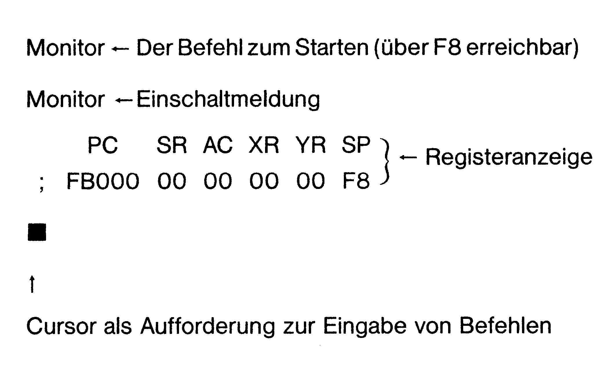
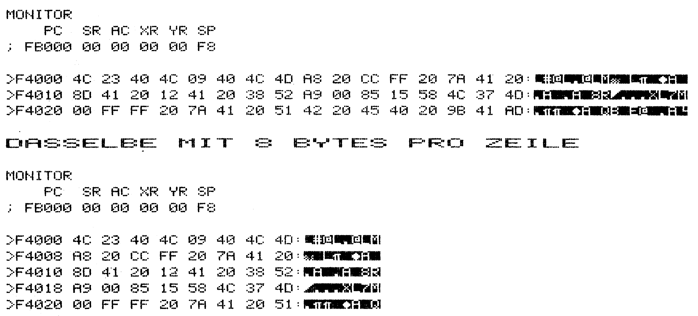
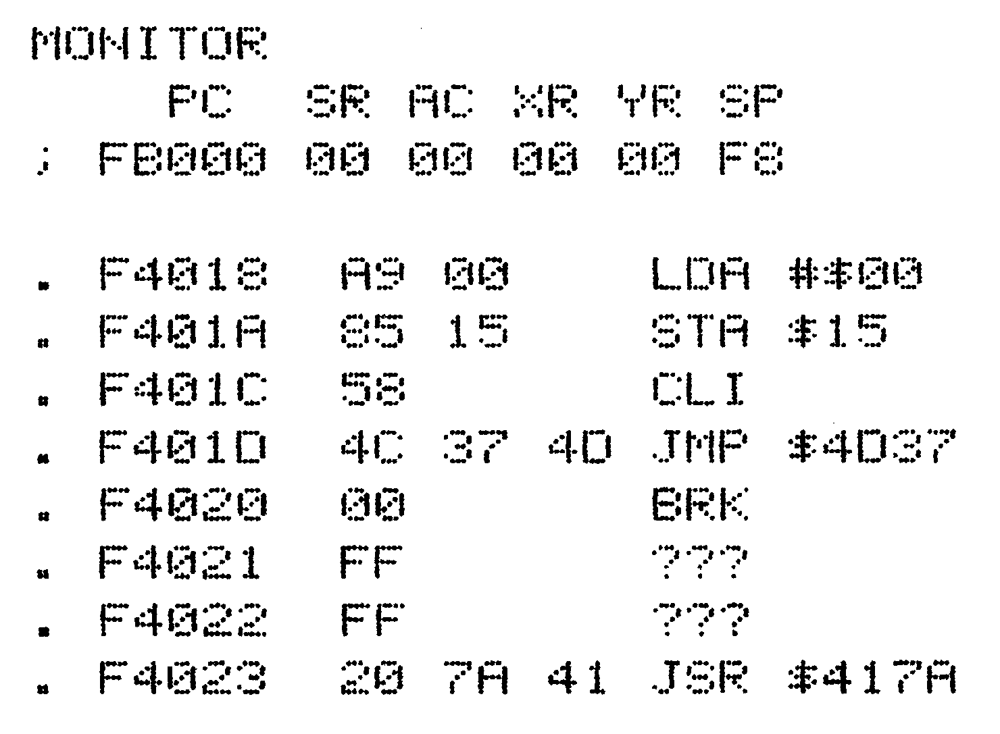
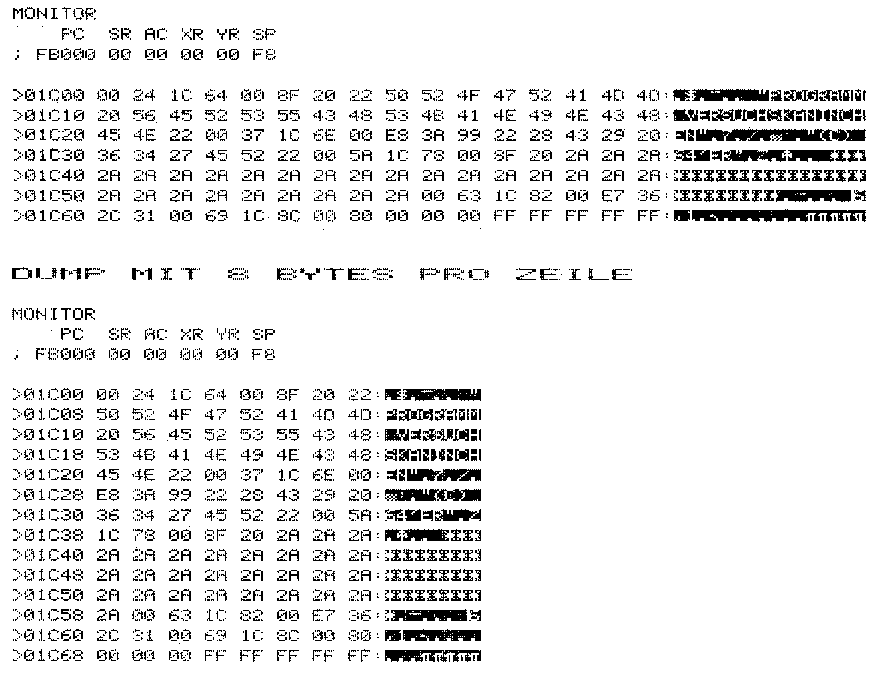

Durchblick mit dem TEDMON
Erfreulicherweise steht dem C 128-Besitzer mit dem integrierten Monitor TEDMON ein leistungsfähiges Werkzeug zur Verfügung. Obwohl in der Anleitung immer von einem Maschinensprache-Monitor die Rede ist, kann auch der Basic-Programmierer den TEDMON effektiv einsetzen. Der folgende Kurs hilft ihm dabei.
Fast jeder etwas fortgeschrittene Basic-Programmierer stand schon einmal staunend vor dem seltsamen Zahlendschungel, der von einem Maschinensprache-Monitor erzeugt wird und wußte nicht, was er damit anfangen sollte. In diesem Kurs werden Sie lernen, daß der Monitor ein durchaus leistungsfähiges Werkzeug darstellt, das auch der Basic-Programmierer hervorragend einsetzen kann, wenn er weiß, wie der Monitor bedient werden muß.
Natürlich geht dies alles nicht ohne Theorie, aber der Kurs ist so gestaltet, daß Sie alles gleich an Ihrem C 128 testen können. Dazu sollten Sie Basic-Kenntnisse mitbringen; wenn Sie gar Maschinensprache beherrschen, wird Ihnen der Kurs noch mehr helfen, erforderlich ist das jedoch nicht.
Zur Funktion des Monitors: Zunächst einmal dient der Monitor nur zum Zugriff auf den Speicher des Computers. Dies klingt nicht sehr interessant, aber man muß sich nur vor Augen führen, wie wichtig der Speicher für unseren Computer ist.
Aufgrund der Befehlsstärke des Basic 7.0 kann man fast vergessen, daß auch ein Basic-Programm nichts anderes als eine Ansammlung von Speicherinhalten ist. Über Basic greift man mittels POKE, PEEK und WAIT auf den Speicher zu. Speicherzellen kann man als Fächer verstehen, in denen Informationen – die Speicherinhalte – untergebracht sind. Die folgenden Erläuterungen von Grundbegriffen mögen dem Fortgeschrittenen langweilig erscheinen, für den Anfänger sind sie unentbehrlich.
Die Chips (zum Beispiel Sound-Chip SID 6581) und das Betriebssystem (das Programm, das den Computer vom Einschalten an dauernd steuert) benötigen viele Zugriffe auf den Speicher. Wenn sich der Computer irgend etwas merken will (zum Beispiel eine Zahl, einen Basic-Befehl oder einen String), so muß er es im Speicher – seinem Gedächtnis – ablegen.
Der Speicher ist in Speicherzellen (auch Speicherplätze genannt) unterteilt. Jeder Speicherplatz kann eine Zahl von 0 (minimal) bis 255 (maximal) oder einfach ein Zeichen (als ASCII-Code, zum Beispiel 65 für »A«) aufnehmen. Diese Speicherkapazität (ein Zeichen) heißt ein Byte. Haben Sie eine Einheit von 1024 Byte, so spricht man auch von einem KiloByte oder kurz KByte. Weitere Unterteilungen besprechen wir beim Binärsystem.
Jede Speicherzelle ist durch eine Adresse genau bestimmt. Die Adresse ist eine Zahl von 0 (minimal) bis 65535 (maximal). Beim C 128 kommt noch die Speicherbank hinzu, da wir die 128 KByte mit den Zahlen 0 bis 65535 nicht eindeutig beschreiben könnten. Auch damit werden wir uns noch auseinandersetzen.
In unserem Computer gibt es nun Speicherplätze, die Auskünfte über das Basic-Programm, Grafik-Daten, das Basic-Programm selbst und seine Variablen oder ähnliches enthalten. Mit dem Monitor können wir diese Speicherzellen auslesen (die Inhalte der Speicherzellen anzeigen lassen) und zurückschreiben (die Inhalte ändern und in die Speicherzelle aufnehmen). Dadurch werden uns Einflußnahmen auf den Computer möglich, die uns vorher verschlossen waren.
Mit dem Monitor unterhalten wir uns ähnlich wie mit dem Basic 7.0 im Direktmodus: Wir geben Kommandos (meist mit Parametern) ein, die dann ausgeführt oder mit einer Fehlermeldung quittiert werden. Damit der Computer weiß, daß die Befehle an den Monitor gerichtet sind, müssen wir den Monitor starten. Dies geschieht am einfachsten über den Basic-Befehl MONITOR, der erfreulicherweise schon als Belegung der Funktionstaste <F8> (<SHIFT+F7>) vorgesehen ist.
Wenn wir MONITOR eingeben (oder einfach <F8> drücken), erhalten wir die Meldung »MONITOR«.
Darunter steht die zweizeilige Register-Anzeige, die wir zunächst ignorieren wollen (sie ist ohnehin nur für Maschinensprache-Programmierer interessant).
Diese Meldung »MONITOR« entspricht der Meldung »COMMODORE BASIC V7.0...«, die beim Reset ausgegeben wird.
Wenn nun der Cursor blinkt, ist er – wie im Basic – das Signal, daß der Computer auf weitere Eingaben wartet.
Um noch einmal auf die Meldung »MONITOR« zurückzukommen: Diese Meldung signalisiert auch, daß – solange wir uns im Monitor befinden – sämtliche Basic-Befehle außer Kraft sind. Von nun an werden nur noch die speziellen Monitor-Kommandos akzeptiert, von denen wir schon im nächsten Abschnitt den ersten kennenlernen werden. Diese Monitor-Kommandos können übrigens – wie Basic-Kommandos – über <RUN/STOP> abgebrochen werden.
In Bild 1 sehen Sie noch einmal, wie ein Bildschirm beim Starten des Monitors <F8> aussieht.

Der erste Befehl: X
Wie gesagt, im Monitor gelten die Basic-Befehle nicht mehr. Wenn man wieder in den Eingabemodus des Basic-Interpreters zurück möchte (vielleicht verspüren Sie so etwas wie Heimweh...), ist dafür der einfachste Monitor-Befehl vorgesehen: Sie geben einfach X ein und drücken – wie in Basic – zur Bestätigung <RETURN>. An der Meldung »READY.« können Sie erkennen, daß Sie sich wieder im vertrauten Basic befinden. X hat keine Parameter, das heißt Sie müssen keine weiteren Angaben machen. Dieser Befehl entspricht einem END in Basic.
Hinweis: Der Befehl, der auf den Basic-Befehl MONITOR folgt, wird nach X nicht abgearbeitet!
In Bild 2 finden Sie alle Informationen zu unserem ersten Befehl. Diese Kurzübersichten haben folgendes Schema:
— Befehl (Buchstabe des Befehls)
— Syntax (wie werden Parameter übergeben)
— Wirkung
— englisches Wort, von dem die Ein-Buchstaben-Abkürzung abgeleitet ist
Befehl: X
Syntax: X
keine Parameter)
Wirkung: Verlassen des Monitors
englisches Wort: exit (deutsch verlassen)
Im Fall des Befehls X ist dies nicht sehr umfangreich, da der Befehl, wie gesagt, keine Parameter kennt.
Das Hexadezimal- und das Binärsystem
Nachdem wir so schnell den Einstieg in die Praxis gefunden haben, müssen wir wieder zur Theorie. X ist nämlich der einfachste aller Befehle (weshalb wir ihn zuerst besprochen haben), für etwas kompliziertere Anwendungen fehlen uns nur noch einige Grundkenntnisse und -begriffe.
Wahrscheinlich haben Sie schon gehört, daß das Zahlensystem, mit dem der Computer intern arbeitet, anstelle der Basis 10 (unser gebräuchliches Dezimalsystem) die Basis 2 hat. Die Ziffern sind also nicht 0 bis 9, sondern 0 und 1. 0 wird in bezug auf elektronische Signale als »AUS«-, 1 als »EIN«-Zustand verstanden. Wie wir eine Dezimalzahl in Potenzen der Basis 10 zerlegen können (1986 = 1*103 + 9*102 + 8*101 + 6*100 = 1*1000 + 9*100 + 8*10 + 6*1 = 1000 + 900 + 80 + 6 = 1986 q.e.d.), können wir auch so den Wert einer Binärzahl ins dezimale Format umwandeln:
\[\begin{aligned} \%10101101 &= 1*2^7 + 0*2^6 + 1*2^5 + 0*2^4 + 1*2^3 \\ &\phantom{{}={}} + 1*2^2 + 0*2^1 + 1*2^0 \\ &= 2^7 + 2^5 + 2^3 + 2^2 + 2^0 \\ &= 128 + 32 + 8 + 4 + 1 \\ &= 173 \end{aligned}\]
Wie Sie sehen, wird einer binären Zahlenangabe das Prozentzeichen »%« vorangestellt, damit wir binäre von dezimalen Zahlen unterscheiden können.
Eine Binärziffer (englisch: binary digit) heißt Bit. Bit ist die Untereinheit von Byte; mit 8 Bit (siehe Beispiel) kann man genau ein Byte darstellen (0 <= 173 <= 255).
Um Werte bis 65535 (65535 = 216 - 1) darzustellen, brauchen wir genau 16 Bit = 2 Byte. Das eine Byte enthält den niederwertigen Teil (Low-Byte, kurz LB), das andere den höherwertigen (High-Byte, kurz HB). Die gesamte Zahl errechnet sich folgendermaßen:
Zahl = LB + 28 * HB = LB + 256 * HB
Die Bits des HB sind die höchstwertigen acht Bit der gesamten Zahl, die Bits des LB die acht niederwertigsten.
Im übrigen können wir auch im Dezimalsystem ähnliche Zerlegungen, die uns für die Arbeit am Computer allerdings nichts bringen, durchführen:
1986 = 86 + 102 * 19 = 86 + 100 * 19 = 86 + 1900
An unserem Beispiel der Binärdarstellung von 173 läßt sich auch der große Nachteil des Binärsystems für den Menschen aufzeigen: Um eine recht kleine Zahl wie 173 darzustellen, werden viele Ziffern (8!) benötigt; um eine Adresse (0 bis 65535) darzustellen, brauchen wir 16 Ziffern (LB+HB = 8 Bit + 8 Bit = 16 Bit = 16 Binärziffern):
65535 = %11111111 11111111
In Bild 3 und 4 finden Sie noch einige Informationen zum Binärsystem und zur LB/HB-Darstellung in Form von Beispielen.
Binäre Zahl: %1011101110
| Ziffer | 1 | 0 | 1 | 1 | 1 | 0 | 1 | 1 | 1 | 0 |
|---|---|---|---|---|---|---|---|---|---|---|
| Stelle Nr. | 9 | 8 | 7 | 6 | 5 | 4 | 3 | 2 | 1 | 0 |
%1011101110 = 0 *2↑0 | (0 als Ziffer für Stelle 0)
+1 *2↑1 | (1 als Ziffer für Stelle 1)
+1 *2↑2 | (1 als Ziffer für Stelle 2)
+1 *2↑3 | (1 als Ziffer für Stelle 3)
+0 *2↑4 | (0 als Ziffer für Stelle 4)
+1 *2↑5 | (1 als Ziffer für Stelle 5)
+1 *2↑6 | (1 als Ziffer für Stelle 6)
+1 *2↑7 | (1 als Ziffer für Stelle 7)
+0 *2↑8 | (0 als Ziffer für Stelle 8)
+1 *2↑9 | (1 als Ziffer für Stelle 9)
= 0*1 + 1*2 + 1*4 + 1*8 + 0*16 + 1*32 +
1*64 + 1*128 + 0*256 + 1*512
= 0 + 2 + 4 + 8 + 32 + 64 + 128 + 512
= 2 + 4 + 8 + 32 + 64 + 128 + 512
= 750
Gehen wir von der Binärzahl %1011011100011101 aus.
| High-Byte | Low-Byte | |
|---|---|---|
| % | 10110111 | 00011101 |
| $ | B7 | 1D |
| # | 183 | 29 |
%1011011100011101 = $ B7 1D = 183*256 + 29
↑ ↑ ↑ ↑
HB LB $B7 $1D
Nun gibt es ein Zahlensystem, das einen Kompromiß zwischen Binärsystem (für die Maschine leichtverständlich) und Dezimalsystem (für den Menschen sinnvoll, für die Maschine ungeeignet) bietet. Es hat die Basis 24 = 16 und folgende Ziffern:
0,1,2,3,4,5,6,7,8,9,A,B,C,D,E,F
Die Buchstaben sind auch Ziffern; dabei entspricht A der dezimalen 10, B der 11, C der 12, D der 13, E der 14 und F der 15.
Mit einer Hex-Ziffer (Hexadezimal kürzt man gerne mit Hex ab) kann man soviel verschiedene Werte wie mit 4 (16=24) Binärziffern darstellen, nämlich die Werte 0 bis 15. Dennoch ist eine Umwandlung ins Binärformat und umgekehrt viel einfacher. 1 Byte = 8 Bit = 2*4 Bit stellen wir mit zwei Hex-Ziffern dar, 1 Adresse = 2 Byte = 16 Bit = 4*4 Bit mit vier Hex-Ziffern (zwei Ziffern HB, zwei für LB). Hex-Zahlen werden gekennzeichnet, indem der Zahl das Dollarzeichen »$« vorangestellt wird.
| Beispiele: | 255 | = %11111111 | = $FF |
| 15 | = %1111 | = $F oder $0F | |
| 4096 | = %1000000000000 | = $1000 | |
| 2459 | = %100110010110 | = $099B |
Nun rechnen wir noch die Beispielzahl $D01A ins Dezimalsystem um:
\[\begin{array}{l@{\;}l@{\quad}l@{\quad}l@{\quad}l} \$D01A &= \$D*16^3 &+ \$0*16^2 &+ \$1*16^1 &+ \$A*16^0 \\ &= \$D*4096 &+ \$0*256 &+ \$1*16 &+ \$A*1 \\ &= 13*4096 &+ 0*256 &+ 1*16 &+ 10*1 \\ &= 53248 &+ 0 &+ 16 &+ 10 \\ &= 53248 &+ 16 &+ 10 & \\ &= 53274 & & & \end{array}\]
Geben Sie »+« und unmittelbar dahinter eine Dezimalzahl ein (am »+« erkennt der Monitor, daß es sich um eine Dezimalzahl handelt) und drücken Sie <RETURN>. Da vor dem »+« kein Monitor-Befehl stand, erkennt er, daß er die Zahl nun in andere Zahlensysteme umzurechnen hat. Sie erhalten von Ihrer Dezimalzahl dann
— die Hexadezimaldarstellung mit vorangestelltem »$«
— wieder die Dezimaldarstellung (vorangestelltes »+«)
— die Oktaldarstellung (??) mit vorangestelltem »&«
— und die Binärdarstellung mit vorangestelltem »%«
Spätestens bei den eingeklammerten Fragezeichen haben Sie sicher gemerkt, daß da etwas noch nicht besprochen wurde: die Oktaldarstellung. Wie aus der Bezeichnung hervorgeht, handelt es sich um das Zahlensystem mit der Basis 8 (23). Es ist zwar auch nicht schlecht zum Umgang mit Binärzahlen geeignet (3 Bit werden zusammengefaßt und ergeben eine Oktalziffer), aber dagegen sprechen mehrere Gründe. Erstens, weil wir mehr Stellen benötigen als beim Hexadezimalsystem und zweitens, daß das Oktalsystem als Zahlensystem veralteter 4-Bit-Computer längst unüblich ist. Lassen Sie sich von der oktalen Zahlenangabe mit dem vorangestellten »&« also nicht stören. Dieses System werden Sie nicht brauchen.
Im übrigen können Sie auch umgekehrte Umrechnungen durchführen; Sie müssen nur das richtige Symbol vor die Zahl setzen ($ für hex, % für bin, + für dez, & für okt). Probieren Sie einmal folgende Beispiele durch:
$FF00
+768
%10110111011 eingeben und <RETURN> drücken
$3455
+3455
Beachten Sie den Unterschied des Wertes der beiden untersten Beispielzahlen; $3455 ist eine Hexadezimalzahl mit dem Dezimalwert 13397 und somit größer als die Dezimalzahl +3455.
Weil die Hexadezimalzahlen so wichtig sind (daß Sie auch praktisch sind, wird sich gleich zeigen), können wir sie auch vom Basic aus umrechnen.
Da hexadezimale Zahlen die Ziffern A bis F enthalten, die nicht numerisch im Sinne des Dezimalsystems sind, müssen Hexadezimalzahlen in Form von Strings eingegeben werden (zum Beispiel A$="FFF0"), in denen kein »$« vorangestellt wird. Die Funktion DEC wandelt den Hex-String dann in eine Dezimalzahl um: A=DEC(A$) oder A=DEC("FFF0"). PRINT DEC("FCE2") ergibt beispielsweise 64738.
Die umgekehrte Umrechnung ist besonders nützlich; sie erfolgt über HEX$ ($ deshalb, weil das Ergebnis nur ein String sein kann, siehe oben): PRINT HEX$(64738) ergibt FCE2.
Das Argument von HEX$ muß – im Gegensatz zum Monitor-Befehl $ – zwischen 0 und 65535 liegen. Das sind alle Werte, die sich mit 16 Bit = 2 Byte (LB und HB) = 2*2 Hex-Ziffern = 4 Hex-Ziffern darstellen lassen. Das Ergebnis wird so mit Nullen aufgefüllt, daß es vierstellig ist.
Dies ist übrigens das praktische an den Hex-Zahlen: Um eine Adresse darzustellen, kommt man immer mit vier Stellen aus, während man im Binärsystem bis zu 16 und im Dezimalsystem bis zu fünf benötigt.
Wir können also festhalten, daß für die Angabe von Adressen das Hexadezimalsystem geeigneter ist als das Dezimalsystem.
Der »Grundbefehl« der Monitore: M
Der Befehl M, den wir nun kennenlernen wollen, ist der wichtigste Befehl eines Monitors. Die Abkürzung M wird daher oft als Abkürzung für Monitor verstanden. M kommt aber wohl eher von »memory dump« (Speicherauflistung).
Dieser Befehl ist bei jedem Monitor vorhanden, heißt fast immer M und hat auch immer ähnliche Syntax. Sogar die Disketten-Monitore, mit ihnen lassen sich Inhalte von Disketten verändern, haben diesen Befehl.
M erzeugt einen sogenannten »Dump« (Auflistung eines Bereichs, ohne bei der Ausgabe zu selektieren, das heißt nur bestimmte Werte auszugeben).
Geben Sie bitte »M F4000 F4020« ein; in Bild 5 und auf Ihrem Bildschirm sehen Sie das Ergebnis. Ein »memory dump« hat folgendes Format:
Basisadresse Hex-Angabe der Speicherinhalte: ASCII-Zeichen

Besprechen wir die einzelnen Angaben:
Das >-Zeichen zeigt an, daß es sich um ein Dump des M-Befehls handelt. Dies ist für das Ändern der Speicherinhalte, was wir noch besprechen werden, elementar.
Die Basisadresse wird – was sofort auffällt – mit fünf Hex-Ziffern angegeben. Die erste Ziffer gibt die Speicherbank an. In diesem Fall ist es $F (dezimal 15), also die Speicherbank des ROM-Bereichs. Die folgenden vier Ziffern sind die gewöhnliche Hex-Darstellung der Adresse. Auch bei der Angabe der Adressen für unser Beispiel haben wir übrigens die fünfstellige Angabe gewählt.
Die Basisadresse gibt an, auf welche Adresse sich die darauffolgenden Angaben beziehen. Der Basisadresse folgen nämlich die Hex-Darstellungen der Inhalte aller Adressen – beginnend mit der Basisadresse.
Aus unserem Beispiel (sehen Sie auf Ihren Bildschirm, wenn Sie den Beispiel-Befehl eingegeben haben, oder auf das bereits erwähnte Bild 5) geht hervor, daß $4C (76) der Speicherinhalt der Adresse $4000 (16384) in Bank $F (15) ist, $23 (35) der von $4001 (16385) in derselben Bank, $40 (64) der von $4002 (16386)... $8D (141) ist – siehe nächste Zeile des Dumps – der Inhalt von $4010 (16400) und so weiter.
Auf die Hex-Bytes folgt der Doppelpunkt »:«. Dieser zeigt an, daß die numerischen Angaben an dieser Stelle aufhören und ist vor allem für das Ändern von Speicherinhalten wichtig. Der Doppelpunkt wird bei einer Eingabe als Endmarkierung einer Anweisung verstanden.
Dem Doppelpunkt folgt die (inverse) ASCII-Darstellung der Speicherinhalte. Falls es sich um Speicherinhalte handelt, die nicht als ASCII-Zeichen (Buchstaben, Ziffern, Grafikzeichen) darstellbar sind, wird ein reverser Punkt ».« ausgegeben. Achtung: Dieser Punkt kann auch für den Code $2E stehen. Es empfiehlt sich also, auch die hexadezimalen Werte zu betrachten.
Die ASCII-Darstellung ist vor allem dann wichtig, wenn Speicherbereiche, in denen ASCII-Codes abgelegt sind, untersucht werden sollen. Geben Sie einmal »M F41BB F424B« ein, und Sie finden rechts die Einschaltmeldung des C 128 und links die Hex-Darstellung der ASCII-Codes.
Hier sei auch darauf hingewiesen, daß der M-Befehl – wie alle Monitor-Kommandos – durch Drücken von <RUN/STOP> abgebrochen werden kann.
Nun wollen wir noch die Syntax von M, die bislang bewußt übergangen wurde, besprechen.
Die normale Syntax ist »M Anfangsadresse Endadresse«, wobei Anfangs- und Endadresse hexadezimal dargestellt werden, solange nichts anderes angegeben wird. Ist die Angabe hexadezimal und hat fünf Stellen (Beispiele: F400C, 10400, 04001), kennzeichnet die höchstwertige Stelle die Speicherbank (0,1,F). Bei Angaben mit weniger hexadezimalen Stellen wird die voreingestellte Bank (0) verwendet.
Als einer der wenigen Monitore überhaupt, bietet TEDMON die Möglichkeit, die Parameter auch in anderen Zahlensystemen zu übergeben. Wichtige Einschränkung: Die Speicherbank kann nicht eingestellt werden, man kann nur mit der voreingestellten Konfiguration (Bank 0) arbeiten. Für Adressen, bei denen die Angabe der Speicherbank überflüssig ist, weil sie in dem Bereich liegen, der in allen Bänken gleich ist ($0000 bis $3FFF oder dezimal 0 bis 16383), kann man damit aber ganz gut leben. Um die Adressen dezimal 700 bis 900 zu dumpen, gibt man einfach »M+700+900« ein. Da die Adressen dezimal 700 bis 900 in diesem gemeinsamen Bereich dezimal 0 bis 16383 liegen, müssen wir nicht die Speicherbank angeben und können auch problemlos die dezimale Darstellung der Parameter einsetzen.
Man kann die Parameter für M teilweise weglassen. »M+700« beispielsweise gibt einen Dump ab 700 aus; es werden zwölf Zeilen (diese Anzahl ist unabhängig von 40- oder 80-Zeichen-Darstellung) ausgegeben. Anschließend lassen sich neue Eingaben machen. Mit M (ohne Parameter!) wird ab der letzten Adresse, die bearbeitet wurde, ein Dump ausgegeben. Dies ist vor allem dann sinnvoll, wenn man die Ausgabe über <RUN/STOP> abgebrochen hat und wieder fortsetzen möchte.
In Bild 6 finden Sie eine Kurzübersicht zum M-Befehl.
Befehl: M
Syntax: M Anfangsadresse bis Endadresse
Wirkung: Memory Dump von Anfangsadresse
bis Endadresse bei Weglassen der
Endadresse: von der Anfangs-
adresse 12 Zeilen lang bei Weglas-
sen beider Parameter:
englisches Wort: Memory Dump (Speicherauflistung)
Wir wollen uns nun ein wenig mit der Funktionsweise des M-Kommandos beschäftigen.
Der Monitor liest die Speicheradresse ähnlich wie der PEEK-Befehl im Basic. Diese werden zunächst in hexadezimaler Form ausgegeben und dann als ASCII-Zeichen (Steuerzeichen als Punkt). Befinden wir uns in der 40-Zeichen-Darstellung, werden 8 Byte pro Zeile, bei 80-Zeichen-Darstellung 16 Byte, ausgegeben.
Listing 1 ist ein Basic-Programm, das den M-Befehl simuliert. Es ist natürlich keine echte Alternative zum Monitor, der ja in Assembler geschrieben und folglich viel schneller ist. Am Listing kann man sich aber die Wirkungsweise des M-Befehls gut veranschaulichen. Die Variable ZL bekommt in Zeile 220 zunächst den Wert 8. Der Rest der Zeile addiert noch 8 hinzu, falls die 80-Zeichen-Darstellung eingeschaltet ist. Dies wird anhand der Speicherzelle 215 festgestellt, die dann den Wert 128 beinhaltet, wenn 80 Zeichen pro Zeile eingestellt sind. Das weitere Programm entnimmt aus der Variablen ZL, wieviele Bytes pro Zeile angezeigt werden sollen.
Die Eingaben, die das Programm fordert, müssen mit Ausnahme der Bank, die dezimal angegeben wird, hexadezimal sein (wie die DEC-Befehle in den Zeilen 250/260 zeigen, die die hexadezimale Eingabe in einen dezimalen Wert umwandeln, damit das restliche Basic-Programm damit arbeiten kann).
Nun hätten wir die Funktionsweise und die Syntax des M-Befehls besprochen. Da M unser erster variantenreicher Befehl ist, ging dies noch etwas mühselig; in Zukunft müssen wir aber nicht mehr die Unterbrechungsmöglichkeit durch <RUN/STOP> oder die Darstellung der Parameter in anderen Zahlensystemen und andere grundsätzliche Dinge besprechen. Außerdem sind die anderen Befehle viel einfacher, und oft werden wir uns sehr kurz fassen können. Wenn Sie aber mit dem M-Befehl umgehen können, haben Sie eine große Hürde in der Anwendung des Monitors genommen.
Vielleicht haben Sie sich gefragt, was denn der M-Befehl für einen Nutzen hat. Diese Frage ist durchaus berechtigt, aber wir hoffen, daß die Anwendungsbeispiele, die wir im folgenden durchprobieren, zeigen, daß man mittels M an viele Informationen herankommt.
Beispiel 1:
Lassen Sie doch einmal das Betriebssystem anzeigen (das Maschinenprogramm, das unmittelbar nach dem Einschalten des Computers aktiviert wird und alle softwaremäßigen Vorgänge steuert) oder den Basic-Interpreter. Diese beiden Programme sind fest eingebaut und können mit »M F4000 FF000« auf den Bildschirm gebracht werden. Vor allem die ASCII-Darstellung auf der rechten Seite des Ausdrucks zeigt dann Basic-Befehlswörter, Fehlermeldungen und so weiter.
Beispiel 2:
Im Speicher beinhalten manche Adressen wichtige Werte für den Computer in Form von Zeigern. Ein Zeiger besteht aus zwei Byte, dem Low- und High-Byte einer Adresse.
Im Zeiger $2D/$2E ($2D enthält das LB, $2E das HB) ist die Anfangsadresse des aktuellen Basic-Programms gespeichert. Geben wir also »M 2D 2E« ein. Da der Monitor immer nur ganze Zeilen anzeigt, erhalten wir nicht nur die beiden Werte aus $2D und $2E, sondern auch weitere Zahlen, die uns aber an dieser Stelle nicht interessieren.
Die beiden am weitesten links stehenden Hex-Bytes sind natürlich die Inhalte von $2D und $2E, wie wir der Basisadresse ($0002D=$2D in Bank $0) entnehmen können. In der Regel erhalten wir $01 für $2D. $01 ist also das LB der Adresse, ab der das Basic-Programm beginnt. Der zweite Wert ist das HB; hierfür erhalten wir direkt nach dem Einschalten $1C. Falls wir die hochauflösende Grafik eingeschaltet haben, ist es $40. Die Adresse ist also $1C01 beziehungsweise $4001, falls der Bereich für hochauflösende Grafik reserviert ist.
Mit Hilfe des $-Befehls zur Umrechnung einer Hex-Zahl ins Dezimalformat können wir noch die dezimalen Werte berechnen lassen. Zur Überprüfung des Ergebnisses können Sie mit X ins Basic zurückgehen und dort über »PRINT PEEK(45)+256*PEEK(46)« das Ergebnis prüfen, das vom genannten Basic-Ausdruck allerdings in dezimaler Form ausgegeben wird.
Die Endadresse des Basic-Programms ist immer in $1210/$1211 (dezimal 4624/4625) gespeichert. Mit dem Monitor ist also »M 1210 1211« einzugeben. Die weitere Behandlung entspricht dem Auslesen des Zeigers ($2D/$2E) auf den Basic-Anfang.
Vom Basic aus können Sie Ihr Ergebnis diesmal mittels »PRINT PEEK(4624)+256*PEEK(4625)« prüfen.
In den Ausdrücken zur Berechnung der Zeigerinhalte können Sie übrigens gut die Formel Wert = LB + 256*HB« erkennen. Bei der Berechnung über den Monitor-Befehl $ sehen Sie, daß man im Hexadezimalsystem nur die Stellen des HB als erste zwei Stellen, die des LB als letzte zwei Stellen einsetzen muß, um den gesamten Wert zu erhalten. Beispiele: LB=$12,HB=$34 = Wert = $3412 LB=$E2,HB=$03 = Wert = $03E2
Dieses Verfahren, die Stellen des HB als höherwertige Stellen einzusetzen, ist mathematisch völlig korrekt; ähnlich geht man vor, wenn man im 10er-System bei der Multiplikation einer Zahl mit einer Zehnerpotenz die Zahl als linke Stellen, die Nullen als rechte Stellen verwendet: 54*100 = 54 00 =5400
Abschließend zum M-Befehl (dieses Kommando werden wir nun dauernd verwenden) noch zwei Hinweise.
Schalten Sie einmal auf die 40-Zeichen-Darstellung um und geben »M+1024+2023« ein. Was auf dem Bildschirm erscheint, ist nichts anderes als der Inhalt des 40-Zeichen-Bildschirmspeichers. Ein Auslesen des 80-Zeichen-Bildschirmspeichers ist mit dem Monitor leider nicht möglich.
Zweiter Hinweis: Wenn das Basic-Programm in Form eines Hex-Dumps ausgegeben werden soll, können Sie die Parameter (Anfangs- und Endadresse) so herausfinden, wie wir es schon beim Auslesen der entsprechenden Zeiger getan haben. Sie werden fast das ganze Programm bei der ASCII-Darstellung wiederfinden, aber kein Befehlswort. Diese werden nämlich als 1-Byte-Werte (sogenannte Token, mehr darüber später) im Speicher abgelegt, die dann meist als Grafikzeichen erscheinen. Der Basic-Befehl LIST muß diese Token erst mit Hilfe einer Berechnungsroutine und einer Umwandlungstabelle in Klartext – die Befehlswörter – umwandeln, der bei LIST ausgegeben wird. Der Grund für diese Prozedur ist, daß 1-Byte-Werte leichter und schneller bearbeitet werden können als mehrere Bytes umfassende Befehlswörter.
Das Ändern von Speicherzellen mit Memory Dump
Im letzten Abschnitt wurde Ihnen für die Anzeige von > am Anfang jeder Dump-Zeile nur die Erklärung gegeben, daß dieses Zeichen es zuläßt, die Speicherinhalte der angezeigten Adressen zu ändern.
Geben Sie bitte »M 1008« ein; Sie werden sehen, daß in diesem Bereich die Belegungen der Funktionstasten gespeichert sind. Wenn Sie nun mit dem Monitor die angezeigten Speicherinhalte ändern wollen, geht dies ganz einfach: Gehen Sie mit dem Cursor auf die Stelle, die geändert werden soll, und führen Sie die Änderung durch. Sie können sowohl die Adresse als auch die Hex-Bytes ändern. Das Ändern der ASCII-Codes wird ignoriert. Drücken Sie dann <RETURN> zur Bestätigung, und die Änderungen werden übernommen. Die Zeile wird noch einmal ausgegeben, damit auch die ASCII-Codes an die neuen Speicherinhalte angepaßt werden.
Daß auf so einfache Weise ein Speicherinhalt geändert werden kann, ist darin begründet, daß das >-Zeichen am Anfang der Zeile ein gültiger Monitor-Befehl ist.
Seine Syntax ist > Basisadresse Speicherinhalte, zum Beispiel > 100A 42 45 49 53 50 (siehe Bild 7).
Befehl: >
Syntax: >Basisadresse Byte1 Byte2 ...
ByteX
Wirkung: Im Speicher werden ab der Basis-
adresse die der Basisadresse
folgenden Bytes abgelegt.
englisches Wort: –
Wenn Sie jedoch die Anzeige unseres Beispiels »M F4000 F4020« ändern wollen, erkennen Sie an der nochmaligen Anzeige der Zeile, daß die Änderungen nicht übernommen wurden. Die Erklärung ist ganz einfach: Es handelt sich um einen Speicher, der nicht beschreibbar ist. Da fast alle Speicherzellen in Bank 15 ($F) ROM-Speicherzellen sind, kann man die Adressen $4000 bis $4020 in Bank $F nicht ändern, denn die grundlegende Eigenschaft von ROM-Speichern ist die, daß seine Inhalte nicht geändert werden können.
Die Abkürzung ROM ist Ihnen unter Umständen noch nicht bekannt, weshalb wir hier die Begriffe ROM und RAM besprechen wollen.
Der Großteil des Speichers unseres C 128 ist RAM (Random Access Memory). Random Access Memory heißt, daß es sich um Speicher handelt, auf den in beliebiger Form zugegriffen werden kann. RAM-Speicherzellen können also sowohl beschrieben als auch ausgelesen werden. Daher übersetzt man RAM mit »Schreib/Lese-Speicher«.
Der Nachteil des RAM-Speichers ist, daß er beim Ausschalten des Computers gelöscht wird. Darum ist der RAM-Speicher für ein Betriebssystem, das man ja immer benötigt, ungeeignet.
ROM-Speicher (Read Only Memory) kann – wie die englische Bezeichnung »read only« sagt, nur gelesen werden, Schreibzugriffe sind dagegen nicht möglich. Der große Vorteil ist, daß die Daten im ROM beim Ausschalten nicht verloren gehen.
Das Programm, auf das der Computer immer wieder zugreift, nämlich das Betriebssystem, ist im ROM gespeichert.
Kurz: Es besteht keine Möglichkeit, bestimmte Speicherzellen zu ändern; dies wäre allerdings auch nicht sinnvoll.
Das Überschreiben von RAM-Zellen ist eine Anwendung, die wir noch etwas genauer besprechen wollen, zum Beispiel das Ändern von ASCII-Tabellen (also reiner Text) in Maschinenprogrammen.
Beim Ändern von solchen Maschinenprogrammen (genauer gesagt: der ASCII-Tabellen solcher Maschinenprogramme) geht man in drei Schritten vor:
- Programm mittels DLOAD oder BLOAD laden
- Vom Monitor aus Änderungen durchführen
- Monitor verlassen (X) und das Programm mittels DSAVE oder BSAVE speichern.
Uns wird hier natürlich der zweite Schritt am meisten interessieren, zunächst aber wollen wir klären, welche Programme wir bei unserem jetzigen Kenntnisstand bearbeiten können und woran man ein Maschinenprogramm erkennt.
Vorher noch zwei wichtige Hinweise. Erstens: Sie benötigen, wie gesagt, keine Maschinensprache-Kenntnisse, es reicht, wenn Sie diesen Kurs bis zu dieser Stelle verfolgt haben. Zweitens: Natürlich kann man auch Basic-Programme mit dem Monitor ändern, doch gibt es dazu ja den Basic-Editor, der viel komfortabler ist. Lediglich für spezielle Änderungen an Basic-Programmen benötigt man den Monitor, und das werden wir an späterer Stelle behandeln.
Die Maschinenprogramme, die wir schon manipulieren können, müssen bestimmte Bedingungen erfüllen:
- Das Programm muß mindestens aus einer Basic-Zeile bestehen, die beim LISTen erscheint (zum Beispiel eine Zeile »1986 SYS 7183« oder »1986 SYS PEEK(45)+256*PEEK(46)+350«).
- Das Programm muß mit dem Basic-Befehl RUN gestartet werden können (zum Beispiel mit RUN "FILENAME" oder DLOAD"FILENAME" und anschließendem RUN).
- Das Programm muß mit DLOAD ladbar sein (und zwar so, daß man es danach mit RUN starten kann).
- Das Programm muß nach dem Laden über DLOAD auch mit DSAVE gespeichert werden können.
Laden Sie nun bitte ein beliebiges Programm, das Sie manipulieren wollen.
Springen Sie dann mit <F8> in den Monitor und dumpen Sie ab der Anfangsadresse des Basic-Programms (in der Regel $1C01) bis zur Endadresse. Wie man Anfangs- und Endadresse eines Basic-Programms im Speicher mit dem M-Befehl feststellt, hat der letzte Abschnitt gezeigt.
Wenn Sie beim Dump eine Stelle finden, an der interessante ASCII-Codes abgelegt sind, drücken Sie zur Unterbrechung des Dumps einfach <RUN/STOP>. Nehmen wir an, Sie haben folgende Zeile entdeckt:
>01F85 28 43 29 20 31 39 38 36 20 42 59 20 58 59 5A 0D:(C) 1986 BY XYZ.
Die ASCII-Darstellung, rechts vom Doppelpunkt, erscheint bei Ihnen natürlich invers. Außerdem werden Sie nach »M 1F85« diese fiktive Zeile nicht erhalten.
Diese Zeile soll uns nur als ausführliches Beispiel dienen, wie man Änderungen durchführt.
Wenn Sie das Beispiel verfolgen wollen, geben Sie einfach die oben stehende Zeile bis zum Doppelpunkt so ein, wie Sie dort steht; dann speichern Sie aber ein eventuell vorher geladenes Programm nach den Änderungen nicht, denn Sie haben es unter Umständen durch diese Zeile zerstört!
Nun wollen wir an unserer Beispielzeile eine kleine Textänderung durchführen, weil uns das Copyright stört. Unser neuer Text soll nun »NO COPYRIGHT!!!« lauten. Das letzte Byte ($0D=13) soll bestehen bleiben, da es sich um ein wichtiges Steuerzeichen handelt.
Um die Änderung durchzuführen, fahren wir mit dem Cursor auf die erste 2 (im Hex-Byte $28 am Anfang der Zeile) und überschreiben jetzt 15 Hex-Byte mit den ASCII-Codes unserer neuen Meldung:
4E 4F 20 43 4F 50 59 52 49 47 48 54 21 21 21
Nach der Bestätigung durch <RETURN> wird die Zeile neu aufgebaut und wir sehen nun folgendes Bild:
>01F85 4E 4F 20 43 4F 50 59 52 49 47 48 54 21 21 21 0D:NO COPYRIGHT!!!.
An den ASCII-Codes können wir sofort und bequem erkennen, daß die Änderung korrekt durchgeführt wurde.
Nach dieser großen Manipulation fällt uns ein, daß der Text so viel schöner wäre: »NO COPYRIGHTS .«, wobei der Punkt am Ende des Textes wirklich erscheinen soll und kein Steuerzeichen ist!
Diesmal müssen wir nicht gleich eine ganze Zeile ändern, es reicht, an den letzten Bytes folgende Änderungen durchzuführen:
- das erste $21-Byte soll zum »S« werden
- das zweite $21-Byte soll zum Leerzeichen » « werden
- das dritte $21-Byte soll zum Punkt ».« werden
Da wir nur drei von 16 Byte ändern müssen, lohnt es nicht, die ganze Zeile neu zu schreiben. Wir fahren nur mit dem Cursor auf das erste $21-Byte, überschreiben es mit »53«, dem Code für »S«, (das war Änderung 1, siehe oben). Dann fahren wir mit dem Cursor auf das zweite $21-Byte auf die Ziffer 1 und überschreiben sie mit »0«, wir erhalten $20, den Code oder ein Leerzeichen (das war Änderung 2, siehe oben). Zu guter Letzt fahren wir auf die Ziffer 1 des nächsten $21-Bytes und überschreiben es mit »E«, so daß sich der Punkt-Code $2E ergibt. Nach diesen Änderungen drücken wir <RETURN> und erhalten folgende Zeile:
>01F85 4E 4F 20 43 4F 50 59 52 49 47 48 54 53 20 2E 0D:NO COPYRIGHTS ..
Wir sehen auch hier, daß die Änderung übernommen wurde. Aber halt, da soll doch nur ein Punkt ausgegeben werden und rechts vom Doppelpunkt sind gleich zwei vorhanden.
Nein, natürlich ist alles richtig: Der erste Punkt steht für den Code $2E, der zweite symbolisiert das nicht-druckbare Byte $0D und erscheint nicht wirklich. Hier kann man gut erkennen, daß in der ASCII-Darstellung Punkt nicht gleich Punkt ist; auf das Hex-Byte kommt es an (nur ein $2E-Byte ist ein echter Punkt).
Gezielte Suche nach Bytes über den H-Befehl
Wenn Sie ein Programm mit dem M-Befehl durchforsten und/oder ändern wollen, werden Sie bald merken, daß die Suche nach bestimmten Stellen innerhalb des Programms auf die Dauer recht mühselig ist.
H ist die Abkürzung des englischen Verbs »to hunt«, welches »jagen« heißt.
Die Syntax ist »H Anfangsadresse Endadresse Byte1 Byte2 Byte3 ... ByteX« (Kurzübersicht zum H-Befehl in Bild 8), wobei die Anzahl der Bytes frei wählbar ist; mindestens ein Byte muß im durch Anfangs- und Endadresse umgrenzten Speicherbereich gesucht werden. Die Obergrenze für die Anzahl der Bytes ist einfach die Zeilenlänge (zwei Zeilen auf dem 80-Zeichen-Bildschirm, bei 40-Zeichen vier).
Befehl: H
Syntax: H Anfangsadresse Endadresse
Byte1 ... ByteX
oder H Anfangsadresse Endadresse
"Suchtext
Wirkung: sucht nach den Bytes oder den
ASCII-Codes des Suchtextes im
Bereich von Anfangsadresse bis
Endadresse.
englisches Wort: Hunt (englisch jagen)
Der Monitor gibt auf den H-Befehl hin alle die Adressen im fünfstelligen Hexadezimalformat aus, ab denen die gewünschte Bytefolge gefunden wurde. Sehen wir uns den neuen Befehl, auf den Sie bald nicht mehr verzichten wollen, an einem Beispiel an. Geben Sie dazu bitte »H F0000 F5000 52 45 53 54« ein.
Der Monitor gibt dann die Adressen F0A80 und F4443 als Ergebnis seiner Suche aus. Mit M können Sie nachprüfen, ob an den angegebenen Adressen wirklich die Bytes $52 $45 $53 $54 stehen. Zur Adresse F0A80 ist eine wichtige Anmerkung zu machen:
Wenn die Adresse x0A80 (x deshalb, weil die Speicherbank bei Adressen, die in dem Bereich liegen, der allen Bänken gemeinsam ist, uninteressant ist) nach dem H-Befehl auf dem Bildschirm erscheint, ignorieren Sie bitte diese Angabe! Sie werden feststellen, daß immer, wenn die Adressen ab $0A80 im Suchbereich liegen, x0A80 als Ergebnis gemeldet wird. Ab dieser Adresse merkt sich nämlich der Monitor die Bytes, die gesucht werden sollen. Klar, daß ein Vergleich dieses Monitor-Suchpuffers mit sich selbst ein positives Suchergebnis ergibt!
Eigentlich gehört dieser Hinweis ins Handbuch, aber auch die Anleitungen der uns bekannten C 64-Monitore enthalten keinen ähnlichen Hinweis. Die Adresse des »Suchpuffers« ist von Monitor von Monitor verschieden; dieser läßt sich jedoch ausfindig machen, und wir möchten Ihnen an dieser Stelle das Verfahren vorstellen, mit dem man den Bereich des Puffers feststellen kann. Dieses Verfahren wird für Sie eine gute Übung im Umgang mit dem Monitor-Kommando H sein.
Suchen Sie nach einer seltenen Bytefolge wie $D0 $E0 $F0 $00 $10 im ganzen Speicher:
H 00000 FFFFF D0 E0 F0 00 10
Nacheinander werden Sie alle möglichen Adressen erhalten, die sich (mit 99prozentiger Sicherheit) nur in der Speicherbank unterscheiden, die Adreßangabe wird (fast) immer gleich sein. Sollten nicht alle angezeigten Adreßangaben gleich sein, suchen Sie noch nach einer anderen Bytefolge wie $E1 $D1 $F1 $01 $11. Streichen Sie (am Bildschirm einfach mittels der DEL-Taste) alle Adreßangaben weg, die nicht bei beiden Suchbefehlen gemeldet wurden. Die einzige Adresse, die übrigbleibt, ist dann eindeutig die Anfangsadresse des Monitor-Suchpuffers.
Falls bei unserem Suchverfahren etwas unklar war, sei noch der Hinweis gegeben, daß wir die Angabe der Bank ignorieren müssen; $F0A80 ist also nichts anderes als $00A80 und $10A80.
Bei unserem ersten Beispiel dieses Abschnitts haben wir über »H F0000 F5000 52 45 53 54« übrigens nach der ASCII-Folge »REST« gesucht. Die Suche nach ASCII-Zeichen wird eine der häufigsten Anwendungen des H-Befehls sein. Damit Ihnen dies leichter fällt, ist im TEDMON auch die Möglichkeit gegeben, nach ASCII-Codes zu suchen. Diese wurde Ihnen bislang vorenthalten, aber jetzt sollen Sie es spätestens erfahren (in der Kurzübersicht wurde dafür diese Möglichkeit schon genannt).
Wenn Sie im Bereich von $0000 bis $5000 in Bank $F (dezimal 15) suchen lassen wollen, ist auch folgende Eingabe möglich:
H F0000 F5000 'REST
Das Apostroph signalisiert dem Monitor, daß ein ASCII-Text folgt, der vor der Suche in die entsprechenden Bytes umzuwandeln ist. Leider existiert diese Eingabemöglichkeit nur beim H-Befehl, obwohl man sie bei einigen anderen Kommandos sicher auch gerne hätte. Hier könnte man sich unter Umständen mit dem Suchpuffer behelfen, da die Zeichen in ihm schon in umgewandelter Form vorliegen.
Die ASCII-Codes
Schon beim M-Befehl wurden die ASCII-Codes angesprochen, allerdings ohne Erklärung.
Wie wir schon erwähnt haben, erkennt der Computer nicht die Zahlen und Zeichen so wie wir (wenn wir sie am Bildschirm sehen), sondern stellt Zahlen als elektronische Signale im Binärformat dar: Strom ein ist gleich »Bit gesetzt« (1), Strom aus entspricht »Bit gelöscht« (0). 8 Bit zusammengefaßt erlauben 256 verschiedene Kombinationen (1 bis 255 und die 0), und ein solches Byte kann mit zwei Hexadezimalziffern dargestellt werden. Da der Computer zunächst einmal nur mit Zahlen rechnen kann, stellt er auch Zeichen (wie die Buchstaben und Grafikzeichen, aber auch die Ziffern wie 0, 1, ... 9) als elektronische Signale – effektiv also als Zahlen – dar.
Dazu ein Beispiel:
A = %01000001 = $41 = #65 (# verwenden wir fortan als Symbol für Dezimalzahlen, da es das geläufigste ist. Dieses Symbol kennt der TEDMON jedoch nicht).
Statt PRINT"A" können wir in Basic auch PRINT CHR$(65) oder PRINT CHR$(DEC("41")) schreiben.
Der CHR$-Befehl gibt nämlich zu einem ASCII-Code das betreffende Zeichen aus. Wenn Sie unser Beispielprogramm »M-Simulation« (Listing 1) ansehen, finden Sie bei der Ausgabe der ASCII-Darstellung, die in den Zeilen 340 bis 380 erfolgt, den CHR$-Befehl wieder.
Das Gegenstück ist der ASC-Befehl: PRINT ASC("A") ergibt 65. ASC sind die ersten drei Buchstaben der Abkürzung ASCII. ASCII heißt »American Standard Code for Information Interchange«, übersetzt ins Deutsche »Amerikanische Standardcodierung für den Datenaustausch«. Das Ziel dieser Codierung war, daß verschiedene Geräte Zeichen untereinander ohne Probleme austauschen können. Leider ist dieses Vorhaben gescheitert, denn viele Hersteller weichen davon ab und verwenden eigene Codierungen. Wenigstens sind die ASCII-Codes der Commodore-Geräte untereinander einheitlich, sonst könnten Sie nicht einmal ein C 64-Basic-Programm im C 128-Modus laden.
Im Handbuch finden Sie im Anhang eine Tabelle der ASCII-Codes. Listing 2 gibt eine hexadezimale Tabelle der ASCII-Codes aus. Lassen Sie sich am besten die Tabelle auf dem Drucker ausgeben und hängen diese in der Nähe Ihres Computers auf. Sie werden diese Tabelle noch oft brauchen.
Diese Tabelle umfaßt allerdings nicht die sogenannten Steuerzeichen. Zu den Codes $00 bis $1F sowie $80 bis $9F sind darum auch keine Zeichen ausgegeben. Bei $20, $A0 und $E0 finden Sie auch kein Zeichen. Hier handelt es sich jedoch nicht um Steuerzeichen, sondern um die Codes für das Leerzeichen.
Steuerzeichen – auch nichtdruckbare Zeichen genannt – lassen sich auch über PRINT ausgeben. Sie erzeugen also nicht direkt ein Zeichen, sondern rufen eine Steuerfunktion hervor. PRINT CHR$(7) erzeugt beispielsweise das akustische Klingelzeichen.
Die Steuerfunktionen finden Sie in Bild 9 zusammengefaßt. Wenn wir mit dem Monitor Basic-Programme gegen LISTen schützen wollen, werden Sie merken, was sich mit den Steuerzeichen alles anstellen läßt!
| Steuerzeichen | ASCII-Code |
|---|---|
| Unterstreichen ein * | $02 = # 2 |
| Zeichenfarbe auf weiß stellen | $05 = # 5 |
| Klingelzeichen | $07 = # 7 |
| Tabulator | $09 = # 9 |
| Zeilenvorschub LINE FEED (LF) | $0A = # 10 |
| SHIFT/C= blockieren | $0B = # 11 |
| SHIFT/C= wieder entriegeln | $0C = # 12 |
| CARRIAGE RETURN (Wagenrückl.) | $0D = # 13 |
| Text-Zeichensatz ein | $0E = # 14 |
| Blinkmodus ein * | $0F = # 15 |
| CURSOR DOWN (Cursor runter) | $11 = # 17 |
| REVERS ON (Revers ein) | $12 = # 18 |
| HOME (Cursor nach links oben) | $13 = # 19 |
| DELETE (Zeichen löschen) | $14 = # 20 |
| TAB (Tabulator setzen/löschen) | $18 = # 24 |
| ESCAPE (Sonderfunktionen) | $1B = # 27 |
| CURSOR RIGHT (Cursor rechts) | $1D = # 29 |
| Zeichenfarbe orange | $81 = #129 |
| Unterstreichen aus * | $82 = #130 |
| SHIFT RETURN | $8D = #141 |
| Grafik-Zeichensatz ein | $8E = #142 |
| Blinkmodus aus * | $8F = #143 |
| Zeichenfarbe schwarz | $90 = #144 |
| CURSOR UP (Cursor rauf) | $91 = #145 |
| REVERS OFF (Revers aus) | $92 = #146 |
| CLEAR (Bildschirm löschen) | $93 = #147 |
| INSERT (1 Zeichen einfügen) | $94 = #148 |
| Zeichenfarbe braun | $95 = #149 |
| Zeichenfarbe hellrot | $96 = #150 |
| Zeichenfarbe grau 1 | $97 = #151 |
| Zeichenfarbe grau 2 | $98 = #152 |
| Zeichenfarbe hellgrün | $99 = #153 |
| Zeichenfarbe hellblau | $9A = #154 |
| Zeichenfarbe grau 3 | $9B = #155 |
| Zeichenfarbe purpur | $9C = #156 |
| CURSOR LEFT (Cursor links) | $9D = #157 |
| Zeichenfarbe gelb | $9E = #158 |
| Zeichenfarbe türkis | $9F = #159 |
Lediglich zum Steuerzeichen »ESC« möchten wir noch einige Hinweise geben. Wenn Sie den ESC-Code (#27 = $1B) senden, wird das nächste Zeichen, das über PRINT gesendet wird, als ESC-Anweisung (zum Beispiel »A« zum Einschalten des automatischen Einfügemodus) behandelt. Damit werden wir uns noch genauer beschäftigen.
Wir wollen aber zunächst nach ASCII-Zeichen suchen (mit dem H-Befehl). Dazu ist eine Umwandlung in den ASCII-Code erforderlich, die Ihnen mit einiger Übung leicht fallen wird.
Für viele Zeichen gibt es einfache Regeln, um den ASCII-Code zu bestimmen:
Bei Ziffern (0 bis 9) wird einfach $30 dazugezählt; Beispiele: 0 = $30, 5 = $35, 9 = $39.
Ähnlich geht es bei den Satzzeichen, die Sie über <SHIFT+Zifferntaste> erreichen (! = <SHIFT+1>):
In diesem Fall wird statt der $30 eine $20 dazugezählt. Beispiele: ! = <SHIFT+1> = $21; " = <SHIFT+2> = $22; ( = <SHIFT+8> = $28.
Wenn wir nach dem Text »)1977« suchen wollen, der ja in der Einschaltmeldung des C 128 (»(C)1977 MICROSOFT CORP.«) vorkommt, geht dies folglich über H F4000 FF000 28 31 39 37 37.
Wir suchen nur im ROM-Bereich (Bank 15 ab $4000), da die Einschaltmeldung logischerweise dort steht (sie muß ja auch nach dem Ausschalten des Computers vorhanden sein und darf deshalb nicht im RAM stehen).
Die Eingabemodi des Betriebssystems
In diesem Abschnitt befassen wir uns ein wenig mit der Eingabe der Zeichen und der Umwandlung der Tastatureingaben in den ASCII-Code. Dies ist ein Thema, das zwar nur am Rande zum Bereich Monitor gehört, aber trotzdem viele interessante Informationen vermittelt.
Wenn Sie sich im Basic-Editor befinden, wird einfach jedes Zeichen, das Sie über Tastatur eingeben, direkt auf dem Bildschirm ausgegeben. Nebenbei wird noch der Cursor angezeigt.
Beispiel: Sie drücken auf die Taste <A>, und A erscheint auf dem Bildschirm. Sie drücken <SHIFT> und die <CLR/HOME>-Taste und der Bildschirm wird wie mit PRINT CHR$(147) gelöscht. Sie sehen also, daß hier jedes Zeichen – auch Steuerzeichen für Cursor etc. – ausgegeben wird. Eine Eingabe wird mit <RETURN> abgeschlossen.
Diesen Eingabemodus nennt man »normal mode« (normaler Modus), da – wie gesagt – jedes Zeichen direkt ausgegeben wird und Steuerzeichen wie CLR/HOME direkt ausgeführt werden.
Ein anderer Modus ist der sogenannte »quote mode« (Anführungszeichen-Modus oder Hochkomma-Modus). In diesem befindet man sich, wenn ein Anführungszeichen ausgegeben wird. Wird allerdings ein zweites ausgegeben, befindet man sich wieder im »normal mode«.
Wie bei allen Eingabemodi wird die Eingabe mit <RETURN> abgeschlossen. Tippen Sie bitte einmal folgende Zeichen ein (im Basic-Editor, nicht im Monitor):
10 PRINT "Drücken Sie nicht die <RETURN>-Taste! Denn wenn Sie sie drücken, so haben Sie Ihre Eingabe abgeschlossen. Es ist egal, in welchem Eingabemodus Sie die Zeichen eingegeben haben. »10 PRINT« wurde im »normal mode« eingegeben und nach dem »"« befanden Sie sich im »quote mode«.
Der große Unterschied zwischen »quote mode« und »normal mode« ist der, daß im »quote mode« Steuerzeichen (wie CLR/HOME) – mit Ausnahme von ESC und DEL – nicht ausgeführt werden, sondern als inverse Zeichen – meist Grafikzeichen – erscheinen. Statt des Bildschirmlöschens wird, wenn Sie nach der oben stehenden Eingabe auf <SHIFT+CLR/HOME> drücken, ein inverses Herz ausgegeben. Der Sinn des »quote mode« ist der, in Strings – die ja zwischen zwei Anführungszeichen stehen – Steuerzeichen einzubauen. Wenn Sie die Zeile 10 PRINT "inverses Herz" nämlich ausführen lassen, befindet sich das Programm nicht im »quote mode« und der Bildschirm wird gelöscht. Beim LISTen hingegen steht das Steuerzeichen in Anführungszeichen und wird daher invers dargestellt und nicht ausgeführt.
Ein wichtiger Hinweis noch zum »quote mode«: Er ist immer dann aktiv, wenn eine ungerade Zahl von Anführungszeichen ausgegeben wurde. Dabei ist es unbedeutend, ob diese in der Zwischenzeit mittels DEL gelöscht wurden.
Der dritte Eingabemodus ist der »insert mode«, der Einfügemodus. In diesen gelangen Sie durch Drücken von <SHIFT+INS/DEL>. Der Einfügemodus wird dann beendet, wenn pro gedrücktes <SHIFT+INS/DEL> ein Zeichen eingegeben – und damit eingefügt – wurde.
Innerhalb des Einfügemodus gelten die gleichen Regeln wie im Anführungsmodus. Wenn Sie im Normalmodus auf eine Steuertaste (Cursor-Tasten, CLR/HOME,..) drücken, wird die Steuerfunktion ausgeführt, im »quote mode« und im »insert mode« hingegen nicht – es erscheint zum Beispiel ein inverses Herz.
Im »insert mode« ist zusätzlich DEL außer Kraft gesetzt.
Der vierte und letzte Eingabemodus ist der »auto insert mode«, der automatische Einfügemodus, in den Sie über <ESC> und <A> gelangen und aus dem Sie mittels <ESC> und <C> wieder herauskommen. In diesem Modus sind die Steuertasten nach wie vor wirkungsvoll; es handelt sich also um einen Normalmodus, bei dem die Zeichen eingefügt werden. Dieser Eingabemodus ist für unsere Zwecke nicht so ergiebig und soll nicht weiter behandelt werden.
Von jetzt an werden wir neue Befehle kennenlernen, denn je mehr Werkzeug in Form von Monitorbefehlen zur Verfügung stehen, desto besser können wir als direkte Folgeerscheinung mit unserem C 128 arbeiten!
Der nächste Befehl dient zum Verschieben von Speicherbereichen. Dies ist eine der Grundfunktionen eines Monitors.
Man kann einen Monitor auch als Textverarbeitung für den Speicher, also als Speicherverarbeitung ansehen, die eine komfortable Behandlung des Speichers ermöglicht (bequemer als über POKE, PEEK und BANK). So wie eine Textverarbeitung eine Kopierfunktion für Textbereiche haben sollte, kommt man auch mal in die Lage, einen Speicherbereich kopieren zu müssen.
Der entsprechende Befehl des TEDMON heißt »T«. T kommt vom englischen Wort »transfer«, welches die deutsche Bedeutung »übertragen« hat. Die Syntax lautet:
T Anfangsadresse Endadresse Zieladresse
Anfangsadresse und Endadresse begrenzen den Originalbereich, der kopiert werden soll. Der Zielbereich wird nur durch die Zieladresse bestimmt, die die Anfangsadresse des Zielbereichs ist. Die Endadresse des Zielbereichs kann der Monitor selbst ausrechnen, denn die Länge des zu verschiebenden Bereichs ist ihm durch Anfangsadresse und Endadresse indirekt mitgeteilt worden.
Alle nötigen Informationen zum T-Befehl finden Sie in Bild 10 (Kurzübersicht).
Befehl: T
Syntax: T Anfangsadresse Endadresse
Zieladresse
Wirkung: verschiebt Bereich von Anfangs-
adresse bis Endadresse zur
Zieladresse.
englisches Wort: Transfer (übertragen, verschieben)
Zum T-Befehl ist aber noch eines zu sagen: Maschinenprogramme sind nach dem Verschieben nicht unbedingt lauffähig! Die Programme würden nur dann laufen, wenn keine absoluten Adressierungen vorkommen; dies ist jedoch selbst bei Kleinstroutinen nur mit Mühe zu erreichen.
Leider kennt der TEDMON des C 128 nicht die entsprechenden Verschiebebefehle des SMON zum C 64, der das Anpassen eines Maschinenprogramms an einen neuen Speicherbereich in professioneller Manier löst.
Listing 3 ist ein Basic-Programm – darum ist es so langsam – zur Simulation des T-Befehls mittels Basic.
Sie können im Programm die Formel zur Berechnung der Endadresse des Zielbereichs gut erkennen.
Die Länge von Listing 3 zeigt, daß die Verschiebefunktion nicht ganz so einfach zu programmieren ist. Vom Verhältnis Quellbereich/Zielbereich bezüglich der Lage im Speicher hängt nämlich die Form der Schleifenkonstruktion ab.
Im übrigen kann es passieren, daß bei T-Befehlen wie »T 00000 01000 FA000« der Monitor (beziehungsweise das Beispielprogramm) bestimmte Adressen ausgibt. Diese Adressen sind Adressen, die beim Verschieben Schwierigkeiten gemacht haben, weil der zu den Adressen gehörende Zielbereich nicht als RAM verwendbar ist.
Die Adressen werden ausgegeben, wenn man versucht, ROM-Bereiche als Zielbereiche zu verwenden (im Beispiel »T 00000 01000 FA000 wäre der Bereich ab $A000 in Bank $F (dezimal 15) als Zielbereich gewählt worden, obwohl es sich um einen ROM-Bereich handelt). Dieser Fehler wird dadurch gefunden, daß der Monitor beziehungsweise das Beispielprogramm nach jedem Byte prüft, ob der Zielbereich an der Stelle des gerade verschobenen Bytes auch mit dem Originalbereich übereinstimmt. Bei RAM-Bereichen, die man ja auch beschreiben und somit als Zielbereich einsetzen kann, tritt natürlich eine Übereinstimmung auf; bei ROM-Bereichen, die als Festwertspeicher nur les-, nicht aber veränderbar sind, führt ein solches Überprüfen (Verify) zu einem Fehler. Gleiches gilt, wenn man beim M-Befehl – oder mittels des Unterbefehls > – einen ROM-Bereich zu ändern versucht.
Bei Eingabefehlern erweist es sich als sehr nützlich, daß der Monitor die Adressen meldet; man muß aber bedenken, daß beim Transport in ROM-Bereiche aufgrund der Prozessor- und Speicherverwaltungsstruktur nicht das ROM, sondern das an gleicher Adresse liegende RAM beschrieben wird. So könnten Programme oder Programmteile verlorengehen, ohne daß man es beabsichtigt hat. Wenn man aber anhand der ausgegebenen Adressen merkt, daß ein Fehler zustandekam, kann man noch schnell mit <RUN/STOP> abbrechen und somit den Schaden begrenzen.
Noch etwas zum Verifizieren:
Leider ist das Verifizieren – ob beim Monitor oder beim Simulationsprogramm – nicht 100prozentig sicher: Wenn Sie den ROM-Bereich $4000 bis $A000 (in Bank 15) sich selbst kopieren lassen (erforderliches Monitor-Kommando: T F4000 FA000 F4000), könnte der Monitor den Fehler nie ausfindig machen; er würde immer den Bereich $4000 bis $A000 mit dem Bereich selbst vergleichen und logischerweise keinen Fehler entdecken. Der Computer schreibt aber den ROM-Bereich dann nicht ins ROM selbst (das geht ja nicht), sondern ins darunterliegende RAM. Das heißt, effektiv würde der Bereich $F4000 bis $FA000 in den Bereich $04000 bis $0A000 kopiert. Prüfen Sie das doch einmal nach, indem Sie mittels M (den Vergleichsbefehl des Monitors haben wir noch nicht durchgenomen) den Bereich $4000 bis $A000 in Bank 0 mit dem entsprechenden Bereich in Bank 15 ($F) vergleichen, nachdem Sie über »T F4000 FA000 F4000« das Verschieben durchgeführt haben.
Beim Kopieren mit »T F4000 FA000 F4001« würde der Monitor hingegen Fehler entdecken, da der Zielbereich ($F4001 bis $FA001) nun ein anderer Speicherbereich wäre als der Originalbereich ($F4000 bis $FA000).
Noch ein Hinweis, um Mißverständnissen vorzubeugen: Selbstverständlich kann man ROM-Bereiche ins RAM an anderer Stelle kopieren, nur nicht umgekehrt. So kann man den Bereich $F4000 bis $FA000 zwar nicht nach $F4001 bis $FA001 kopieren, wohl aber nach $04001 bis $0A001 verschieben: T F4001 FA001 04001.
Der T-Befehl allein ist zunächst einmal nicht so recht verwertbar, vor allem erscheint einem der Nutzen des Kommandos dann zweifelhaft, wenn man nicht Maschinenprogramme bearbeiten will.
Wir möchten Ihnen zur Entschädigung ein Verfahren vorstellen, um die Lage des Basic-Programms im Speicher zu ändern, also kurz gesagt: Das Verschieben des Basic-Programms in einen anderen Bereich.
Bitte lösen Sie dazu einen Reset aus und laden dann ein Basic-Programm Ihrer Wahl in den Speicher. Es sollte der Einfachheit halber nicht allzulang sein.
Wir verwenden als Beispielprogramm das Programm »CHANGE UNIT« von der Test/Demo-Diskette zur 1570/1571 und laden es über DLOAD"CHANGE UNIT" <RETURN>. Das Programm soll nun nach $A000 (in Bank 0) verschoben werden.
Am besten arbeiten wir nun gemeinsam an diesem Beispielprogramm, das wohl jeder C 128-Besitzer mit einer der neuen Commodore-Floppy-Stationen zur Verfügung hat, das Verschieben dieses Programms durch. Daran können Sie natürlich auch lernen, wie man beliebige Programme verschiebt. Die einzelnen Schritte unseres Vorgehens numerieren wir mit römischen Zahlen.
I. Bestimmung von Anfangs- und Endadresse
Geben Sie dazu folgenden Audruck ein (? ist die Abkürzung für PRINT):
?HEX$(PEEK(45)+256*PEEK(46)),HEX$(PEEK(4624)+256*PEEK(4625))Sie erhalten die hexadezimale Darstellung von Anfangs- (linker Wert) und Endadresse (rechter Wert). Hexadezimale Darstellung deshalb, weil wir mit ihr an einigen Stellen besser zurechtkommen.
Bei unserem Beispielprogramm CHANGE UNIT von der Test/Demo-Diskette erhalten wir den folgenden Ausdruck:
1C01 20F5
Es wird nicht erwähnt, daß es sich um Adressen in Bank 0 handelt, da dies von Anfang an feststeht: Bank 0 ist die Speicherbank, in der das Basic-Programm abgelegt ist.
Die Anfangsadresse ist in der Regel $1C01 (wie bei unserem Beispiel) oder $4001 bei Benutzung der Befehle zur hochauflösenden Grafik, die Endadresse – im Beispiel $20F5 – variiert natürlich (Programme sind ja auch unterschiedlich lang).
Diese Werte müssen wir uns natürlich merken, denn wenn wir das Basic-Programm verschieben wollen, müssen wir dem Monitor Anfangs- und Endadresse des Basic-Programms im Speicher mitteilen (unser Monitor ist schließlich kein Hellseher, wir haben ihn mit einer ausreichenden Anzahl von Informationen zu versorgen).
II. Bestimmung der Endadresse des Zielbereichs
Vielleicht stutzen Sie zunächst ein wenig, warum denn die Endadresse des Zielbereichs berechnet werden soll, wenn dies der Monitor ohnehin tut.
Die Bestimmung ist auch nur erforderlich, damit wir die Endadresse in bestimmten Adressen, die der Basic-Interpreter benötigt, ablegen können. Die Endadresse des Zielbereichs ergibt sich über die Formel
Endadresse Zielbereich = Endadresse - Anfangsadresse + Zieladresse.
Wir errechnen den hexadezimalen Wert über den Ausdruck ?HEX$(DEC("hier Hex-Endadresse aus Schritt I einsetzen") - DEC("hier Hex-Anfangsadresse aus Schritt I einsetzen") + DEC("hier Hex-Endadresse des Zielbereichs einsetzen"))
In unserem konkreten Fall »CHANGE UNIT nach $A000« heißt dies folgendermaßen:
?HEX$(DEC("20F5")-DEC("1C01")+DEC("A000"))und bringt folgendes Ergebnis auf den Bildschirm:
A4F4
Nun haben wir nach den Schritten I und II alle wichtigen Parameter errechnet:
| Anfangsadresse (Originalbereich) | = $1C01 |
| Endadresse (Originalbereich) | = $20F5 |
| Anfangsadresse (Zielbereich) | = $A000 |
| Endadresse (Zielbereich) | = $A4F4 |
III. Zeiger des Interpreters setzen
Nun müssen wir die Zeiger des Interpreters auf Anfangs- und Endadresse des Basic-Programms im Speicher an die Werte nach dem Verschieben (das Verschieben ist dann der nächste Schritt) anpassen. Außerdem ist ein Null-Byte als Markierung vor den neuen Basic-Start (das Programm soll nun bei $A000 liegen) anzubringen.
Vorher noch etwas zur Wiederholung des Hexadezimalsystems:
Das Low-Byte einer vierstelligen Hexadezimalzahl besteht aus den beiden am weitesten rechts stehenden Ziffern, die beiden am weitesten links stehenden Ziffern kennzeichnen das High-Byte. Beispiel: Zahl = $ABCD; LB (Abkürzung für Low-Byte) = $CD, HB (Abkürzung für High-Byte) = $AB.
Da in Adressen (eine Speicherzelle kann nur ein Byte aufnehmen) das Low-High-Format verwendet wird (eine Adresse – die der Adreßangabe nach niedrigere – enthält das Low-Byte, die andere – die der Adreßangabe nach höhere – enthält das High-Byte), sind in unserer nächsten Anweisungszeile folgende Rechnungen erforderlich:
POKE 45, DEC("LB der neuen Anfangsadresse"): POKE 46, DEC("HB der neuen Anfangsadresse"): POKE DEC("neue Anfangsadresse")-1, 0: POKE 4624, DEC("LB der neuen Endadresse nach Schritt II"): POKE 4625, DEC("HB der neuen Endadresse gemäß II"
Bei unserem Beispiel lautet die Eingabe folgendermaßen
POKE45,DEC("00"):POKE46,DEC("A0"):POKE DEC("A000")-1,0:POKE4624,DEC("F4"):POKE4625,DEC("A4")Nun weiß der Basic-Interpreter, in welchem Bereich das Basic-Programm liegt.
IV. Verschieben des Programms
Während wir bislang im Basic hantiert haben, kommt nun der Monitor zu seinem großen Auftritt. Wir verschieben das Basic-Programm an die Zieladresse. Dazu sind die in I. ermittelten Parameter (Anfangs- und Endadresse des Originalbereichs) sehr nützlich. Vorher aber schalten wir den Monitor mittels <F8> oder Basic-Befehl MONITOR ein.
Die Anweisung an den Monitor lautet:
T Anfangsadresse Endadresse Zieladresse
Im Beispiel »CHANGE UNIT nach $A000« heißt das also:
T 1C01 20F5 A000
Die Bank-Angabe lassen wir einfach weg, wir arbeiten ja in diesem Fall ohnehin nur in Bank 0 – und diese Bank ist voreingestellt.
Nach dem Verschieben verlassen wir den Monitor wieder mit X.
V. Basic-Programm an neuen Bereich anpassen
Wenn Sie nun versuchen, das Programm zu LISTen, werden Sie merken, daß es an seinen neuen Speicherbereich noch nicht gänzlich angepaßt ist. Dies ist jedoch im Gegensatz zum Anpassen von Maschinenprogrammen nicht weiter schwierig. Wir greifen dazu auf eine ROM-Routine zurück, die alle notwendigen Änderungen auf Wunsch durchführt:
BANK15:SYS20303Diese Routine wird übrigens nach dem Laden eines Programms von der Kassette oder der Diskette immer vollautomatisch ausgeführt.
Jetzt haben wir es geschafft! In Zukunft werden Sie sich bei diesem Anwendungsfall viel leichter tun. Sie brauchen nur hier nachzuschlagen. Im übrigen geht es bei einem Basic-Programm, das Sie auf Diskette gespeichert haben, viel einfacher.
Der neue Beginn des aktuellen Basic-Programms im Speicher wird folgendermaßen festgesetzt:
POKE 45, DEC("LB neuer Start"): POKE 46, DEC("HB neuer Start"): POKE DEC("Hex-Adresse für neuen Start")-1, 0: NEW
Jetzt laden Sie das Programm mit DLOAD "NAME".
Natürlich kann das Programm auch auf einem anderen Speichermedium als der Diskette abgelegt sein.
Das vorgestellte erste Verfahren (unter Verwendung des T-Befehls) ist hauptsächlich interessant, wenn das Programm nicht auf Diskette vorhanden ist. Dies kann zum Beispiel bei Zwischenversionen der Fall sein.
Vor allem aber sollten Sie sehen, daß man den T-Befehl nicht nur für Maschinenprogramme, sondern auch für Basic nutzen kann; man muß nur wissen, wie das geht – dieser Kurs versucht, Ihnen alle nötigen Informationen zu vermitteln.
Der Vergleichs-Befehl: C
Im vorangegangenen Abschnitt wurde schon ein Vergleichs-Befehl erwähnt. In diesem Abschnitt sollen Sie alle nötigen Informationen zum Vergleichs-Befehl erhalten.
Der Vergleichs-Befehl lautet C (vom englischen Wort »compare«, deutsche Bedeutung »vergleichen«) und stimmt in der Syntax mit dem T-Befehl überein:
C Anfangsadresse Endadresse Zieladresse
Anfangsadresse und Endadresse markieren den ersten Bereich, Zieladresse ist die Anfangsadresse des zweiten Bereichs. Dann werden die verschiedenen Bereiche miteinander verglichen; unterschiedliche Adressen werden hexadezimal dargestellt.
Natürlich ergibt sich auch hier mit Hilfe einer Gleichung die Endadresse des Zielbereichs:
Endadresse des Zielbereichs = Endadresse - Anfangsadresse + Zieladresse.
Diese Gleichung werden Sie in Listing 4 – unserem Simulationsprogramm zum Monitor-Kommando – in Zeile 280 wiederfinden.
In Bild 11 ist die Kurzübersicht zum C-Befehl – auch diese ist Ihnen sicher zur Gewohnheit geworden – dargestellt.
Befehl: C
Syntax: C Anfang 1 Ende1 Anfang2
Wirkung: vergleicht den Bereich von Anfang1
bis Ende1 mit dem Bereich ab
Anfang2.
englisches Wort: Compare (vergleichen)
Zur Berechnung der Endadresse des zweiten Bereichs ist noch etwas zu sagen: es ist nicht so, daß sie unbedingt vom Monitor berechnet wird. Er zählt einfach – wie das Beispielprogramm – regelmäßig die erste und die zweite Adresse um eins herauf. Die Vergleiche führt er mit der Adresse durch, deren Endwert ihm durch die Parameterübergabe bekannt ist (also der ersten Adresse). Beim C-Befehl wird also nur immer die Adresse des ersten Bereichs mit dem Endwert des ersten Bereichs verglichen. Eine zusätzliche Prüfung der Adresse des zweiten Bereichs erübrigt sich.
Wenn Sie einen Bereich mit sich selbst vergleichen, wird natürlich keine unterschiedliche Adresse gemeldet (Beispiel: C F4000 F5000 F4000).
Der C-Befehl ist vor allem für Maschinenprogrammierer interessant, die verschiedene Versionen ihrer Programme durch den C-Befehl miteinander vergleichen lassen und somit Unterschiede zwischen den einzelnen Versionen leicht entdecken.
Der Füll-Befehl: F
Die Befehlsabkürzung F kommt vom englischen Wort »fill« (deutsche Bedeutung »füllen«).
Die Syntax: F Anfangsadresse Endadresse Füll-Byte
Im Gegensatz zur Anfangs- und Endadresse darf das Füll-Byte (das Byte, mit dem der durch Anfangsadresse und Endadresse markierte Bereich aufgefüllt werden soll) nur einen Byte-Wert ($00 bis $FF = #0 bis #255 = %00000000 bis %11111111) haben.
Der Befehl bewirkt, daß alle Speicherzellen von Anfangsadresse bis einschließlich Endadresse den Wert des Füll-Bytes annehmen. Am besten läßt sich dies an Listing 5, dem Simulationsprogramm zum F-Befehl, erkennen.
Dieses Programm erkennt übrigens einen Fehler, wenn man einen ROM-Bereich füllen will, und steigt mit der Meldung »??? fehlerhafte Adresse« aus. Der Monitor-Befehl F tut dies nicht. Um das Beispielprogramm also kompatibel zu gestalten, ist die Zeile 320 einfach zu löschen.
An der Kürze von Listing 5 kann man sehen, wie einfach und elementar zugleich der F-Befehl ist.
Bild 12 ist die Kurzübersicht zum F-Befehl.
Befehl: F
Syntax: F Anfangsadresse Endadresse
Füll-Byte
Wirkung: füllt Speicherbereich von Anfangs-
adresse bis Endadresse mit dem
Füll-Byte auf.
englisches Wort: Fill (füllen)
Auch die Anwendung des Fill-Befehls ergibt sich aus der jeweiligen Situation heraus. Der Fill-Befehl kann zum Beispiel verwendet werden, um eine ASCII-Tabelle zu löschen. Dazu überschreibt man sie mit Leerzeichen (Füll-Byte $20 = #32).
So kann man den 40-Zeichen-Bildschirmspeicher mit folgender Eingabe löschen (vor der Eingabe bitte in die 40-Zeichen-Darstellung gehen):
F+1024+2023+32
Mit folgendem Befehl wird er durch Sterne überschrieben:
F+1024+2023+42
Dieses Beispiel dient eigentlich mehr der Demonstration als der wirklichen Anwendung. Wenn Sie sich jetzt im 40-Zeichen-Modus befinden und einen Befehl an den Monitor senden wollen, sollten Sie entweder die Eingabezeile hinter dem Monitor-Befehl über <ESC> und <Q> löschen oder einen Doppelpunkt »:« hinter den Befehl setzen. Schon beim Ändern des Memory-Dumps wurde erwähnt, daß dieser Doppelpunkt die Endmarkierung eines Monitor-Befehls ist – hier haben Sie eine denkbare Anwendung.
Eine häufigere Anwendung ist aber das Löschen des Basic-Programm-RAMs in Bank 0. Am besten überschreibt man es dazu mit Null-Bytes:
F 1C00 FDFF 00
Mit »H 1C00 FDFF 00« erhalten Sie dann alle Adressen von 1C00 bis FDFF, da ja der gesamte Suchbereich nur aus Null-Bytes (dem ehemaligen Füll- und jetzigen Such-Byte) besteht. So wie man mit dem C-Befehl die Arbeit des T-Befehls prüfen kann, ist auch eine – sich eigentlich erübrigende – Prüfung des F-Befehls mittels H möglich. Diese Prüfverfahren unterscheiden sich jedoch in einem grundsätzlichen Punkt: Während der T-Befehl nur korrekt gearbeitet hat, wenn der C-Befehl mit gleichen Parametern keine Adresse auf den Bildschirm bringt, ist die Arbeit des F-Befehls nur in Ordnung, wenn ein H-Befehl mit gleichen Parametern alle Adressen im Suchbereich ausgibt.
Im übrigen dient das Prüfen der Monitor-Befehle nicht dem Test der ohnehin korrekten Monitor-Routinen, sondern vielmehr der Suche nach Änderungen, die man nach bestimmten Befehlen durchgeführt hat.
Ein wichtiger Hinweis zum Beispiel »F 1C00 FDFF 00«: Im Gegensatz zum NEW-Befehl oder Reset ist nach dieser Eingabe ein Retten des Basic-Programms durch ein OLD-Programm (64'er, Ausgabe 12/85, Seite 43) nicht möglich, da der Speicher wirklich gelöscht wird. Beim NEW-Befehl oder Reset hingegen bleibt der Großteil des Speichers erhalten, da nur 3 Byte gelöscht werden.
Noch eine Anwendung, die sicher auch auftritt, wenn Sie den C 64-Modus ab und zu nutzen:
Wenn ein GO64 zum Absturz führt, da der C 64-Modus gegen Reset geschützt ist, kann man
a) die Radikalkur anwenden, indem man den gesamten Speicher in Bank 0 wie beschrieben löscht und dann GO64 eingibt oder
b) mit »F 8004 8008« die Markierung löschen, die für den Reset-Schutz verantwortlich ist, und dann »GO64« eingeben.
Das Verfahren b) ist natürlich schneller (es müssen nur wenige Bytes überschrieben werden). Das Verfahren a) ist oft aber empfehlenswert, wenn sichergestellt werden soll, daß sich nicht noch ein altes Programm im Speicher befindet.
Der Disketten-Operationsbefehl: @
Der Befehlsbuchstabe für Diskettenoperationen ist der Klammeraffe. Der Klammeraffe ist das Zeichen, das Sie auf der amerikanischen Tastatur rechts vom P finden. Es handelt sich um ein A in einer Art Kreis, der es umklammert.
Die Umsteiger vom C 64 auf den C 128 kennen den Klammeraffen als Disketten-Operationsbefehl schon vom DOS 5.1. Seine Syntax ist in einigen Punkten auch beim TEDMON vorhanden.
Die Syntax des @-Befehls ist etwas schwierig zu beschreiben, da auf diesen Befehl mehrere Funktionen fallen.
Der Befehl kann nur aus dem »Klammeraffen« bestehen, dann wird der Status von Laufwerk 8 angezeigt. Um Gerät 9 anzuwählen, gibt es die Möglichkeit, direkt nach dem Klammeraffen die Gerätenummer anzugeben: »@9« ist der gleiche Befehl, spricht aber Laufwerk 9 an.
Wenn Sie nach dem Befehl und der eventuellen Angabe der Gerätenummer, die selbstverständlich entfallen kann, ein Komma »,« setzen und darauf ein Disk-Befehl folgt, wird dieser ausgeführt.
Beispiel: »@,I« initialisiert Laufwerk 8 (da zwischen dem Klammeraffen und dem Komma keine Zahl steht), »@9,I« ist das gleiche für Laufwerk 9.
Übrigens: Weder der Monitor-Befehl noch einzelne Parameter nach dem Klammeraffen werden in Anführungszeichen gesetzt!
Beginnt der gegebene Befehl nach dem Klammeraffen mit dem Dollarzeichen »$«, so handelt es sich natürlich nicht um einen Disk-Befehl. TEDMON interpretiert dies als Directory-Befehl: »@8,$« listet das Directory von Laufwerk 8. Dem »$« können auch weitere Zeichen folgen, so daß ein Selektieren bei der Ausgabe des Directories kein Problem ist:
»@,$:*=PRG« gibt nur die Programm(PRG)-Files aus.
Der Klammeraffen-Befehl ist sehr nützlich für den Diskettenanwender. Eine Kurzübersicht finden Sie in Bild 13.
Befehl: <@>
Syntax: <@>(Gerätenummer)
oder <@>(Gerätenummer), Befehl
oder <@>(Gerätenummer), $(Optionen)
Wirkung: Anzeigen des Disk-Status, wenn
kein Komma auf Klammeraffe und
evtl. Gerätenummer folgt.
Senden eines Befehls an die Floppy,
wenn Befehl folgt.
Anzeige des Directory unter Berück-
sichtigung der Optionen, falls Disk-
Befehl mit "$" beginnt.
englisches Wort: –
Oft interessiert man sich nur für einen Teil des gesamten Directories. Das Floppylaufwerk ist in der Lage, einzelne Teile des Directories an den Computer zu senden, wenn es ihr nur mitgeteilt wird. Das »$« hinter dem Klammeraffen sendet der Monitor als Filename zum Floppylaufwerk. Dann arbeitet er wie der Basic-Befehl CATALOG, beziehungsweise DIRECTORY.
Bei diesen Befehlen lassen sich auch Selektierungen vornehmen, wenn dem Befehl ein entsprechender Filename, der natürlich mit »$« beginnen muß, folgt:
DIRECTORY"$:*=PRG" in Basic entspricht dem Monitor-Kommando: @,$:*=PRG.
Nun zum Aufbau des Directory-Ausschnitt-Filenamens.
Auf das »$« sollte ein Doppelpunkt »:« folgen. Danach wiederum kann ein Filename stehen. In diesem Filenamen dürfen dann Joker vorkommen (siehe Floppy-Handbuch).
»$:FILENAME« ist also die Anweisung, um den Directory-Eintrag des Programms FILENAME mitsamt Kopfzeile und »BLOCKS FREE«-Angabe auf den Bildschirm zu holen. »$:FILE*« listet alle Files, deren Namen mit »FILE« beginnen. »$:F??E« listet alle Files, deren erster Buchstabe im Filenamen F und deren vierter Buchstabe ein E ist. Damit erst gar nicht Mißverständnisse aufkommen:
$ ist kein Befehl an das Diskettenlaufwerk, den man über OPEN und PRINT# sendet und auch kein Monitor- oder Basic-Befehl. »$:FILENAME« allein ergibt nur einen Syntax Error oder das Monitor-Fragezeichen. Erst CATALOG"$:FILENAME" ist ein gültiger Basic- und @,$:FILENAME ein gültiger Monitor-Befehl.
Nun wieder zu den Anwendungen des Jokers:
Auch die Kombination ist möglich. »$:F?L*« listet alle Files, die folgende Bedingungen erfüllen:
- Das erste Zeichen im Filenamen ist ein F
- Das dritte Zeichen im Filenamen ist ein L
- Der Filename besteht aus mindestens drei Zeichen.
Folgt nun der Angabe des Filenamens noch ein »=« und darauf der Filetyp, kann man auch nur bestimmte Files zulassen:
@,$:F?L*=SEQ
listet alle Files, die die oben genannten drei Bedingungen erfüllen und noch eine vierte:
4. Das File muß ein SEQ-File (sequentielles File) sein.
Nun verstehen wir auch, warum »@,$:*=PRG« alle Programmfiles auflistet, denn aus dem Filenamen »$:*=PRG« ergeben sich folgende Bedingungen:
- Der Filename muß mindestens aus einem Zeichen bestehen. Diese Bedingung erfüllt jedes File, also können wir sie weglassen.
- Es muß sich um ein Programm-File handeln.
Letztendlich muß also nur die zweite Bedingung (Programm-File) erfüllt sein.
Wir haben uns jetzt etwas ausführlich mit den Anwendungsmöglichkeiten der Directory-Ausgabe auseinandergesetzt, aber es hat sich gelohnt: Sie können sich diese Kenntnisse auch für die Basic-Befehle CATALOG und DIRECTORY zunutze machen!
Der Speicher-Befehl: S
Nachdem wir uns im letzten Abschnitt mit der Diskettenverwaltung befaßt haben, sollen uns nun die Ein-/Ausgabemöglichkeiten mit dem Monitor eine Weile beschäftigen, denn wenn man ein Programm erstellt, geändert oder getestet hat (für alle diese Anwendungen nimmt man ja den Monitor her), will man es meist auch speichern.
Der Befehl zum Speichern heißt S und ist die Abkürzung des englischen Wortes »to save«, das mit »speichern« zu übersetzen ist.
Die Syntax ist folgende:
S "FILENAME", Gerät, Anfangsadresse, Endadresse+1
Der Filename darf maximal 16 Zeichen lang sein (wie bei den Basic-Befehlen DSAVE und BSAVE zum Speichern). Die Geräteadresse wird als Byte-Wert (zum Beispiel »08« für Diskettenlaufwerk) angegeben. Anfangs- und Endadresse geben den Bereich an, der gespeichert werden soll. Dabei ist jedoch zu beachten, daß die Endadresse nicht mitgespeichert wird. Daher heißt es in der Kurzübersicht (Bild 14) auch »Endadresse+1«.
Befehl: S
Syntax: S "NAME",Gerät,Anfangsadresse
Endadresse
Wirkung: speichert File unter NAME auf das
angegebene Gerät von Anfangs-
adresse bis Endadresse.
englisches Wort: Save (retten=> speichern)
Wenn man also die Endadresse um eins erhöht, ist es möglich, den gesamten Bereich (auch das letzte Byte) zu speichern. Leider kann man dem Monitor nicht die Endadresse in Form von »$1F05+1« mitteilen, sondern muß die Addition selbst durchführen. Die Endadresse Ihres Programms dürfte Ihnen in der Regel bekannt sein, so daß die Addition nicht weiter schwerfallen sollte.
Nun aber wieder zum S-Befehl.
Der Befehl speichert den angegebenen Speicherbereich (die Speicherbank wird in den Adressen angegeben) auf Diskette ab. Hierfür gibt es aber doch schon den Basic-Befehl BSAVE, oder?
Das ist richtig. Der BSAVE-Befehl entspricht in der Wirkung dem S-Befehl des Monitors. Andererseits ist es aber gut, daß auch der Monitor einen Speicher-Befehl zur Verfügung hat, denn oft wurde der Speicher des Computers beim Arbeiten mit dem Monitor so verändert, daß ein X-Befehl zum erneuten BREAK (also Neustart des Monitors) oder gar zum Ausstieg, aber nicht zum Sprung ins Basic führt. In einem solchen Fall besteht die einzige Hoffnung im Monitor selbst, und Sie können das fehlerhafte oder fehlerhaft unterbrochene Programm wenigstens noch SAVEn.
Im übrigen kann der S-Befehl – wie alle anderen I/O-Befehle des Monitors auch (I/O-Befehle sind Befehle wie Klammeraffe oder S, die sich auf Eingabe/Ausgabe = Input/Output = I/O beziehen), zu einer Fehlermeldung führen, die das Betriebssystem erzeugt. Diese Meldung heißt »I/O ERROR #X«, wobei X eine Nummer ist, die über den Fehler Auskunft gibt. Ein gängiger Fehler ist »I/O ERROR #5«, was der Bedeutung der Basic-Fehlermeldung »DEVICE NOT PRESENT« entspricht.
In Bild 15 finden Sie die Bedeutung der einzelnen I/O-ERROR-Meldungen, die übrigens auch beim Klammeraffen-Befehl vorkommen können.
| Fehlernummer | entsprechende Meldung in Basic |
|---|---|
| 0 | BREAK |
| 1 | TOO MANY FILES |
| 2 | FILE OPEN |
| 3 | FILE NOT OPEN |
| 4 | FILE NOT FOUND |
| 5 | DEVICE NOT PRESENT |
| 6 | NOT INPUT FILE |
| 7 | NOT OUTPUT FILE |
| 8 | MISSING FILE NAME |
| 9 | ILLEGAL DEVICE NUMBER |
Es gibt noch einen weiteren Basic-Befehl zum Speichern, nämlich SAVE beziehungsweise DSAVE. Dieser speichert – wie BSAVE oder der Monitor-Befehl S – auch nur einen Bereich ab und zwar den, in dem das Basic-Programm abgelegt ist. Diesen Bereich muß er natürlich ausfindig machen, denn die Speicherroutine des Betriebssystems benötigt Anfangs- und Endadresse+1 eines Speicherbereichs.
Genau diese Informationen holt sich der Interpreter dann aus den Adressen $2D/$2E (Zeiger auf Anfangsadresse des Basic-Programms im Speicher) und $1210/$1211 (Zeiger auf Endadresse+1 des Basic-Programms im Speicher). Da wir das Auslesen dieser Zeiger mittels Monitor oder Basic schon im Abschnitt über den M-Befehl besprochen haben, wäre es theoretisch möglich, daß Sie die Zeiger auslesen und mit dem Monitor bearbeitete Basic-Programme dann über BSAVE oder S speichern. Dies ist aber eigentlich nur dann ratsam, wenn Sie aus dem Monitor heraus nicht mit X ins Basic zurückkehren können (zum Beispiel wegen Fehleingaben). Wann immer es geht, ist es viel einfacher, mit X ins Basic zu springen und das Basic-Programm – sofern es auch über LOAD beziehungsweise DLOAD geladen wurde – mittels SAVE beziehungsweise DSAVE zu speichern.
Ob es sich bei dem auf diese Weise gespeicherten Programm um ein Basic-Programm handelt, ist nicht von Interesse. Bedingung ist nur, daß das Programm
— über die Basic-Befehle DLOAD"NAME" oder LOAD"NAME",Gerät (nicht LOAD"NAME",Gerät,1) geladen wurde und
— die Zeiger $2D/$2E beziehungsweise $1210/$1211 auf Anfangs- beziehungsweise Endadresse des Basic-Programms zeigen (also diese Zeiger nicht manipuliert wurden).
Den Monitor-Befehl S setzt man in der Regel zum Speichern einzelner Bereiche (zum Beispiel Maschinenroutinen) ein.
Der Lade-Befehl: L
So wie S der Befehl zum Speichern ist, gibt es L als Befehl für »to load« (laden) zum Laden von Programmen.
Der L-Befehl hat zunächst einmal folgende Syntax:
L "FILENAME",Gerät,Ladeadresse
Das Beispiel »L "BEISPIEL",08,1C000« lädt das Programm »BEISPIEL« (Filename wie bei S maximal 16 Zeichen) von Gerät 8 (Diskettenlaufwerk) in Bank 1 ab Adresse $C000.
So wie der Monitor-Befehl S auch durch den Basic-Befehl BSAVE ersetzt werden kann, können wir dieses Beispiel folgendermaßen mittels BLOAD in Basic formulieren:
BLOAD"BEISPIEL",D0,U8,ON B1,P(DEC("C000"))Der einzige Vorteil des Monitor-Befehls L gegenüber dem BLOAD-Befehl, beziehungsweise des BSAVE-Befehls gegenüber dem Monitor-Befehl S ist, daß bei den Monitor-Befehlen die Geräteadresse frei wählbar ist (also auch Datasette möglich ist), während die Basic-Befehle BLOAD und BSAVE nur auf den IEC-Bus zugreifen (effektiv kann man also nur das Diskettenlaufwerk verwenden). Ob diese zusätzliche Möglichkeit der Monitor-Befehle tatsächlich ein Vorteil ist, muß dahingestellt bleiben, denn die Datasette ist wirklich kein angemessenes Speichergerät für den C 128.
Der Befehl L kennt noch zwei weitere Formen der Syntax, denn man kann Ladeadresse oder Ladeadresse und Gerätenummer entfallen lassen. Dann werden sogenannte Default-Werte eingesetzt. Default-Werte sind Werte, die bei der Übergabe von Parametern dann eingesetzt werden, wenn kein Wert geliefert wird.
»L "BEISPIEL",08« lädt das Programm »BEISPIEL« von Gerät 8 (Diskettenlaufwerk) an die Anfangsadresse, die im Programm-File vermerkt ist. Mit dieser Anfangsadresse werden wir uns noch näher befassen, denn diese ist genauso wichtig für ein File wie Blockzahl, Programmlänge oder Filetyp, wird aber leider nicht im Directory angezeigt. Nur soviel sei zunächst gesagt: In PRG-Files wird auch die Anfangsadresse beim Speichern des Files mitgespeichert. Falls wir diese beim Monitor-Befehl L oder beim Basic-Befehl BLOAD weglassen, wird die im Programm vermerkte Anfangsadresse als Ladeadresse verwendet.
Gleiches geschieht beim Basic-Befehl LOAD"BEISPIEL",8,1. Diesen wollen wir jedoch übergehen, denn zum Laden von Maschinenprogrammen/Speicherbereichen sollte man auf diese Variante verzichten und lieber auf BLOAD beziehungsweise den Monitor-Befehl L zugreifen.
Die letzte Syntax-Variante von L ist
L "BEISPIEL"
In diesem Fall wird das File von Datasette geladen und zwar an die im Programm vermerkte Anfangsadresse, da der C 128 als Default-Gerät die Datasette gespeichert hat.
Die gesamte Syntax von L finden Sie noch einmal in Bild 16 als Kurzübersicht zusammengefaßt.
Befehl: L
Syntax: L "NAME"(,Gerätenummer)
(,Ladeadresse)
Wirkung: lädt File "NAME" vom angegebe-
nen Gerät (falls weggelassen:
#1=Datasette) an die Adresse, ab
der es gespeichert wurde, oder –
falls angegeben – an die
gewünschte Ladeadresse.
englisches Wort: Load (laden)
Für Programme, die ohnehin Basic-Programme sind oder zumindest eine Basic-Zeile haben und am Basic-Start beginnen, ist der Basic-Befehl LOAD beziehungsweise DLOAD eindeutig vorzuziehen. Dieser bietet nämlich den Vorteil, daß das Programm hinterher nicht mit dem Monitor oder über BLOAD gespeichert werden muß – wo man ja Anfangs- und Endadresse selbst bestimmen muß –, sondern daß man das Programm später über SAVE beziehungsweise DSAVE (siehe letzten Abschnitt) speichern kann.
Fassen wir noch einmal kurz zusammen: Der BLOAD- beziehungsweise Monitor-L-Befehl ist nur beim Laden von Maschinenprogrammen angebracht. In der Wirkungsweise besteht kein Unterschied, der L-Befehl des Monitors erlaubt jedoch auch das Laden von Datasette. Der LOAD- beziehungsweise DLOAD-Befehl in Basic ist zur Bearbeitung von Basic-Programmen oder solchen, die in einigen Punkten wie Basic-Programme zu handhaben sind, besser geeignet.
Im nun folgenden restlichen Teil dieses Abschnitts wollen wir uns noch mit den Unterschieden zwischen dem Laden an eine angegebene Ladeadresse und dem Laden an die im Programm enthaltene Anfangsadresse befassen. Insbesondere werden wir noch die dafür verwendeten Fachbegriffe kennenlernen.
Absolutes Laden
Absolut laden heißt, daß ein Programm an die Adresse geladen wird, die beim Speichern als Anfangsadresse verwendet wurde.
Beim Weglassen der Ladeadresse beim Basic-Befehl BLOAD beziehungsweise beim Monitor-Kommando L wird absolut geladen: Das Betriebssystem holt sich zuerst die Anfangsadresse, dann wird an diese geladen. Das absolute Laden ist vor allem bei Maschinenprogrammen angebracht.
Relatives Laden
Relativ laden heißt, daß ein Programm an eine vorgegebene Adresse geladen wird, und zwar unabhängig von der Adresse, ab der es gespeichert wurde.
Bei Angabe der Ladeadresse beim Basic-Befehl BLOAD beziehungsweise beim Monitor-Komando L wird relativ geladen: Das Betriebssystem lädt das Programm an die angegebene Anfangsadresse.
Da Basic-Programme ziemlich unabhängig vom Speicherbereich sind, in dem sie sich gerade befinden (Beweis ist die Möglichkeit des Verschiebens der Basic-Programme im Abschnitt über den T-Befehl, beziehungsweise beim Einschalten der hochauflösenden Graphik, wo das aktuelle Basic-Programm nach $4001 verschoben wird), ist der Basic-Befehl LOAD beziehungsweise DLOAD darauf eingerichtet, das Programm an eine Ladeadresse zu laden. Sie werden sich vielleicht fragen, woher diese Ladeadresse kommt, wenn man doch bei LOAD"BEISPIEL",8 oder DLOAD"BEISPIEL" keine Ladeadresse angibt. Die Frage ist berechtigt, aber um die Ladeadresse müssen wir uns keine Sorgen machen. Diese Arbeit nimmt uns der Interpreter ab, der beim Laden über DLOAD (beziehungsweise LOAD ohne Angabe der Sekundäradresse) die Adresse als Ladeadresse einsetzt, die im Zeiger $2D/$2E als Anfangsadresse des aktuellen Basic-Programms im Speicher abgelegt ist.
Da Maschinenprogramme meist nur in einem Bereich lauffähig sind, kommt für Sie relatives Laden selten in Betracht.
Der Überprüf-Befehl: V
Zum »Triumvirat« der I/O-Befehle LOAD, SAVE und VERIFY fehlt uns nur noch letzterer. Dieser Befehl heißt beim TEDMON, wie nicht anders zu erwarten war, V als Abkürzung für »to verify« (englisches Wort für »nachprüfen«).
Die Syntax ist die des L-Befehls (die Routine des Betriebssystems für L beziehungsweise V ist sogar ein und dieselbe) und kann noch einmal der Kurzübersicht (Bild 17) entnommen werden. Der Unterschied in der Funktionsweise ist der, daß das Programm nicht in den Speicher geladen (wie es bei L der Fall wäre), sondern mit den entsprechenden Speicherinhalten verglichen wird.
Befehl: V
Syntax: V "NAME"(,Gerätenummer)
(,Ladeadresse)
Wirkung: vergleicht aktuellen Speicher – falls
angegeben: von der Ladeadresse an
– mit dem File "NAME" auf dem
angegebenen Gerät (falls weg-
gelassen: 1).
englisches Wort: Verify (überprüfen)
Falls keine Übereinstimmung besteht, erscheint die Meldung »VERIFYING ERROR», ansonsten nur »VERIFYING«.
Da mit den aktuellen Speicherinhalten Vergleiche durchgeführt werden, ist es sogar möglich, relativ, beziehungsweise absolut, zu vergleichen.
Der V-Befehl ist eigentlich nur deshalb interessant, weil es keinen BVERIFY-Befehl im Basic gibt. Um nur die Lauffähigkeit der Floppy 1571 zu testen, ist der V-Befehl überflüssig, denn die Floppy 1571 führt selbständig ein Verify durch (dabei wird allerdings nicht mit dem Speicher, sondern mit dem Puffer der Floppy-Station verglichen).
Nun haben wir alle I/O-Befehle des Monitors (@, L, S, V) besprochen. Der folgende Abschnitt wird sich intensiv mit dem Thema Ein-/Ausgabe (I/O) befassen.
Zusätzliche Erklärungen zur Ein-/Ausgabe mit TEDMON
Die absolute Anfangsadresse eines Programms ist die Adresse, ab der das Programm gespeichert wurde. Beim absoluten Laden ist diese Adresse der Ersatz der Ladeadresse beim Relativladen.
Bei einem Diskettenfile enthalten die beiden ersten Bytes die absolute Anfangsadresse:
Erstes Byte des Files: LB der absoluten Anfangsadresse
Zweites Byte des Files: HB der absoluten Anfangsadresse
Auf der 1571-Test/Demo-Diskette befindet sich übrigens ein interessantes Programm zum Auslesen und Manipulieren der Anfangsadresse. Es trägt den Filenamen »LOAD ADDRESS«, übersetzt also »Ladeadresse«.
Bei vielen Maschinenprogrammen ist die absolute Anfangsadresse gleich der Startadresse. Das heißt, wenn Sie ein Programm an die Adresse 49152 laden, wird es unter Umständen auch mit SYS 49152 gestartet. Hierfür kann jedoch keinerlei Garantie übernommen werden.
Der Unterschied zwischen Anfangs- und Startadresse ist folgender: Die Anfangsadresse beschreibt nur die »geographische« Lage im Speicher, sagt aber nichts über den Start des Programms aus. Die Startadresse hingegen gibt keine Auskunft darüber, wo das Programm im Speicher beginnt, sagt uns aber, wo man das Programm startet. In der Literatur werden diese Begriffe oft durcheinandergewürfelt.
Ermittlung von Anfangs- und Endadresse
Für die Anwendung der Befehle L, S und V ist es sehr wichtig zu wissen, wo im Speicher das Programm liegt, das man bearbeiten möchte. Dazu hilft uns ein Programm, das zwar das längste, aber sicher auch nützlichste Listing dieses Kurses ist: Listing 6. Dieses Listing sollten Sie unbedingt abtippen, denn die geringe Abtipparbeit erspart Ihnen hinterher viel Mühe. Das Programm arbeitet übrigens nur mit einem Diskettenlaufwerk. Wenn Sie bei der Eingabe des Filenamens »$« eingeben und <RETURN> drücken, wird das Directory ausgegeben.
Bei anderen Filenamen wird das entsprechende Programm untersucht. Zunächst errechnet Listing 6 die Anfangsadresse wie beschrieben, dann wird aus dem Directory die Block-Anzahl herausgesucht und aus dieser Angabe die maximal mögliche Endadresse errechnet. Voraussetzung für die Richtigkeit dieser Angabe ist, daß die Block-Anzahl im Directory nicht manipuliert worden ist.
Die Endadressen-Angaben erfolgen übrigens immer um eins erhöht, so daß man sie direkt für den S-Befehl übernehmen kann. Wenn es auf ein paar Bytes hin oder her nicht ankommt, reicht die Angabe der maximalen Endadresse. Die exakte Endadresse, die auf Wunsch auch bestimmt wird, kann man direkt beim S-Befehl einsetzen.
Außerdem ermöglicht das Programm eine Druckerausgabe, so daß Sie sich einen Katalog mit den genauen Daten Ihrer Programme leicht zusammenstellen können.
Im folgenden sei aber auch eine Methode zur Auffindung der exakten Endadresse ohne Hilfsprogramm vorgestellt. Wir numerieren die Schritte mit römischen Ziffern.
I. Speicher mittels F mit einem Füll-Byte, das relativ selten ist, füllen. Beispiel: F 1C01 FDFF AB
$AB hat sich als Füll-Byte bewährt, natürlich sind auch ähnliche Zahlen wie $AA oder $FD möglich. $00 oder $FF sollte man nicht verwenden, da diese Bytes (insbesondere $00) oft am Ende eines Programms stehen – an späterer Stelle würden Sie dann merken, daß sich in so einem Fall nicht die exakte Endadresse bestimmen ließe.
II. Programm mittels L laden. Beispiel: L "NAME",08,4000
Nun sieht unser Speicher folgendermaßen aus:
A) *** Speicherbeginn-Programmbeginn ***
B) *** Programmbeginn (im Beispiel $4000)***
C) *** Programmcode ***
D) *** Programmende (letztes Byte) ***
E) *** Füll-Bytes (im Beispiel $AB-Bytes) ***
F) *** Speicherende ***
Die Endadresse ist nun der Punkt D, also die letzte Speicherzelle vor dem Bereich, der nur mit Füll-Bytes gefüllt ist. Da für den S-Befehl die Endadresse immer um eins erhöht werden muß, können wir gleich Punkt E nehmen (Anfangsadresse des Bereichs, der nur mit Füll-Bytes belegt ist).
Vor dem Laden (Punkt II) war der gesamte Speicher ab Stelle B mit Füll-Bytes belegt; durch das Laden wurde ein Teil der Füll-Bytes vom Programmcode ersetzt. Da es sich beim geladenen Programm in der Regel jedoch nicht um den ganzen Speicher handelt, ist noch der Bereich ab Stelle E mit den Füll-Bytes belegt. Folglich ist die erste Adresse, ab der – bis Speicherende – nur noch Füll-Bytes stehen, die Endadresse des Programms plus eins ist die tatsächliche Endadresse des Programms für den S- beziehungsweise BSAVE-Befehl.
Im nächsten Schritt werden wir diese Endadresse nun ermitteln.
III. Grobeingrenzung des Bereichs, der nur aus Füll-Bytes besteht, mittels H.
Das Problem hierbei ist, daß der Wert des Füll-Bytes – wenn auch nur selten – sicher ebenfalls im Programmcode vorhanden ist. Wenn wir nun mit H den Speicher ab der Anfangsadresse des Programmcodes nach dem Füll-Byte durchsuchen lassen (im Beispiel: H 4000 FDFF AB), so findet der Monitor ab und zu das Füll-Byte. Ab einem gewissen Punkt, der mit ziemlicher Sicherheit die Endadresse plus eins ist, findet der Computer eine Adresse nach der anderen. Wenn dies der Fall ist, sollten Sie unbedingt die Ausgabe mit <RUN/STOP> unterbrechen. Ungefähr können Sie jetzt an den gefundenen Adressen erkennen, ab welcher Stelle nur noch Füll-Bytes stehen: ab der erstgenannten Adresse, von der an nur noch Füll-Bytes stehen.
Meist haben Sie nun schon die Adresse ausfindig gemacht, aber wenn Sie noch unsicher sind, gibt es die »Feinbestimmung«.
Zeigen Sie den Bereich an, der Ihrer Meinung nach in Frage kommt, und suchen Sie genau die Stelle heraus, ab der nur Füll-Bytes stehen.
Das war dann das Verfahren ohne Hilfsprogramm. Sie werden es vor allem auf anderen Computern, auf denen das Hilfsprogramm nicht läuft, fast unverändert verwenden können. Beim Arbeiten mit dem C 128 sollten Sie doch das Hilfsprogramm verwenden – wie gesagt, die Abtipparbeit, die sich ohnehin in Grenzen hält, wird sich mehrfach lohnen.
Unser Drei-Schritte-Verfahren kommt vor allem bei der Arbeit mit der Datasette zur Anwendung, es hat aber auch gezeigt, wieviel man mit dem Monitor ermitteln kann, was sonst nicht möglich ist.
Dafür, daß Sie sich so lange mit der Lade/Speicher-Theorie abgemüht haben, sollen Sie durch einen kleinen Trick belohnt werden.
Leider existiert im Basic 7.0 kein Befehl zum Speichern der Bitmap der hochauflösenden Grafik (im 40-Zeichen-Modus natürlich).
Wenn man nun weiß, daß die Grafik bei $2000 (#8192) beginnt und genau 64000 Bit (1 Bit pro Pixel), also 8000 Byte, umfaßt, kann man die Endadresse auch ausrechnen:
Endadresse. Bitmap = $2000 + #8000 = $3F40 = #16192
Da zur Endadresse 1 addiert werden muß, kann man im Monitor die Grafik-Bitmap folgendermaßen speichern:
S "BITMAP",08,2000 3F41
Über Basic geht dies mit
BSAVE "BITMAP",P8192 TO P16193
Die gespeicherte Bitmap läßt sich leicht über BLOAD "BITMAP" oder L "BITMAP",08 (im Monitor) laden.
Druckerausgabe mit dem Monitor
Bis jetzt haben wir Ihnen, um Sie nicht mit zu viel Informationen zu belasten, verschwiegen, wie man die Ausgaben des TEDMON auf den Drucker leitet.
Als Beispiel wollen wir den Bereich $FC00 bis $FC30 in Bank 15 ($F) auf den Drucker dumpen lassen. Dazu gehen wir folgendermaßen vor:
OPEN 4,4:CMD 4:MONITORSie sehen nun, wie die Monitor-Einschaltmeldung auf dem Drucker ausgegeben wird.
Ferner blinkt der Cursor – wie normal.
M FFC00 FFC30Sie sehen nun, wie eine Dump-Zeile nach der anderen ausgegeben wird – auf dem Drucker!
Aber Vorsicht: Die letzte Zeile befindet sich wahrscheinlich noch im Drucker-Puffer und nicht auf dem Papier. Wenn Sie einen weiteren Ausgabe-Befehl ausführen lassen, wird zuerst diese letzte Zeile ausgegeben und dann die neue Ausgabe. Wenn Sie aber den Monitor verlassen wollen, lassen Sie bitte Ihren Drucker eingeschaltet und geben Sie zuerst X ein. Dann schließen Sie noch über
PRINT#4: CLOSE4den Druckerkanal. Wenn Sie diese letzten Befehle nicht eingeben, wird unter Umständen eine Ausgabe-Zeile verschluckt!
Die Druckerausgabe ist vor allem dann sinnvoll, wenn man Maschinenprogramme disassembliert (?) oder dumpt. Falls Ihnen noch nicht bekannt ist, was Disassemblieren, Assemblieren oder Registeranzeige sind, so erfahren Sie alles darüber in den folgenden Abschnitten.
TEDMON und Maschinensprache
Nachdem wir uns bislang nur mit den Anwendungsmöglichkeiten des TEDMON auf Basic-Programme befaßt haben, sollen nun auch die Maschinenprogrammierer auf ihre Kosten kommen.
Die bisher erklärten Befehle haben als Basis den M-Befehl, denn alle stehen in enger Verbindung mit ihm. Bei den Ein/Ausgabe-Befehlen, die für jede Art Anwendung des Monitors interessant sind und auch entsprechend besprochen wurden, kann man das allerdings nicht sagen.
Im folgenden werden wir einige Befehle, die speziell für die Anwendung des TEDMON auf Maschinenprogramme vorgesehen sind, besprechen.
Die Basis dieser Befehle ist wohl der A-Befehl, den wir allerdings nicht als ersten besprechen (M war ja auch nicht unser erster Befehl).
Den ersten Kontakt mit einer Monitor-Funktion für die Behandlung von Maschinenprogrammen haben wir schon beim Starten des Monitors über MONITOR. Es handelt sich hierbei um die Registeranzeige (englisch »register display«).
Diese haben wir zunächst übergangen, hier soll aber jedes Detail dieser Registeranzeige besprochen werden.
Wenn der Monitor über den Assembler-Befehl BRK aktiviert wird, so merkt sich der Monitor den Zustand der einzelnen Register.
Diese werden dann, nachdem sie zwischengespeichert worden sind, automatisch angezeigt:
PC SR AC XR YR SP - Erklärungszeile
;FB000 00 00 00 00 F8 - Werte der RegisterDiese Meldung erhalten Sie beim Start über den Basic-Befehl MONITOR, da bei diesem der TEDMON von $B000 in Bank $F angesprungen wird. Daher steht unter PC (PC steht für »program counter« oder deutsch »Programmzähler«) die Adresse $FB000. An dieser Adresse ist beim Start über den Maschinenbefehl BRK (Opcode: $00) erkennbar, von wo aus der BRK erfolgte. Dazu muß man allerdings vom PC-Wert 2 subtrahieren. Außerdem ist zu beachten, daß als Speicherbank bei PC immer $F angegeben wird. Der Grund dafür ist der, daß der Prozessor bei einem BRK wie bei anderen, ähnlichen Impulsen (Reset, IRQ, NMI) immer $F als Speicherbank einstellt.
SR ist der Zustand des Statusregisters, das die einzelnen Statusbits enthält (N-, V-, B- ,D-, I-, Z- und C-Flag). Mit Hilfe der Befehle % und $ kann man nun einzelne Bits behandeln und das Ergebnis als ganzes Byte ins Hexadezimalformat umwandeln lassen.
Die drei darauffolgenden Zwei-Buchstaben-Abkürzungen stehen für Akku, X- und Y-Register:
| AC | = | ACcumulator | = | Akkumulator |
| XR | = | X Register | = | X-Register |
| YR | = | Y Register | = | Y-Register |
SP ist der Stapelzeiger (englisch »stack pointer«). $F8 ist der Initialisierungswert des Stapelzeigers. Bei dem Wert, der unter SP steht – also dem Stapelzeigerinhalt – kann es durchaus vorkommen, daß bei Ihnen andere Werte als $F8 stehen (zum Beispiel $F9). Bei Reset und gleichzeitigem Halten von <RUN/STOP> wird übrigens auch der Monitor angesprungen. Unter SP steht dann $FF (der Initialisierungswert des Stapelzeigers, den das Betriebssystem in der Resetbehandlung gibt).
In der Zeile unter den Zwei-Buchstaben-Abkürzungen, die nun erklärt sind (die Bedeutung der ausgeschriebenen Wörter sind einem Assembler-Lehrbuch zu entnehmen), stehen die einzelnen Inhalte der darüberstehenden Register im Hexadezimalformat.
Das Semikolon »;« am Anfang der Zeile, die die einzelnen Werte angibt, ist ein eigenständiger Befehl, der uns ein Ändern der Registerinhalte ermöglicht. Wie beim M-Befehl (dort ist der Änderungsbefehl das >) müssen wir dazu nur die alten Werte überschreiben. Soviel Informationen finden Sie in jeder guten Beschreibung, es muß aber eins unbedingt gesagt werden, um Mißverständnisse auszuräumen.
Die Register werden nicht in Wirklichkeit geändert! Wenn Sie also mit <RETURN> die Register übernehmen lassen, ändern sich nicht die echten Prozessorregister (da der Monitor ein Maschinenprogramm ist und somit dauernd die Register einsetzt und dabei natürlich ändert, wäre dies auch weder möglich noch sinnvoll), sondern nur die Zwischenspeicher der Prozessorregister.
Diese Zwischenspeicher werden beim Anspringen eines Maschinenprogramms über den G-Befehl, der noch besprochen wird, in die tatsächlichen Prozessorregister übernommen.
An späterer Stelle werden wir uns wieder mit der Registeranzeige und vor allem der Anwendung beschäftigen. Zunächst soll uns aber der Start des Monitors über den BRK-Befehl interessieren.
Der Start über den Assembler-Befehl BRK
Wenn der Prozessor bei der Abarbeitung eines Maschinenprogramms auf den Code $00 als Befehl trifft, interpretiert er diesen als BRK-Anweisung. BRK (Abkürzung für »BReaK«) ist das Mnemonic für den Befehl, der einen Abbruch des aktuellen Maschinenprogramms veranlaßt.
Eine Wirkung des BRK-Befehls ist die, daß der Programmzähler (PC) auf den Stapel gelegt wird. Dann springt der Prozessor über einen Vektor, der im ROM steht, zur BRK-Routine des Betriebssystems. Diese wiederum springt über den BRK-Vektor (auch Break-Vektor genannt) $0316/$0317 zu einer weiteren BRK-Routine ab $B003, die (fast) dem Monitor-Start gleichkommt.
In der Testphase eines Maschinenprogramms ist es also ganz interessant, an allen möglichen Stellen des Programms BRK-Befehle einzusetzen; wenn der Computer auf so einen BRK stößt, wird der Monitor gestartet und dank der automatischen Registeranzeige kann man bequem sehen, wie das Programm gearbeitet hat.
Der Disassemblier-Befehl: D
Bevor wir uns nun in die Assemblier- und Disassemblier-Befehle stürzen, müssen wir schnell noch die Begriffe klären.
Beide Formen der Programmbehandlung dienen der Maschinensprache-Programmierung. Maschinensprache ist die Sprache, die die CPU (»Central Processing Unit« = zentrale Prozessoreinheit) als Hauptsteuerungsbaustein unseres Computers versteht. Diese Maschinensprache besteht nur aus elektronischen Signalen, also 0- und 1-Bits. 8 Bit gehören auch hier fest zusammen (Byte). Ein Byte kann sowohl für einen Befehl (zum Beispiel LDA) als auch für einen Operand stehen. Wenn man Bytes hexadezimal darstellt, sieht »LDA #$20« folgendermaßen im Speicher aus: A9 20.
Mit LDA #$20, beispielsweise als ASCII-Code im Speicher abgelegt, kann der Computer ohne bestimmte Programme nichts anfangen. Er versteht zunächst nur %10101001 (ein- aus- ein- aus- ein- aus- aus- ein) als Anweisung zum Laden des Akkumulators. Wenn wir statt dessen A9 schreiben, so machen wir es damit für uns lesbarer. An der Tatsache, daß der Computer nur binär arbeitet, ändert dies nichts.
Am Rande sei hier nur erwähnt, daß der Computer genaugenommen auch kein Basic versteht. Das geht nur aufgrund eines sehr langen Maschinenprogramms, das fest im ROM eingebaut ist und »Basic-Interpreter« heißt, da es Basic-Befehle in die für die CPU verständliche Maschinensprache »übersetzt«.
Nun aber wieder zur Darstellung eines Maschinenprogramms: Auch wenn der erste Schritt getan ist, indem wir anhand von hexadezimalen Bytes das Programm »lesen« können, so ist es doch sehr schwer, A9 20 – wenn man es beim Memory-Dump erhält – als »lade Akku mit $20« zu verstehen. Zudem gibt es ja auch Befehle, die nicht nur einen Operand ($20), sondern gleich 2 (LB und HB) oder gar keinen haben, und dann müßte man zusätzlich zu unzähligen Opcodes auch die Länge der darauffolgenden Parameter wissen.
Kurzum, es ist nahezu unmöglich. Daher stellen wir diesen Befehl auch mit »LDA #$20« dar. Diese Schreibweise nennt man mnemonische Schreibweise, da »LDA« ein Mnemonic (das Wort »Mnemonic« kommt aus dem Griechischen und heißt »Gedächtnishilfe«) ist. LDA ist zwar nicht so schön verständlich wie ein Basic-Befehlswort (zum Beispiel COLLISION oder COLOR), aber immerhin besser als A9. LDA ist nämlich die Abkürzung eines sinnvollen englischen Ausdrucks: LoaD Accumulator.
Ein weiterer Vorteil der Mnemonics ist, daß man weniger Mnemonics als Opcodes benötigt, da auf ein Mnemonic mehrere Adressierungsarten entfallen können (wobei das Mnemonic jedesmal LDA heißt), zum Beispiel LDA $20 oder LDA #$20 oder LDA ($20),Y, wogegen jede neue Adressierungsart für ein und denselben Befehl einen neuen Opcode braucht.
Die Mnemonics sind also die eindeutig bessere Schreibweise eines Maschinenprogramms, da sie einer »Sprache« schon viel näher kommen als Nullen und Einsen oder Hex-Bytes. Der Haken dabei ist jedoch, daß der Computer wie gesagt mit den Mnemonics nichts anzufangen weiß. Natürlich könnte man sein Programm auf dem Papier in Mnemonics schreiben und dann in mühevoller Kleinarbeit ins hexadezimale Format umwandeln, so daß man es mit dem Monitor eingeben kann. In den Anfangsstadien des Computerns war dies auch so. Mittlerweile sind wir jedoch schon viel weiter, und da dieses Umwandeln eine reine Rechenaufgabe ist, lassen wir es vom Computer durchführen. Ein solches Umwandeln von Mnemonics ins Speicherformat nennt man »Assemblieren« (gesprochen: »äßemblieren«). Ein Programm, das diese Umwandlung durchführt, nennt man »Assembler« (gesprochen: »äßembler«). Im TEDMON ist ein solcher Assembler in Primitivstform eingebaut. Den entsprechenden Befehl lernen wir im nächsten Abschnitt kennen. Beim Wort Assembler bestehen, da man statt Maschinensprache oft auch Assembler(-sprache) sagt, Verwechslungsmöglichkeiten, die der Sinnzusammenhang allerdings oft ausräumt.
Der dem »Assemblieren« entgegengesetzte Vorgang, nämlich das Umwandeln des Speicherformats eines Programms in mnemonische Schreibweise – zwecks besserer Lesbarkeit – heißt »disassemblieren« (sprich: »disäßemblieren«).
Der entsprechende Befehl heißt D (Abkürzung für »disassemble«). Die Syntax entspricht der des M-Befehls, mit dem Unterschied, daß statt eines Dumps ein Disassemblerlisting des entsprechenden Bereichs ausgegeben wird. Für das Weglassen einzelner Parameter bei »D Anfang Ende« gelten die gleichen Regeln wie bei M. Die Syntax von D ist noch einmal in Bild 18 zusammengefaßt.
Befehl: D
Syntax: D (Anfangsadresse) (Endadresse)
Wirkung: disassembliert Bereich von Anfangs-
adresse bis Endadresse. Falls die
Endadresse fehlt, werden 21 Zeilen
von Anfangsadresse an disassem-
bliert, falls kein Parameter übergeben
wird: 21 Zeilen von der letzten über
M oder D bearbeiteten Adresse an.
englisches Wort: Disassemble (disassemblieren)
Als Beispiel wollen wir ein Stück aus dem C 128-ROM disassemblieren; geben Sie dazu bitte »D F4018 F4023« ein. Das Ergebnis sehen Sie auf Ihrem Bildschirm und in Bild 19.

Eine Disassemblerzeile hat das Format ».Adresse Hex-Bytes Mnemonic Operand«. Der Punkt ist eine andere Schreibweise für den Assemblier-Befehl und ermöglicht Änderungen (am Beispiel jedoch nicht, da wir Teile des ROMs disassembliert haben), worauf wir erst im nächsten Abschnitt näher eingehen wollen.
Die Adresse gibt wie bei M an, ab welcher Basisadresse disassembliert wurde. Die Hex-Bytes (minimal eines, maximal drei) sind das Hex-Dump der Bytes, die der Befehl umfaßt. Mnemonic und Operand sind dann schließlich die eigentliche Leistung des D-Befehls, denn die Hex-Bytes erscheinen nun in mnemonischer Schreibweise.
Die Fragezeichen in den Zeilen F4021/F4022 zeigen an, daß die Disassemblierroutine auf einen Opcode traf, der keinen Befehl vertritt. Es handelt sich in solchen Fällen entweder um reine Daten, die beispielsweise als ASCII-Codes abgelegt sind, oder – wie in diesem Fall – um reine Füll-Bytes.
Wie man auch aus F4023 ersehen kann, wird das Disassemblieren unmittelbar nach einem solchen undefinierten Byte fortgesetzt.
Meist handelt es sich bei undefinierten Bytes um Daten oder Füll-Bytes, es gibt jedoch auch eine dritte Möglichkeit, die nicht so bekannt ist: Undefinierte Bytes können auch undefinierte Opcodes sein!
Zusätzlich zu den Standard-6502-Befehlen kennt fast jeder 65xx-Prozessor zusätzliche Opcodes, die beim Bau des Prozessors unbeabsichtigt waren, aber aufgrund der Prozessor-Struktur verarbeitet werden und meistens auch ihre Wirkung haben. Diese Befehle sind zwar – da sie ja unbeabsichtig sind – von Prozessor zu Prozessor und von Version zu Version verschieden, aber werden gerne verwendet, um ein Programm unlesbar zu gestalten. Einige dieser Opcodes führen zum Absturz des Computers, andere entsprechen zwei Befehlen (zum Beispiel INC und SBC), wieder andere entsprechen dem NOP-Befehl und einige haben so komplizierte Wirkungen, daß sie bei der Programmierung wirklich keinen Nutzen bringen.
Der Assemblier-Befehl: A
Während der Disassemblier-Befehl standardmäßig zu einem Monitor gehört, ist der Assemblier-Befehl erst im Laufe der Zeit zum Standard geworden. Der C 128-Monitor kennt einen solchen; er heißt A als Abkürzung für »assemble« (assemblieren). Die Syntax ist (siehe auch Kurzübersicht in Bild 20) »A Anfangsadresse erster Befehl«.
Befehl: A
Syntax: A Anfangsadresse Befehl
Wirkung: assembliert den Befehl ab Anfangs-
adresse direkt in den Speicher.
englisches Wort: Assemble (assemblieren)
Beispiel: Geben Sie »A 01D00 LDA #$0D« ein. Die Syntax der Mnemonics soll hier nicht weiter beschrieben werden, sie ist die gleiche wie die, die der D-Befehl bei der Ausgabe verwendet.
Wenn eine Zeile nicht korrekt ist, erscheint ein Fragezeichen. Andernfalls – also wenn die Zeile angenommen wurde – erscheint in der nächsten Zeile »A nächste Adresse« und dahinter ein blinkender Cursor als Aufforderung zur Eingabe der nächsten Zeile. Nach unserem Beispiel »A 01D00 LDA #$0D« würde also »A 01D02« erscheinen. Geben Sie dann »JSR $FFD2« ein und drücken Sie <RETURN>. Wieder wird die Zeile angenommen.
Falls Sie aus dem Assemblieren aussteigen wollen, drücken Sie einfach <RETURN>. Nach »JSR $FFD2« sehen Sie dann »A 01D05«. Geben Sie nun »LDA #$21« ein und drücken Sie RETURN, bei der nächsten Zeile geben Sie bitte »JMP $FFD2« ein. Die darauffolgende Zeile wollen wir nicht mehr eingeben. Drücken Sie also einfach ohne Befehlseingabe auf <RETURN>.
Nun können wir unser kleines Maschinenprogramm über »D 01D00« disassemblieren. Wenn wir den Monitor über X verlassen und »BANK15:SYS7424« starten, gibt das Programm zuerst einen Zeilenvorschub (Carriage Return oder CR) und dann ein Ausrufezeichen aus.
Falls Sie nicht wollen, daß CR ausgegeben wird (erste Zeile: LDA #$0D, $0D = #13 = ASCII-Code von CR), müssen Sie unser Programm nur mit »D 1D00« disassemblieren, und in der ersten Zeile den Operand des LDA-Befehls ($0D) mit einem neuen Wert (zum Beispiel $93 für »Bildschirm löschen«) überschreiben.
Durch Drücken von <RETURN> wird eine solche Änderung übernommen. Am Anfang der nächsten Zeile steht dann wieder der A-Befehl, da der Punkt ».« am Beginn einer Disassemblerzeile identisch mit dem A-Befehl ist und somit eine Assemblierung bewirkt.
An dieser Stelle muß noch ein Hinweis für Einsteiger gegeben werden: Wenn der Monitor eine Zeile nicht annimmt, obwohl Sie sicher sind, daß die Zeile syntaktisch korrekt ist, gibt es mehrere mögliche Ursachen:
— Sie verwenden eine unerlaubte Adressierungsart:
JSR ($2000) gibt es beim 8502 ebensowenig wie
LDA ($2000),Y (obwohl »LDA ($20),Y« korrekt ist)
— Sie überschreiten bei Branch-Befehlen (BNE, BEQ, BCS und so weiter) die Sprungweite (128 Byte vor und zurück, nicht mehr):
01D00 BNE F000 ist nicht möglich
01D00 BNE 1D04 dagegen schon.
Auf jeden Fall ist die Wahrscheinlichkeit, daß am Computer etwas defekt ist, gering, wenn beim A-Befehl etwas nicht funktioniert. Sehen Sie in einem solchen Fall lieber in Ihrer Maschinensprache-Literatur nach.
Sie sehen, das Assemblieren mit dem A-Befehl des TEDMON ist kein Zuckerschlecken, sondern mühsam und fehleranfällig. Vor allem, wenn man an Programmen, die mit diesem »line by line«-Assembler erstellt wurden, Änderungen vornehmen will, stellt sich bald der »Programmierfrust« ein.
Während das Schreiben von Kleinst-Routinen mit dem TEDMON noch gerade möglich ist, wird das Programmieren längerer Routinen so mühselig, daß man (fast) keine Erfolgsaussichten hat. Daher gibt es noch eine höhere Stufe des Assemblerprogrammierens, nämlich die sogenannten Makroassembler. Ein Makroassembler ist ein Programm, das die Eingabe von Maschinenprogrammen wie in einer Textverarbeitung ermöglicht, wobei die Eingaben nicht sofort in den Speicher übernommen werden. Außerdem kann man einzelne Stellen im Programm mit einem Label markieren, kleinere Befehlsfolgen als Makros definieren und vieles mehr.
Mit einem Makroassembler kann man effizient in Assembler programmieren, und auch längere Routinen sind kein Problem mehr. Leider sind solche komfortablen Assembler oft recht teuer (mehrere hundert Mark!). Eine erfreuliche Ausnahme ist da der TOP-ASS von Markt&Technik, der für nur 89 Mark erstaunliche Leistungsmerkmale bietet und es mit jedem 300-Mark-Assembler aufnehmen kann.
Der Sprung-Befehl des Monitors: G
Unser Beispielprogramm (Ausgabe von CR und »!«) aus dem letzten Abschnitt haben wir, um es zu testen, über »BANK Bankeinstellung: SYS Startadresse« gestartet. Da man mit dem Monitor des öfteren in die Lage kommt, daß man ein Maschinenprogramm starten will, gibt es auch hierfür einen Befehl.
Er heißt G (von englisch »to go« = deutsch »gehe«) und hat zwei mögliche Syntaxformen. Die erste Möglichkeit ist »G Adresse« (zum Beispiel »G F1D00« bei unserem Beispielprogramm aus dem letzten Abschnitt). Die zweite ergibt sich daraus, daß man nur »G« (also ohne Adresse oder sonstige Parameter) angibt. Dann wird die Adresse, die als aktueller PC gilt (siehe Abschnitt »TEDMON und Maschinensprache«), als G-Adresse eingesetzt.
In jedem Fall bewirkt der G-Befehl einen Sprung zur jeweiligen Zieladresse. Vorher werden noch die Register mit den Werten, die Sie beim Start des Monitors hatten, geladen. Eventuelle Änderungen der Registerinhalte machen sich erst jetzt bemerkbar!
Daß die Syntax des G-Befehls eine der einfachsten des Monitors ist, können Sie Bild 21 entnehmen.
Befehl: G
Syntax: G (Startadresse)
Wirkung: springt unter Berücksichtigung der
Register zur angegebenen Start-
adresse. Wird diese weggelassen, so
zum bei PC angezeigten Wert.
englisches Wort: Go (gehe)
Ein Hinweis: Wenn am Ende des angesprungenen Maschinenprogramms ein RTS-Befehl steht, so bewirkt dieser dann keinen Rücksprung in den Monitor; ein solcher wird aber dafür durch den BRK-Befehl bewirkt. Wenn Sie unser Beispielprogramm aus dem letzten Abschnitt mittels »G F1D00« starten, so arbeitet es zwar korrekt; da es aber durch einen RTS-Befehl am Ende der Unterroutine $FFD2 beendet wird, erscheint ein »?SYNTAX ERROR«. Dieser ist jedoch nicht weiter tragisch, da er ja nicht auf einen Programmfehler hinweist.
Eine recht nützliche Anwendung des G-Befehls ist »G FFF3D«. Mit diesem Befehl kann man jederzeit aus dem Monitor heraus einen Reset hervorrufen.
Das Anzeigen der Registerinhalte: R
Wie wir schon erwähnt haben, erfolgt beim Start des Monitors die automatische Registeranzeige. Da man die Register jedoch öfters sehen will – auch längere Zeit nach dem Start des Monitors –, ist ein Befehl nötig, der jederzeit eine Registeranzeige ermöglicht. Dieser heißt einfach R (»register display« = Registeranzeige, siehe auch Bild 22). R arbeitet wie die schon beschriebene Registeranzeige; genauer gesagt, beim Monitorstart wird die Routine zum R-Befehl aufgerufen.
Befehl: R
Syntax: R
(keine Parameter)
Wirkung: zeigt Register und Registerinhalte an.
englisches Wort: Register display (Registeranzeige)
Eine nähere Beschreibung erübrigt sich also. Auch hier gilt, daß man die Register ändern kann.
Die angezeigten oder geänderten Registerinhalte werden beim G-Befehl, den wir im letzten Abschnitt behandelt haben, endgültig in die tatsächlichen Prozessorregister übernommen.
Um etwas Übung mit den Befehlen R (und »;« zum Ändern der Registerinhalte) und G zu bekommen, wollen wir eine kleine Anwendung durchgehen.
Wenn man die Einsprungadresse $FFD2 in Bank $F (Bank 15) anspringt – wie es unser Beispiel beim A-Befehl getan hat – wird das Zeichen ausgegeben, dessen ASCII-Code im Akkumulator steht.
Wir wollen nun den CHR$-Code $07 (= #7, entspricht dem akustischen Klingelzeichen) ausgeben lassen. Dazu gehen wir folgendermaßen vor:
— R eingeben. Nun erscheinen die Registerinhalte.
— Wert unter »AC« auf 07 ändern.
— »G FFFD2« eingeben. Das Zeichen wird nun ausgegeben. Da die ROM-Routine ab $FFD2 durch einen RTS-Befehl beendet wird, erscheint – wie Sie im letzten Abschnitt über den G-Befehl erfahren haben – ein SYNTAX ERROR. Dieser ist jedoch zu ignorieren.
Probieren Sie doch einmal verschiedene Zeichen durch (zum Beispiel die Steuerzeichen für die Cursor-Farbe oder ähnliche).
Durch dieses Arbeiten mit den Registeranzeigen und Sprungbefehlen ist es möglich, auch eigene Routinen auf Funktionsweise bei bestimmten Registerinhalten zu überprüfen.
Jetzt haben wir alle Befehle
Mittlerweile sind alle Befehle des Monitors besprochen, und Sie werden zugeben, daß das Lernen dieser Befehle wirklich keine Überforderung war (denken Sie einmal an Ihre Basic- oder Maschinensprache-Anfängerzeiten zurück).
Von nun an werden wir die Anwendung des gesamten Monitors, also nicht nur einzelner Befehle, besprechen. Dabei soll uns zuerst die Anwendung auf Maschinenprogramme interessieren, danach werden wir mit der Basic-Anwendung fortfahren.
Die Kooperation TEDMON/Maschinensprache soll vor allem deswegen zuerst behandelt werden, weil die letzten Abschnitte gerade erst die Befehle zur Anwendung auf Maschinenprogramme erläutert haben. Als Nur-Basic-Programmierer, den an Maschinenprogrammen höchstens die ASCII-Tabellen zum Ändern und Eintragen eigener Meldungen interessieren, müssen Sie sich ein wenig gedulden, aber die Anwendungen, die dann folgen, werden Sie mit Sicherheit entschädigen.
Um Ihnen die Arbeit mit den gelernten Befehlen zu erleichtern, finden Sie in Form von Bild 23 eine Übersicht (Referenz) aller TEDMON-Befehle. Damit diese möglichst wenig Platz beansprucht (was das Finden bestimmter Informationen erleichtert), wurde eine möglichst knappe – aber präzise – Form der Syntax-Angabe gewählt.
| Befehl | Kurzbeschreibung | Syntax |
|---|---|---|
| A | Assemblieren | A BXXXX Befehl |
| C | Vergleich | C BXXXX BYYYY BZZZZ |
| D | Disassemblieren | D (BXXXX) (BYYYY) |
| F | Füllen | F BXXXX BYYYY ZZ |
| G | Programm starten | G (BXXXX) |
| H | Suchen | H BXXXX BYYYY Z1 Z2 ... ZZ oder H BXXXX BYYYY "TEXT |
| L | Laden | L ("NAME")(,XX),(BYYY) |
| M | Memory Dump | M (BXXXX) (BYYYY) |
| R | Registeranzeige | R |
| S | Speichern | S "NAME",XX,BYYY BZZZZ |
| T | Verschieben | T BXXXX BYYYY BZZZZ |
| V | Verifizieren | V "NAME"(,XX)(BYYYY) |
| X | Verlassen | X |
| > | Ändern | >BXXXX Y1 Y2 ... YY |
| @ | Floppy-Bedienung | <Kl.-a.>(XX)(,BEFEHL) |
Der erste Buchstabe einer Befehlszeile ist in jedem Fall das Kommando (zum Beispiel M). Die Parameter werden mit Buchstaben angegeben. Vier Buchstaben (zum Beispiel XXXX) bezeichnen eine vierstellige, zwei Buchstaben eine zweistellige Hexadezimalzahl. Natürlich kann man beim TEDMON erfreulicherweise die Parameter auch in anderen Zahlensystemen angeben. Mit Hilfe der Anzahl der Hex-Stellen ist aber eindeutig festgelegt, in welchem Bereich der Parameter liegen muß:
| zwei Stellen | = $00 bis $FF = #0 bis #255 = |
| %00000000 bis %11111111 | |
| vier Stellen | = $0000 bis $FFFF = #0 bis #65535 |
Das B vor den Zahlen (zum Beispiel BXXXX) zeigt an, daß man im Falle der hexadezimalen Zahlendarstellung zusätzlich die Speicherbank angeben kann.
Eingeklammerte Parameter können stehen, müssen aber nicht. In Anführungszeichen stehende Parameter (nur bei L, S, V) sind Strings und müssen auch beim Monitor in Anführungszeichen stehen.
Suchen nach Maschinensprachebefehlen mittels H
Da jeder Maschinensprachebefehl im Speicher als Opcode (Opcode = OPeration CODE = Verarbeitungscode) abgelegt wird, kann man nach bestimmten Befehlen suchen, indem man den Opcode suchen läßt.
Wenn man aber einen Assembler zur Verfügung hat, der im Editor eine Suchfunktion bietet, so sollte man lieber nach der mnemonischen Schreibweise im Quelltext suchen (sofern man den Quelltext hat und es sich nicht um ein fremdes Programm handelt), da das Suchen nach Opcodes einen großen Nachteil hat: Ein Befehl hat so viele unterschiedliche Opcodes wie Adressierungsarten.
Dieser Nachteil ist selbstverständlich belanglos, wenn man die Adressierungsart, die man suchen will, kennt, oder der Befehl nur eine einzige Adressierungsart hat (was nur bei impliziten Befehlen wie SEI, CLD, INX und so weiter der Fall ist). Das Suchen nach einem unmittelbar-adressierten LDA-Befehl (in mnemonischer Schreibweise) erfordert nur die Suche nach einem einzigen Opcode (nämlich $A9, dem Opcode für LDA unmittelbar), wogegen man bei der Suche nach allen LDA-Befehlen (also unabhängig von der Adressierungsart) nach acht Opcodes suchen muß:
Opcode Adressierungsart mnemonische Schreibweise (Bsp)
$AD absolut LDA $4567
$A5 Zeropage LDA $45
$A9 unmittelbar LDA #$45
$BD absolut-x-indiziert LDA $4567,X
$B9 absolut-y-indiziert LDA $4567,Y
$A1 indirekt-x-indiziert LDA ($45,X)
$B1 indirekt-y-indiziert LDA ($45),Y
$B5 Zeropage,X-indiziert LDA $45,X
Das heißt, daß Sie bei der Suche nach allen LDA-Befehlen im Bereich $4000 bis $5000 in Bank 0 folgende Befehle benötigen würden:
H 4000 5000 AD sucht die absoluten LDAs,
H 4000 5000 A5 sucht die Zeropage-adressierten,
H 4000 5000 A9 sucht die unmittelbar-adressierten,
H 4000 5000 BD sucht die absolut-x-indizierten,
H 4000 5000 B9 sucht die absolut-y-indizierten,
H 4000 5000 A1 sucht die indirekt-x-indizierten,
H 4000 5000 B1 sucht die indirekt-y-indizierten,
H 4000 5000 B5 sucht die Zeropage-x-indizierten LDAs.
Sie werden – falls im angegebenen Suchbereich ein Maschinenprogramm und nicht zufällige Daten aufbewahrt sind – eine Unmenge Adressen erhalten. Es wäre allerdings ein Trugschluß, daß an jeder gefundenen Adresse wirklich ein solcher Befehl steht (»stehen« muß zwar einer, wenn auch der Opcode vorhanden ist, aber die Frage ist, ob dieser innerhalb eines Maschinenprogramms oder innerhalb von Daten steht und womöglich nie durchlaufen wird).
Es empfiehlt sich daher, jede angegebene Adresse genauer zu prüfen; da es sich unter Umständen um recht viele handelt, ist die Ausgabe der gefundenen Adressen auf den Drucker (siehe Abschnitt über Ein-/Ausgabe) wirklich empfehlenswert.
Zur Prüfung einer bestimmten Adresse darauf, ob es sich wirklich um einen Befehl handelt, sollte man einfach »D Adresse« eingeben. Bei der angegebenen Adresse steht dann der aufgespürte Befehl; da wir nach den Opcodes gesucht haben, muß dies ja auch der Fall sein.
Um nun festzustellen, ob dieser Befehl inmitten eines Teils eines Maschinenprogramms steht, sind die dem Befehl unmittelbar folgenden Anweisungen zu überprüfen. Handelt es sich dabei hauptsächlich um keine Befehle (dann erscheinen ja an den betreffenden Adressen Fragezeichen im Disassembler-Listing), so gibt es nur zwei Möglichkeiten:
- Es wurden bei der Programmierung undefinierte Opcodes verwendet; diese Möglichkeit ist allerdings die seltenste und nur bei kopiergeschützten Programmen denkbar.
- Es handelt sich schlicht um keinen Befehl, sondern nur um Daten. Ein Unterfall dieser Möglichkeit ist, daß der Befehlscode im Operand eines anderen Befehls vorhanden ist (im Speicherformat von LDA #$2C – $A9 $2C – ist zum Beispiel mit $2C der Opcode des BIT-absolut-Befehls vorhanden).
Der zweite Fall ist – wie gesagt – der eindeutig häufigere. In jedem dieser Fälle kann man mit 95prozentiger Wahrscheinlichkeit davon ausgehen, daß es sich um keinen echten Befehl handelt. Falls natürlich ordentliche Befehle erscheinen, so kann man gar mit 99prozentiger Sicherheit annehmen, daß es sich um einen »echten« Befehl handelt.
In diesem Zusammenhang möchten wir Ihnen ein interessantes Verfahren zur Suche nach einem Bereich, in dem Maschinenprogramme liegen, vorstellen. Wenn man zum Beispiel ein fremdes Programm hat, in dem viele Tabellen (geordnete Daten) untergebracht sind, möchte man vielleicht wissen, wo denn eigentlich das Programm liegt.
Natürlich kann man das ganze Programm disassemblieren lassen und dann einfach suchen, aber zur Grobeingrenzung des Bereichs ist es ungleich komfortabler, den H-Befehl einzusetzen.
In »normalen« Maschinenprogrammen ist so ziemlich der häufigste Opcode, der nicht als ASCII- oder Bildschirm-Code eine sinnvolle Bedeutung hat wie etwa $20 (Opcode für JSR, ASCII-Code für Space, Bildschirmcode für Space), der Opcode für »LDA #«, also $A9.
Mit »H Anfangsadresse Endadresse A9« kann man nun den gesamten Bereich durchsuchen lassen. An den Stellen, an denen das Suchbyte $A9 gedrängt auftritt, kann man annehmen, daß es sich um einen Bereich handelt, der vorwiegend aus Maschinensprachebefehlen besteht.
Wenn man die Bedeutung einzelner Adressen in einem bestimmten Programm – zum Beispiel dem Betriebssystem bei der Erstellung eines kommentierten ROM-Listings – näher durchleuchten will, kann natürlich auch hier der H-Befehl, von dem Sie jetzt nach und nach merken, wie vielseitig er ist (auch wenn es auf den ersten Blick gar nicht so aussieht), eingesetzt werden.
Wir müssen alle Befehle suchen, die auf die Adresse zugreifen. Bei Zeropage-Adressen geht man folgendermaßen vor (nehmen wir das Beispiel der Adresse $15):
1. »H Anfangsadresse Endadresse Adresse«,
also zum Beispiel »H F4000 F4200 15«
Sie erhalten dann alle Adressen, an denen $15 steht. Wenn Sie jedoch »D gefundene Adresse« eingeben, werden Sie keinen Befehl, der auf $15 zugreift, finden.
Die Adresse, ab der dann überhaupt ein Befehl stehen kann, der die Zeropage-Adresse als Operand hat, ist die gefundene Adresse minus 1.
2. Test der gefundenen Adresse
Das Testen, ob die gefundenen Werte wirklich Rückschlüsse auf einen Befehl, der die gesuchte Zeropage-Adresse bearbeitet, zulassen, geht relativ einfach.
Sie müssen nur »D Adresse-1« eingeben, und schon sehen Sie den entsprechenden Befehl disassembliert. Wenn es sich um einen Befehl, der auf die gesuchte Adresse zugreift, handelt, so sehen Sie ein Disassembler-Listing von diesem. Andernfalls steht ab der gefundenen Adresse minus 1 kein Befehl (im Disassembler-Listing sehen Sie Fragezeichen) oder ein Branch-Befehl (zum Beispiel ein BEQ, BCS- oder anderer Befehl, der zwar als Parameter die Zeropage-Adresse hat, dieser Parameter aber die Sprungweite anstelle einer Adreßangabe ist) oder ein Befehl, der auf eine Adresse zugreift, die zwar als LB den gleichen Wert wie die Zeropage-Adresse hat, aber ein HB ungleich 0.
Ein Beispiel: Wenn Sie ab den gefundenen Adressen-1 disassemblieren und nach Zugriffen auf $15 suchen, sind beispielsweise folgende Befehle richtig:
LDA $15
LDA $0015 (ist (fast) das gleiche wie LDA $15)
STA $15
JMP $0015
BIT $15
ADC $15
Die folgenden Befehle greifen nicht auf $15 zu:
LDA $4015 (HB ungleich 0)
LDA #$15 (unmittelbar-adressiert)
BNE xxxx ($15 war nur eine Angabe der Sprungweite)
BIT $3015 (HB ungleich 0)
CLD (CLD hat keinen Parameter, $15 wäre dann ein Befehlscode)
Mit der Zeit bekommt man schon Gespür dafür, ob es sich um einen Zugriff auf eine Adresse handelt oder nicht.
3. Prüfung, ob der Befehl durchlaufen wird
Nun bleibt noch abzuwarten, ob der Befehl jemals abgearbeitet wird oder nicht. Wie man dies feststellt, haben wir schon bei der Suche nach den Opcodes der Befehle geklärt.
Bei der Arbeit an Programmen, die illegale Opcodes in sich haben, ist natürlich jegliche Entscheidung erschwert.
Als nächster Punkt soll die Suche nach Befehlen, die auf beliebige Zwei-Byte-Adressen ($0100 bis $FFFF) zugreifen, besprochen werden.
Suchen nach Zugriffen auf beliebige Adressen
Da wir schon wissen, wie man Zugriffe auf Zeropage-Adressen aufspürt, soll uns nun interessieren, wie man solche auf Adressen, die mit zwei Byte (LB und HB) darstellbar sind, sucht.
Außer des zusätzlichen (zu suchenden) Bytes der Adreßangabe (statt ein Byte nun zwei) ändert sich nichts Grundlegendes.
Während man bei der hexadezimalen Schreibweise zuerst das HB und dann erst das LB nennt ($4567; $45 = HB, $67 = LB), legt der Computer diese Daten im Speicher genau umgekehrt ab (diese Darstellung ist für die CPU günstiger, der Grund dafür würde uns aber viel zu weit vom Thema abbringen und soll daher vernachlässigt werden):
JMP $4567 wird abgelegt als $4C $67 $45
Nun haben wir unser theoretisches Wissen vervollständigt und müssen es nur noch in die Praxis umsetzen. Dies ist das Verfahren zur Suche der Befehle, die auf eine mit zwei Byte (Low-Byte=LB, High-Byte=HB) dargestellte Adresse zugreifen:
1. »H Anfangsadresse Endadresse LB HB«,
im Beispiel bei der Suche nach Zugriffen auf $4567:
»H Anfangsadresse Endadresse 67 45«
2. Test der gefundenen Adresse
Ob ab der gefundenen Adresse minus 1 (1 abziehen, da Adresse des LB im Speicher genannt wird, wir aber die Adresse des ein Byte vorher im Speicher stehenden Befehlscodes benötigen) ein »richtiger« Befehl steht, wird wie gehabt überprüft (»D Adresse-1« und so weiter, siehe »Vorgehensweise bei Zeropage-Adressen«).
3. Prüfung, ob Befehl durchlaufen wird
Auch das haben wir bereits geklärt.
An dieser Stelle ist ein wichtiger Hinweis zu machen, der vor allem den Einsteigern unter Ihnen zugedacht ist.
Wenn Sie die Verzweigungs(englisch »branch«)-Befehle, die eine bestimmte Adresse anspringen, suchen, so können Sie mit den geschilderten Verfahren die entsprechenden Branches nicht ausfindig machen. Der Grund ist, daß ein Bxx-(BEQ, BCS, ...)-Befehl folgendermaßen im Speicher abgelegt wird:
Befehlscode Entfernung zum Sprungziel
Die Entfernung zum Sprungziel wird durch eine vorzeichenbehaftete Binärzahl dargestellt.
Sie können aus dem obigen Schema ersehen, daß das Sprungziel nicht direkt (wie etwa bei JMP, JSR, LDA, STA, INC, ...) im Speicher abgelegt ist (sondern nur die relative Sprungweite dahin) und somit ein H-Befehl nach LB und HB erfolglos bleibt.
Wenn man nun die Verzweigungsbefehle über H suchen wollte, so müßte man für jede untersuchte Adresse die Sprungweite neu berechnen, und dies ist wirklich zu mühsam. Es empfiehlt sich daher, den in Frage kommenden Bereich zu disassemblieren und durch eigene Suche die entsprechenden Befehle ausfindig zu machen. Dies ist allerdings aufgrund einer wichtigen Tatsache nicht so schlimm:
Verzweigungsbefehle haben eine stark begrenzte Sprungweite!
Die Sprungweite reicht nur 128 Byte nach hinten und 127 nach vorn, so daß sich ein gerade 256 Byte großer Bereich ergibt, den man mit »D« betrachten muß.
Suchen nach kompletten Befehlen
Nun soll es für uns kein Problem mehr sein, auch nach ganzen Befehlen (zum Beispiel LDA $1245 oder JSR $FFD2) suchen zu lassen. Dazu brauchen wir nur zwei Schritte:
- Suche über H
- Test, ob Befehl durchlaufen wird
Wie man den zweiten Punkt durcharbeitet, haben wir bereits besprochen. Nun interessiert uns naturgemäß der erste Punkt, aber auch dieser ist nicht völlig neu und wirklich keine große Schwierigkeit.
Dazu wollen wir den bequemsten Weg wählen, denn die Umrechnung der mnemonischen Schreibweise in den Code ist zwar nötig (weil der H-Befehl nur nach Zahlen und nicht nach anderen Daten suchen kann), aber der A-Befehl kann uns dabei in hervorragender Weise unterstützen.
Wir müssen nämlich nur »A 400 umzurechnender Befehl« eingeben und sofort den Assemblier-Modus verlassen (über <RETURN>). In der Zeile, in der wir den Befehl assembliert haben, sehen wir dann nach der Adresse (aber vor der mnemonischen Schreibweise) die hexadezimale Darstellung des Speicherformats.
Wir haben dazu einfach in den 40-Zeichen-Bildschirmspeicher (ab $400) assembliert; dies ist bei Verwendung des 80-Zeichen-Bildschirms unproblematisch (sofern nicht bei $400 ein Maschinenprogramm liegt), bei der Arbeit mit 40 Zeichen pro Zeile sollte man folgendermaßen vorgehen, damit wirklich nichts schiefgehen kann:
— Bildschirm mit <SHIFT+CLR/HOME> löschen
— einmal <RETURN> drücken
Beim Assemblieren wird der erzeugte Code des Befehls (ein bis drei Byte) ab $400 abgelegt; deshalb erscheinen links oben am Bildschirm Zeichen. Damit diese Zeichen nicht ihrerseits durch die Neu-Anzeige nach dem Assemblieren gelöscht werden, ist es günstiger, die Eingabe nicht in der obersten Bildschirmzeile zu machen.
Nun wollen wir als Beispiel nach dem Befehl »JSR $FFD2« im Bereich $4000 bis $4500 in Bank $F (#15) suchen.
Der erste Schritt ist die Umwandlung des Befehls ins Speicherformat. Dazu geben wir folgende Zeile ein:
A 400 JSR $FFD2
Diese Eingabezeile wird sogleich vom Monitor überschrieben durch
A 00400 20 D2 FF JSR $FFD2
A 00403 (dahinter Cursor als Eingabe-Aufforderung)
Nun drücken wir <RETURN>, um den Assemblier-Modus zu verlassen. Wir wissen nun, daß der Programmcode zu JSR $FFD2 folgendermaßen 20 D2 FF lautet.
Nach diesen Codes können wir nun im Bereich $4000 bis $4500, den wir ja durchforsten wollen, suchen lassen:
H F4000 F4500 20 D2 FF
Um die gefundenen Befehle zu sehen (zum Beispiel um sie zu testen), brauchen wir jetzt keine Zahl subtrahieren, da die angegebenen Adressen schon stimmen; da wir auch den Befehlscode ($20 für JSR) suchen lassen, wird immer die Adresse angegeben, ab der $20 (der Befehlscode) steht.
Dieser Abschnitt hat Ihnen hoffentlich gezeigt, wieviel man aus dem H-Befehl machen kann, wenn man nur das nötige Know-how hat – und das wird Ihnen hier nach und nach vermittelt.
Analyse eines Maschinenprogramms mit TEDMON
Maschinensprache lernt man auch dadurch, daß man fremde Maschinenprogramme analysiert und sich so bestimmte Programmstrukturen aneignet.
Hierbei ist der Monitor eine unentbehrliche Hilfe, wenn es darum geht, ein Programm zu durchleuchten. Dies kann man selbstredend nicht nur zu Lehrzwecken tun, sondern auch, um Änderungen an einem Programm durchzuführen oder es gar zu knacken (wenn man sich ganz gut auskennt). Auch die großen »Knacker« – die »Produzenten« unzähliger Raubkopien – arbeiten mit Monitoren!
Wir möchten Ihnen hier ein schrittweises Vorgehen, das Sie an einem Beispielprogramm Ihrer Wahl (es sollte nicht allzu lang sein) nachvollziehen können, vorstellen. Erforderlich ist dazu zwar ein Drucker, aber für ernsthafte Anwendungen wie Maschinensprache ist ein solcher ohnehin erforderlich.
Einige Schritte unseres Verfahrens haben wir schon angesprochen oder gar ausführlich behandelt, so daß das Verfahren wirklich von jedem Maschinenprogrammierer, der dies liest, angewendet werden kann.
Schritt 1: Bestimmung, wo Befehle und wo Tabellen stehen
Als erstes sollte man sich vom Maschinenprogramm eine genaue Liste zusammenstellen, wo Maschinenroutinen stehen (also ausführbare Befehle, die auch durchlaufen werden) und wo nur Daten (zum Beispiel ASCII-Tabellen für Textausgabe) aufbewahrt sind.
Eine solche Liste würde für den ROM-Bereich $4000 bis $4297 (natürlich in Bank 15 = $F, da es sich um ROM handelt) etwa folgendermaßen aussehen:
| 4000 bis 401F: | Programmcode (Befehle) |
| 4020 bis 4022: | undefinierte Bytes (»Abfall«) |
| 4023 bis 41BA: | Programmcode |
| 41BB bis 4250: | ASCII-Tabelle (Einschaltmeldung) |
| 4251 bis 4266: | Programmcode |
| 4267 bis 4278: | numerische Tabelle |
| 4279 bis 4297: | Programmcode |
Wenn wir nun das Programm ausgeben wollen, wird der Programmcode disassembliert (mittels D), während die Daten mittels M gedumpt werden müssen (ein Disassembler-Listing würde kein sinnvolles Ergebnis bringen).
Bei Programmcode könnte man übrigens noch prüfen, ob es sich um eine Unterroutine handelt; Unterroutinen erkennt man daran, daß ein RTS-Befehl am Ende steht. Falls ja, so sollte man hinter »Programmcode« in der Liste noch den Vermerk »UP« (UnterProgramm) anbringen, denn dies kann hinterher die Arbeit stark erleichtern.
In unserem Beispiel – einem Teil des C 128-ROMs – könnte man diesen Vermerk zum Beispiel bei den Adressen 4251 bis 4266 oder 4279 bis 4297 anbringen.
Mit diesem ersten Schritt, der durchaus zeitaufwendig sein kann, haben wir schon einen großen Teil geleistet.
Schritt 2: Ausgabe des Listings auf dem Drucker
Dieser zweite Schritt ist keine Herausforderung mehr, wenn man den ersten Schritt sorgfältig erledigt hat. Im Beispiel würden wir den ROM-Ausschnitt folgendermaßen ausgeben lassen:
OPEN4,4:CMD4:MONITOR (Druckerausgabe)
D F4000 F401F (Programmcode disassemblieren)
M F4020 F4022 (Daten dumpen)
D F4023 F41BA (Programmcode disassemblieren)
M F41BB F4250 (Daten dumpen)
D F4251 F4266 (Programmcode disassemblieren)
M F4267 F4278 (Daten dumpen)
D F4279 F4297 (Programmcode disassemblieren)
X (Monitor verlassen)
PRINT#4:CLOSE4 (Ein-/Ausgabe initialisieren)
Natürlich kann man die Ausgabe auf den Bildschirm umleiten, aber dies ist nicht sinnvoll, da der Bildschirm nur wenige Zeilen Listing faßt.
Außerdem ist ein Listing auf dem Papier viel leichter zu bearbeiten, da die Daten nicht nach dem Ausschalten des Computers verloren sind und man nicht dauernd auf den Monitor oder Fernseher sehen muß.
Schritt 3: Erste Vermerke im Listing anbringen
Wenn man das Listing (jetzt ist es ja auf dem Druckerpapier) übersichtlicher machen will, so sollte man vermerken, wo eine Routine endet. Dies ist ganz einfach aus den Maschinenbefehlen ersichtlich; nach einem JMP wird das Programm an einer ganz anderen Stelle fortgesetzt, nach einem BRK abgebrochen, nach einem RTS zum aufrufenden Programm zurückgesprungen oder nach einem RTI die Interrupt-Routine beendet.
Nach folgenden Befehlen sollte man also mit Lineal und Kugelschreiber eine Linie als Trennungsmarke ziehen:
JMP, RTS, BRK, RTI
Unter JSR gehört natürlich keine Linie, da das Programm durch JSR in der Regel nur temporär an anderer Stelle fortgesetzt wird.
Es mag vielleicht eine stumpfsinnige Arbeit sein, aber es lohnt sich wirklich, wenn man auf einen Blick sieht, wo ein Teil des Programms endet!
Nach allen diesen Schritten haben wir schon ein beachtliches Ergebnis vor uns: ein übersichtliches Programmlisting auf Druckerpapier, das nur noch mit Kommentaren versehen werden muß – dieses Kommentieren ist zwar nicht ganz so einfach, aber mit ein wenig Systematik geht es schon viel leichter!
Schritt 4: Hervorhebung von Verzweigungen mit Pfeilen
Eine dem letzten Schritt ähnliche Arbeitserleichterung ist das Verdeutlichen von Verzweigungsbefehlen (BEQ, BNE, BCS, BCC, BVC,..) mit Hilfe von Pfeilen.
Ein Pfeil dürfte für einen Sprung das deutlichste Symbol sein, das auf einen Blick alles aussagt.
Am besten bringen Sie den Pfeil so an, daß er links von der mnemonischen Darstellung des Verzweigungsbefehls beginnt und die Spitze auf die mnemonische Darstellung des Befehls, der am Sprungziel steht und im Falle einer erfüllten Verzweigungsbedingung angesprungen wird. Dann ist sofort ersichtlich, was ein Verzweigungsbefehl bewirkt.
Natürlich ist diese Pfeilmarkierung nicht bei allen Befehlen nötig und bei sehr weiten Verzweigungen auch nicht mehr möglich, aber viele Programmierer haben sicher schon die Erfahrung gemacht, daß ein mit Pfeilen versehenes Listing sehr viel einleuchtender ist.
Schritt 5: Aufrufe von ROM-Routinen kommentieren
Auch den (für diese Zwecke glücklichen) Umstand, daß fast kein Maschinenprogramm ohne ROM-Routine auskommt, können wir uns bei der Analyse eines fremden Maschinenprogramms zunutze machen.
Wir benötigen nur genügend Informationen über die Einsprungadressen und ihre Bedeutung, und wenn wir einen JMP- oder JSR-Befehl ins ROM finden, so können wir hinter diesen Befehl einfach die Bedeutung der ROM-Routine schreiben. Oft stehen vor dem Befehl noch andere Befehle, die für die Parameterübergabe an die ROM-Routine zuständig sind, und auch diese Befehle können wir nun entschleiern.
In der Regel kann man mit der Erklärung von ROM-Aufrufen einen großen Teil des Maschinenprogramms durchleuchten, so daß die restliche Analyse unverhältnismäßig stark erleichtert ist.
Grundvoraussetzung für diesen fünften Schritt ist, daß man eine Tabelle mit ROM-Einsprüngen zur Verfügung hat, um dann die ROM-Routinen-Aufrufe deuten zu können. Eine solche Tabelle braucht ohnehin jeder Maschinenprogrammierer.
Schritt 6: Zusammengehörige Programmteile kennzeichnen
Nun wollen wir noch feststellen, wo mehrere Befehle zusammen ein Modul ergeben, worunter wir Schleifen oder ähnliche Programmteile verstehen.
Schleifen sind auch an den schon in Schritt vier angebrachten Verzweigungspfeilen leicht erkennbar, und solche zusammengehörige Programmteile wie etwa eine Schleife kennzeichnet man am besten mit einer geschweiften (oder auch eckigen, wenn Sie wollen...) Klammer, damit man hinterher genau sieht, wo ein paar Befehle zusammengehören.
Die geschweifte Klammer paßt am besten unmittelbar hinter die mnemonische Schreibweise der Befehle, vor den Mnemonics wurden ja in Schritt vier die Verzweigungspfeile angebracht.
In unserem Beispiel – einem Teil des C 128-ROMs – könnte man zum Beispiel die Befehle $F406A bis $F4073 als Schleife behandeln (sehen Sie doch einmal mit »D F406A F4073« nach) und hinter die mnemonische Schreibweise eine Klammer setzen. Wenn man dann ausgetüftelt hat, was die Schleife bewirkt, so schreibt man diese Erkenntnis hinter die Klammer. Es ist nämlich wenig sinnvoll, Grundstrukturen wie diese Verschiebeschleife Befehl für Befehl zu durchleuchten; vernünftiger ist es, möglichst viele Befehle mit einer umfassenden Erklärung zu versehen, damit man sich nicht in unwesentlichen Einzelheiten wie den Befehlen, die den Schleifenablauf steuern, verliert.
Schritt 7: Mit G-Befehl bestimmte Einsprünge testen
Wie man mit dem G-Befehl und der Möglichkeit des Register-Änderns die einzelnen Routinen eines Programms testen kann, haben wir bereits behandelt. Dies ist vor allem bei der Analyse von Maschinenprogrammen sehr nützlich.
Die vorgestellten sieben Schritte sind der Einstieg in die Analyse eines Programms; nun muß man noch nach und nach auswerten und die »Forschungsergebnisse« im Listing eintragen; in der Regel geht dies zwar langsam, aber die Analyse kostet nun einmal Zeit – viel Zeit.
Dafür lernt man daraus unglaublich viel für die eigene Maschinenprogrammierung; zudem wird man bei dieser Analyse immer sicherer und routinierter, so daß diese bald zügig vonstatten geht.
Vergleich verschiedener Versionen von Maschinenprogrammen
Dieser Abschnitt ist für diejenigen besonders interessant, die Maschinenroutinen mit dem A-Befehl des TEDMON erstellen. Daß diese Form der Maschinenprogrammierung viel zu umständlich ist und die Anschaffung eines guten Assemblerpakets mehr als lohnend ist, braucht nicht weiter erwähnt zu werden. Für kleinere Routinen wird man aber doch manchmal den TEDMON einsetzen.
Da man von einem Maschinenprogramm jede Zwischenversion speichert (zumindest sollte man dies tun, wenn man nicht die Programmierarbeit leichtfertig Gefahren aussetzen will), möchte man auch einmal zwei Versionen vergleichen. Zwar kann man dies von Hand tun – die C 128-Window-Technik mag ganz nützlich beim parallelen Disassemblieren sein –, aber bei längeren Programmen ist ein solches Vorgehen eine Tortur. Es empfiehlt sich also, den C-Befehl des TEDMON einzusetzen (zumal dieser ja nur darauf wartet, uns zu helfen).
Dazu möchten wir Ihnen wieder ein in Schritte eingeteiltes Verfahren vorstellen.
I. aktuelle Version in Originalbereich laden
Da man nach dem Vergleich an der aktuellen Version weiterarbeiten will, soll diese gleich in den Originalbereich kommen. Am besten lädt man über BLOAD"NAME" oder L "NAME", Gerät im Monitor, also jedesmal ohne Angabe einer Ladeadresse. Dann wird nämlich das Programm in den Bereich, aus dem heraus es gespeichert wurde, geladen.
II. Vor-Version zum Vergleich in anderen Bereich laden
Wenn der V-Befehl die Adresse, an der ein Unterschied auftritt, anzeigen würde (leider tut er das nicht), könnten wir jetzt mit V "ALTE VERSION", Gerät, die neue mit der alten Version vergleichen lassen. Da dies wie gesagt nicht möglich ist, müssen wir die Version, mit der wir vergleichen wollen, in einen anderen Bereich laden (über relatives Laden): L "ALTE VERSION", Gerät, freier Bereich.
Als freien Bereich sollte man einen Speicherbereich nehmen, in dem die Vergleichsversion vorübergehend liegen kann.
III. Vergleich mit C durchführen lassen
Nun können wir mit Hilfe des C-Befehls vergleichen lassen:
C Anfang.neu Ende.neu Anfang.Vergleichsversion
Dabei ist:
| Anfang.neu: | Anfang des Originalbereichs, in den als Schritt I die neue Version geladen wurde |
| Ende.neu: | Ende dieses Originalbereichs (siehe oben) |
| Anfang.Vergleichsversion: | Anfangsadresse des Bereichs, in dem die Vergleichsversion liegt. Das ist der freie Bereich, in den wir die alte Version als Schritt II geladen haben. |
Es werden bei Ausführung des C-Befehls dann alle die Adressen angezeigt, an denen sich die neue Version von der alten unterscheidet. Nun können Sie an der neuen Version weiterprogrammieren!
Nun geht es an die Basic-Programme
Ab jetzt sollen uns nur noch die Anwendungen des Monitors auf Basic-Programme interessieren, denn darüber findet man sonst nichts in der Literatur.
Für Maschinenprogrammierer sei gesagt, daß sie die gegebenen Hinweise auch mitverfolgen sollten, da sie sowohl etwas über die Arbeitsweise ihres Computers erfahren als auch die Anwendungsbeispiele für Maschinenprogramme nutzen können: Viele Maschinenprogramme haben an ihrem Anfang eine Basic-Zeile, in der dann der SYS-Befehl steht, der erst das eigentliche Maschinenprogramm startet.
Wie man dafür noch interessante Effekte einsetzen kann, erfahren Sie ganz am Ende des Kurses.
Wir werden jetzt kennenlernen, wie ein Basic-Programm im Speicher abgelegt ist (das ist nicht kompliziert, aber sehr interessant, und wenn man es begriffen hat, kann man viel damit anfangen) und wollen dann unser Wissen zu Manipulationen an Basic-Programmen einsetzen. Rund um das Thema »Listschutz« wird alles besprochen werden – und noch ein bißchen mehr –, so daß Sie dann in der Lage sind,
a) eigene Programme zu schützen
b) Ihre Basic-Listings übersichtlich zu gestalten
c) fremde Schutzvorrichtungen zu entfernen
d) und – last but not least – den Monitor als Unterstützung beim Basic-Programmieren einzusetzen
Die dazu erforderliche Theorie wollen wir, damit es etwas leichter geht, mit TEDMON erarbeiten.
Unser Übungsprogramm, an dem wir von jetzt an dauernd üben wollen, finden Sie als Listing 7 abgedruckt – das Programm heißt »Versuchskaninchen«.
Zum Eintippen des Programms ist noch folgendes zu sagen:
— Schalten Sie vorher den Computer aus und wieder ein oder lösen Sie zumindest einen Reset aus
— Tippen Sie das Programm Zeichen für Zeichen genauso ab, wie es abgedruckt ist
— In Zeile 130 sind es genau 28 Sternchen
Das Programm belegt im Basic-Speicher (Bank 0, da in Bank 0 das Programm aufbewahrt wird) die Speicherplätze $1C00 bis $1C6A. Als Bild 24 sehen Sie das Programm »Versuchskaninchen« in 3 verschiedenen Darstellungsformen:
- Memory-Dump im 80-Zeichen-Modus (16 Byte pro Zeile)
- Memory-Dump im 40-Zeichen-Modus ( 8 Byte pro Zeile)
- als Listing wie über LIST erreichbar

In den folgenden Erklärungen werden wir uns immer auf Punkt 1, das Memory-Dump, beziehen.
Der Aufbau eines Basic-Programms im Speicher
Beginnen wir gleich mit dem ersten Byte, dem Inhalt der Speicherzelle $1C00. Da wir mit »M 2D« zur Feststellung der Anfangsadresse des Basic-Programms im Speicher sehen können, daß das Basic-Programm im Speicher erst 1 Byte später abgelegt ist (nämlich ab $1C01), mag es zunächst ein wenig verwundern, wenn hier ab $1C00 (also Anfangsadresse-1) gedumpt wird.
In dieser Anfangsadresse-1 muß ein $00-Byte enthalten sein, da sonst bei RUN oder NEW ein SYNTAX ERROR erfolgt (ändern Sie doch einmal im Dump das $00 in $40 oder $01 oder irgendein Byte außer $00, und geben Sie nach X den Basic-Befehl RUN ein, dann sehen Sie den Effekt. Genaugenommen hat dieses $00-Byte keine weitere Funktion, als eine Markierung zu sein. Diese Markierung haben wir schon beim Verschieben eines Basic-Programms mit dem T-Befehl angesprochen, wo wir diese mittels POKE auf 0 gesetzt hatten.
Bevor wir nun fortfahren, sei noch klargestellt, daß der Interpreter bei der Speicherung von Integerwerten zwischen 0 und 65535 das sogenannte »Low-High-Format« verwendet.
Wie in einem Vektor oder Zeiger (wir erinnern uns an $2D/$2E als Zeiger auf den Beginn des Basic-Programms im Speicher) wird in der Speicherzelle, die eine niedrigere Adreßzahl hat, das Low-Byte, in der darauffolgenden das High-Byte abgelegt. Da im Speicher – insbesondere beim Dump – zuerst das Low-, und dann erst das High-Byte steht, spricht man vom »Low-High-Format«.
Wie man mit diesem umgeht, wurde schon besprochen, und dies hier sollte nur eine kleine Auffrischung sein. Wir wollen aber nun mit dem Thema »Aufbau eines Basic-Programms im Speicher« fortfahren.
Die Linkpointer
Bei $1C01 geht dann schon die Speicherung der ersten Programmzeile – im Beispiel ist das Zeile 100 – los.
Die zwei ersten Bytes einer Zeile sind der »Linkpointer«. »Linkpointer« kommt vom englischen »to link«, was übersetzt »verbinden« heißt.
Die Linkpointer (so sagt man allgemein, und wir wollen dieses Wort beibehalten) zeigen die Adresse an, ab der die nächste Basic-Zeile im Speicher beginnt – da bei der Speicherung am Anfang jeder Zeile der Linkpointer steht, zeigt ein Linkpointer auf den nächsten und so weiter.
Der erste Linkpointer ist also $1C24, bei $1C24 steht ein Linkpointer auf $1C37, dort steht einer auf... Dies geht weiter bis $1C63, wo ein Linkpointer auf $1C69 zeigt. Und bei $1C69? Dort stehen zwei Null-Byte hintereinander als Linkpointer, woran der Basic-Interpreter erkennt, daß an dieser Stelle das Basic-Programm zu Ende ist. Die in dieser Dump-Zeile noch stehenden $FF-Bytes gehören schon nicht mehr zum Programm, und höchstwahrscheinlich stehen bei Ihnen dort andere Werte – zum Beispiel noch Überreste eines vorher im Speicher befindlichen Programms.
Die Hauptaufgabe der Linkpointer ist es, der LIST-Routine die Arbeit zu erleichtern.
Die Zeilennummern
Irgendwo muß sich der Computer auch die Zeilennummer merken. Und diese legt er – ebenfalls im Low-High-Format – unmittelbar hinter dem Linkpointer ab. Im Beispielprogramm stellen die Bytes »64 00« die Zeilennummer der ersten Basic-Zeile dar; wenn wir $0064=$64 umrechnen lassen, sehen wir, daß es sich um Zeile 100 handelt – auch im Listing ist 100 die Nummer der ersten Zeile.
Linkpointer und Zeilennummer sind der »Kopf« einer Basic-Zeile im Speicher. Darauf folgt dann das Speicherformat der Befehle, das uns auch noch interessieren wird.
Die Token
An früherer Stelle wurden die »Token« schon einmal angesprochen. Jetzt wollen wir endlich wissen, worum es sich dabei handelt.
Wenn Sie die ASCII-Darstellung im Dump einmal ansehen, finden Sie zwar den Text »PROGRAMM VERSUCHSKANINCHEN«, der in Zeile 100 auf den REM-Befehl folgt, wieder, aber nicht den REM-Befehl selbst.
Wir wollen nun herausfinden, woher der Computer das REM nimmt. Dazu suchen wir ein Zeichen aus Zeile 100 nach dem anderen. Den Kopf der Zeile (Linkpointer und Zeilennummer) haben wir uns schon angesehen. Auf die Zeilennummer folgt im Listing ein Leerzeichen. Das der Zeilennummer folgende Byte im Speicher ist aber $8F, und nicht $20 (ASCII-Code für Leerzeichen). Dies läßt sich ganz einfach erklären: Ohne besondere Tricks oder Hilfsprogramme werden alle Leerzeichen zwischen Zeilennummer und dem ersten Befehl vom Computer »geschluckt« (nicht im Speicher abgelegt). Deshalb ist es ja auch möglich, statt »100 REM« zum Beispiel »100 REM« oder nur »100REM« einzugeben – nach LIST wird immer »100 REM« ausgegeben werden.
Der Grund dafür ist, daß kein einziges Leerzeichen zwischen Zeilennummer und Befehl (sonst natürlich schon) in den Speicher übernommen wird. Beim LISTen aber fügt die LIST-Routine automatisch nach der Zeilennummer genau ein Leerzeichen ein.
Jetzt wissen wir zwar, warum trotz des geLISTeten Leerzeichens auf die Zeilennummer im Speicher nicht der ASCII-Code eines Leerzeichens folgt, uns ist aber noch nicht klar, was das $8F-Byte bedeuten soll. Dieses Byte ist nämlich die Lösung unseres Ausgangsproblems (wie denn das REM gespeichert wird): $8F steht stellvertretend für REM.
Der Vorteil von $8F gegenüber $52 $45 $4D (das sind die ASCII-Codes von REM) ist, daß es sich nur um ein Byte (statt um drei) handelt und der Computer dadurch viel schneller arbeiten kann. Außerdem verringert sich durch diese Codierung – statt eines Befehlswortes wird ein Byte gespeichert – als Nebeneffekt der Speicherplatzbedarf des Basic-Programms.
Einen solchen Code für einen Basic-Befehl nennt man »Token«. Ein Token besteht in der Regel aus einem Byte, beim C 128 haben manche Befehle sogar ein »erweitertes Token«, worauf wir noch zu sprechen kommen werden.
Bei der Eingabe einer Basic-Zeile werden alle Befehlswörter – sofern sie nicht nach einem REM oder in Anführungszeichen stehen – sofort codiert und in Token umgewandelt. Diese Codierung nennt man »Token-Bildung« oder »Tokenisierung«.
Ein-Byte-Token bestehen aus Werten kleiner $80. Zwei-Byte-Token (erweiterte Token) haben ein »Vor-Token«, nämlich $CE oder $FE, das das Token einer bestimmten Gruppe von Befehlswörtern zuweist. Das diesem Vor-Token folgende Byte ist eine Zahl größer als $01, die zusammen mit dem Vor-Token eine genaue Bestimmung ermöglicht.
Als Bild 25 finden Sie eine Tabelle der C 128-Token.
| Befehl | Token | Befehl | Token | Befehl | Token | Befehl | Token |
|---|---|---|---|---|---|---|---|
| END | $80 | - | $AB | TRAP | $D7 | TEMPO | $FE $05 |
| FOR | $81 | * | $AC | TRON | $D8 | MOVSPR | $FE $06 |
| NEXT | $82 | / | $AD | TROFF | $D9 | SPRITE | $FE $07 |
| DATA | $83 | ↑ | $AE | SOUND | $DA | SPRCOLOR | $FE $08 |
| INPUT # | $84 | AND | $AF | VOL | $DB | RREG | $FE $09 |
| INPUT | $85 | OR | $B0 | AUTO | $DC | ENVELOPE | $FE $0A |
| DIM | $86 | > | $B1 | PUDEF | $DD | SLEEP | $FE $0B |
| READ | $87 | = | $B2 | GRAPHIC | $DE | CATALOG | $FE $0C |
| LET | $88 | < | $B3 | PAINT | $DF | DOPEN | $FE $0D |
| GOTO | $89 | SGN | $B4 | CHAR | $E0 | APPEND | $FE $0e |
| RUN | $8A | INT | $B5 | BOX | $E1 | DCLOSE | $FE $0F |
| IF | $8B | ABS | $B6 | CIRCLE | $E2 | BSAVE | $FE $10 |
| RESTORE | $8C | USR | $B7 | GSHAPE | $E3 | BLOAD | $FE $11 |
| GOSUB | $8D | FRE | $B8 | SSHAPE | $E4 | RECORD | $FE $12 |
| RETURN | $8E | POS | $B9 | DRAW | $E5 | CONCAT | $FE $13 |
| REM | $8F | SQR | $BA | LOCATE | $E6 | DVERIFY | $FE $14 |
| STOP | $90 | RND | $BB | COLOR | $E7 | DCLEAR | $FE $15 |
| ON | $91 | LOG | $BC | SCNCLR | $E8 | SPRSAV | $FE $16 |
| WAIT | $92 | EXP | $BD | SCALE | $E9 | COLLISION | $FE $17 |
| LOAD | $93 | COS | $BE | HELP | $EA | BEGIN | $FE $18 |
| SAVE | $94 | SIN | $BF | DO | $EB | BEND | $FE $19 |
| VERIFY | $95 | TAN | $C0 | LOOP | $EC | WINDOW | $FE $1A |
| DEF | $96 | ATN | $C1 | EXIT | $ED | BOOT | $FE $1B |
| POKE | $97 | PEEK | $C2 | DIRECTORY | $EE | WIDTH | $FE $1C |
| PRINT # | $98 | LEN | $C3 | DSAVE | $EF | SPRDEF | $FE $1D |
| $99 | STR$ | $C4 | DLOAD | $F0 | QUIT | $FE $1E | |
| CONT | $9A | VAL | $C5 | HEADER | $F1 | STASH | $FE $1F |
| LIST | $9B | ASC | $C6 | SCRATCH | $F2 | FETCH | $FE $21 |
| CLR | $9C | CHR$ | $C7 | COLLECT | $F3 | SWAP | $FE $23 |
| CMD | $9D | LEFT$ | $C8 | COPY | $F4 | OFF | $FE $24 |
| SYS | $9E | RIGHT$ | $C9 | RENAME | $F5 | FAST | $FE $25 |
| OPEN | $9F | MID$ | $CA | BACKUP | $F6 | SLOW | $FE $26 |
| CLOSE | $A0 | GO | $CB | DELETE | $F7 | POT | $CE $02 |
| GET | $A1 | RGR | $CC | RENUMBER | $F8 | BUMP | $CE $03 |
| NEW | $A2 | RCLR | $CD | KEY | $F9 | PEN | $CE $04 |
| TAB< | $A3 | JOY | $CF | MONITOR | $FA | RSPPOS | $CE $05 |
| TO | $A4 | RDOT | $D0 | USING | $FB | RSPRITE | $CE $06 |
| FN | $A5 | DEC | $D1 | UNTIL | $FC | RSPCOLOR | $CE $07 |
| SPC< | $A6 | HEX$ | $D2 | WHILE | $FD | XOR | $CE $08 |
| THEN | $A7 | ERR$ | $D3 | BANK | $FE $02 | RWINDOW | $CE $09 |
| NOT | $A8 | INSTR | $D4 | FILTER | $FE $03 | POINTER | $CE $0A |
| STEP | $A9 | ELSE | $D5 | PLAY | $FE $04 | ||
| + | $AA | RESUME | $D6 |
Was wird als ASCII-Code gespeichert?
Nachdem wir nun wissen, wie Zeilennummern und Befehlswörter (wozu wir auch Funktionen und Operanden wie +, -, / und * zählen) im Speicher abgelegt werden, stellt sich die Frage, was mit den anderen Zeichen geschieht (zum Beispiel Leerzeichen, die nicht zwischen Zeilennummer und erstem Befehl stehen). Diese werden einfach im ASCII-Code abgelegt. Gleiches gilt für alle Zeichen, die entweder einem REM-Befehl folgen oder in Anführungszeichen stehen.
Am Ende einer jeden Basic-Zeile steht ein $00-Byte. Diese Endmarkierung ist unbedingt erforderlich, da die wichtigsten Unterroutinen des Basic-Interpreters von diesem Umstand ausgehen.
Nun ist uns auch klar, warum am Ende eines Basic-Programms 3 mal $00 steht: Einmal steht es als Endmarkierung der letzten Zeile und zweitens als letzter Linkpointer (also auch als Endmarkierung).
Nachdem uns nun die wichtigsten Grundlagen bekannt sind, dürften Sie in der Lage sein, Byte für Byte das Memory-Dump (Bild 25) zu erläutern. Dabei können Sie sich durchaus auch auf das Basic-Listing stützen, denn Sie müssen nicht selbst die Token umrechnen können. Sie sollten aber erkennen, ob es sich um Linkpointer, Zeilennummer, Befehlstoken oder ASCII-Code handelt.
Wenn Sie ein tiefgreifendes Verständnis gewonnen haben, wird es für Sie keine Schwierigkeit mehr sein, Manipulationen am Programm durchzuführen. Damit werden sich die nächsten Abschnitte beschäftigen.
Speichern Sie spätestens jetzt das Programm »Versuchskaninchen«, denn nun wollen wir daran Manipulationen durchführen; zwar ist die Abtipparbeit gering, aber ein Verlust des Programms aufgrund eines vielleicht kleinen Fehlers wäre ärgerlich.
Da wir alles sofort ausprobieren wollen und Sie somit andauernd am Memory-Dump des »Versuchskaninchens« etwas ändern werden, vereinbaren wir vorher, wie wir Ihnen die Änderungen am Memory-Dump angeben.
Nehmen wir ein Beispiel (nur fiktiv, nicht eingeben oder testen):
>01C00 45 46 47 48 49 50 54 45 53 54...
Dies bedeutet für Sie:
— M 01C00 eingeben, sofern entsprechende Zeile noch nicht am Bildschirm ist
— die nicht-unterstrichenen Bytes unverändert lassen
— an unterstrichenen Stellen neue Werte eingeben (sechstes bis achtes und zehntes Byte)
— die Punkte »...« zeigen an, daß die dem letzten abgedruckten Wert folgenden Bytes nicht mehr geändert werden sollen
Am einfachsten ist es, wenn Sie die angezeigte Zeile direkt eingeben (natürlich ohne die Punkte am Ende). Wie gesagt: Dieses Beispiel sollen Sie noch nicht ausführen.
Ab jetzt sind die angezeigten Änderungen aber unbedingt einzugeben. Und nun viel Spaß mit den im folgenden verratenen Tips & Tricks, die Ihnen sicher zusagen werden.
Linkpointer manipulieren
Wie wir wissen, zeigt immer der Linkpointer einer Zeile auf den Linkpointer der nächsten Zeile und so weiter, bis der Linkpointer aus zwei Null-Byte, der Endmarkierung, besteht.
Die LIST-Routine benötigt diese Linkpointer, um zu wissen, ab welcher Adresse weitergeLISTet werden soll oder ob bereits das gesamte Programm geLISTet wurde.
Etwas, worauf die LIST-Routine nicht vorbereitet ist, sind Linkpointer, die aufgrund einer Manipulation mit dem Monitor nur auf sich selbst zeigen. Wenn man so etwas eingibt, wird ein und dieselbe Zeile immer wieder geLISTet (Endlos-Listing). Setzen wir unsere raffinierte Idee gleich in die Tat um:
>01C00 00 01 1C... (das dritte Byte ist sicher schon 1C)
Wie Sie sehen, steht der Linkpointer bei $1C01. Wir haben ihn mit »01 1C«, also $1C01, belegt. Um das verblüffende Ergebnis zu sehen, geben Sie doch einmal X und danach LIST ein: Die Zeile 100 (also die erste Zeile) wird immer wieder geLISTet, die Zeilen 110-140 werden »verschluckt«.
Geben Sie jetzt doch einmal »LIST 110-« ein. Der Computer – genauer gesagt: der Basic-Interpreter – verliert sich jetzt in einer Endlosschleife, denn bei der Suche nach einer bestimmten Zeile im Basic-Speicher stützt sich der Computer auf die Linkpointer. Da er die Suche mit dem ersten Linkpointer beginnt, prüft er immer nur die erste Zeile (Zeile 100) darauf, ob sie die Zeilennummer 110 hat. Diese Bedingung ist natürlich nie erfüllt, und der Computer wird »an der Nase herumgeführt«, bis man ihn mit <RUN/STOP+RESTORE> zur Vernunft bringt. Das gleiche Problem tritt auch bei GOTO, GOSUB, RUN Zeilennummer auf. Für den Fall, daß ein Programm (wie unser Beispielprogramm) überhaupt keinen solchen Befehl, der eine Zeilennummer als Argument hat, verwendet, wäre diese Linkpointer-Manipulation eine gute Listschutz-Möglichkeit, wenn nicht... Ja, wie Sie der Bemerkung »wenn nicht« entnehmen können, steht dem ein unüberwindbares Hindernis im Weg: Wir können zwar im Speicher solche Manipulationen durchführen, aber wenn der Listschutz wirksam sein soll, so muß er auch nach dem Speichern und einem Neuladen bestehen.
Wenn auch beim Speichern die manipulierten Linkpointer mitgeSAVEt werden, so wird nach dem Laden mit LOAD oder DLOAD automatisch eine Linkpointer-Neuberechnung durchgeführt, die die Linkpointer wieder in den Normalzustand versetzt – und der schöne Listschutz ist dahin.
Diese Linkpointer-Neuberechnung kann man übrigens auch über den Befehl »BANK15:SYS20303« ausführen lassen. Bei 20303 in Bank 15 steht nämlich die Routine des Basic-Interpreters zur Neuberechnung.
Unsere Manipulationen dienen also zunächst einmal nur der Demonstration; wirklich als Listschutz verwendbare Verfahren werden Ihnen selbstverständlich auch vorgestellt werden, und zwar mehr als genug!
Es geht zunächst einmal nur darum, daß Sie Praxis im Umgang mit dem Monitor bekommen und daß Sie das Prinzip verstehen.
Der genannte Befehl »BANK15:SYS20303« eignet sich aber gut, wenn man ohne Speichern und nochmaliges Laden die Versuchsmanipulationen beheben möchte.
Geben Sie deshalb jetzt diesen Befehl ein, damit das Programm wieder im Ausgangszustand ist und wir eine weitere – ähnliche – Manipulation durchführen können, die mehr ein interessanter Effekt als ein Listschutz ist.
Wir wollen dazu den letzten Linkpointer auf den Programmbeginn ($1C01) stellen, damit immer wieder das Programm geLISTet wird – nach dem LISTen der letzten Zeile soll wieder die erste ausgegeben werden und so weiter.
Verfolgen wir also die Linkpointer:
der erste (bei $1C01) zeigt auf $1C24,
$1C24 zeigt auf $1C37,
$1C37 zeigt auf $1C5A,
$1C5A zeigt auf $1C63,
$1C63 zeigt auf $1C69,
bei $1C69 steht die Linkpointer-Endmarkierung: 00 00
Der letzte wirkliche Linkpointer (also abgesehen von der Endmarkierung) ist folglich $1C63. Diesen stellen wir nun auf den Anfang des Programms:
>01C60 2C 31 00 01 1C
Das zweite zu ändernde Byte ist ohnehin schon mit $1C belegt.
Geben Sie nun LIST ein, so wird das Programm ununterbrochen gelistet (diesmal alle Zeilen), ein Abbruch ist nur mit <RUN/STOP> möglich. Wenn Sie nun eine (nicht existente) Zeilennummer 140 LISTen oder anspringen wollen, so befindet sich der Computer wieder in einer Endlosschleife, denn er ist nicht in der Lage, das Programmende zu erkennen und sucht vergeblich weiter. Aber – wie die Eingabe »BANK15:SYS20303« zeigt – ist auch dieser Spaß nicht »wetterfest«: nach dem Laden eines derart behandelten Programms geht der Effekt verloren.
Als letzte Linkpointer-Manipulation wollen wir bewirken, daß Zeilen für LIST nicht vorhanden sind, aber trotzdem abgearbeitet werden. Leider ist auch eine solche Änderung nicht gerade dauerhaft, aber zur Demonstration ist das eine nette Spielerei.
Sehen wir uns noch einmal die »Marschroute« der Linkpointer an:
1C01-1C24-1C37-1C5A-1C63-Endstation bei 1C69
Wir wollen nun die Linkpointer etwas umstellen:
1C01-1C63-Endstation bei 1C69
Dazu müssen wir einfach den Linkpointer 1C01 auf 1C63 stellen, alles weitere ergibt sich daraus von selbst:
>01C01 63 1C...
Nach diesen Manipulationen, die durch Speichern und Neuladen zerstört werden und somit kein Schutz sind, wollen wir nun auch Änderungen durchführen, die dauerhafter sind.
Zeilennummern manipulieren
Im Gegensatz zu den Linkpointern werden die Zeilennummern nicht nach jedem Ladevorgang neu berechnet, sondern bleiben unverändert. Somit sind Manipulationen an den Zeilennummern wesentlich dauerhafter als Linkpointer-Manipulationen.
Wie wir wissen, darf bei der Eingabe einer Zeilennummer die Zeilennummer nicht größer als 63999 (= $F9FF) sein. Da die Zeilennummer im Speicher als Zwei-Byte-Integerzahl im Low-High-Format abgelegt wird, wären eigentlich Zeilennummern bis (216)-1 = $FFFF = 65535 möglich. Warum der Interpreter hier engere Grenzen setzt als nötig ist nicht bekannt.
Was dieses Thema für uns so interessant macht, ist die Tatsache, daß Zeilen mit Zeilennummern über 63999 nicht angesprungen und vor allem nicht über Eingabe von Zeilennummer und <RETURN> oder »DEL Zeilennummer« gelöscht werden können.
Wenn wir also Zeilen zur Verfügung haben, die nicht angesprungen werden (zum Beispiel Einzeiler-Programme), können wir mit dem Monitor auch Zeilennummern bis 65535 erzeugen. Nehmen wir wieder unser Beispielprogramm und probieren es gleich aus:
>01C03 E8 FD...
Damit haben wir die Zeilennummer der ersten Zeile (ursprünglich 100) auf $FDE8 = 65000 gesetzt. Nun setzen wir auch noch die anderen Zeilennummern neu:
>01C26 F2 FD...
>01C39 FC FD...
>01C5C 06 FE...
>01C65 10 FE...
Nach diesen Änderungen hat das Programm die Zeilennummern 65000 bis 65040. Versuchen Sie doch einmal, eine Zeile zu löschen (aber nicht mit NEW):
65000 <RETURN> ergibt einen »?SYNTAX ERROR«.
Bei den anderen Zeilennummern ist dies, weil alle größer als 63999 sind, auch nicht anders.
Da die Zeilennummern erhalten bleiben, können Sie das Programm in diesem Zustand speichern, und nach dem Laden wird es immer noch die überdimensionalen Zeilennummern haben.
Auch ein »BANK15:SYS20303« (Linkpointer-Neuberechnung) ändert nichts daran.
Der große Nachteil von derartig manipulierten Programmen ist, daß das Ändern einer Zeile mit unerlaubter Zeilennummer nicht so leicht möglich ist (mit dem Basic-Editor geht es jedenfalls nicht); dies kann aber, wenn man sein Programm gegen allzu leichte Eingriffe schützen will, ein Vorteil sein.
Besonders interessant sind überdimensionale Zeilennummern für Einzeiler, die unter Umständen nur die Basic-Start-Zeile eines Maschinenprogramms sind.
Eine andere Möglichkeit der Manipulation von Zeilennummern ergibt sich daraus, daß man eine Zeilennummer als Zeilennummer für mehrere Zeilen verwendet. Damit kann man ein Listing ziemlich chaotisch gestalten. Natürlich kann diese Mehrfach-Zeilennummer auch noch zusätzlich überdimensional sein. Damit Sie auch dies gleich in der Praxis einmal anwenden können, wollen wir in unserem Beispielprogramm jeder Zeile die Zeilennummer 65535 geben.
Dazu sind folgende Änderungen erforderlich:
>01C03 FF FF
>01C26 FF FF
>01C39 FF FF
>01C5C FF FF
>01C65 FF FF
Es ist selbstverständlich auch möglich, nur Teilen eines Programms gleiche Zeilennummern zu geben; achten sollte man nur darauf, daß an eine mehrfach verwendete Zeilennummer kein Sprung (GOTO, GOSUB, RUN) erfolgt. Wenn man sich daran hält, kann eigentlich nichts passieren.
Nun wollen wir zum Abschluß dieses Abschnitts noch Anwendungen des H-Befehls besprechen, von denen die eine bei der Manipulation eines Basic-Programms mit dem Monitor nützlich ist, die andere bei der Basic-Programmierung.
a) Suche nach einer bekannten Zeile im Speicher
Oft kommt man in die Lage, daß man eine bestimmte Zeile, deren Zeilennummer man kennt, im Speicher suchen möchte, um sie dann mit dem Monitor zu bearbeiten; insbesondere in den folgenden Abschnitten werden solche Anwendungsfälle auftreten.
Die gezielte Suche nach dieser Zeile ist für uns, da wir ja den Aufbau einer Basic-Zeile im Speicher kennen, keine Schwierigkeit mehr.
Wir müssen nur die Zeilennummer ins hexadezimale Low-High-Format umrechnen und danach gezielt suchen lassen.
Auch an dieser Stelle möchten wir Ihnen ein schrittweises Verfahren vorschlagen:
I. Umwandlung der dezimalen Zeilennummer ins hexadezimale Zahlensystem
Nehmen wir als Beispiel die Zeile 4000 (dezimal). Also müßten wir »+4000« eingeben, um das hexadezimale Ergebnis ($0FA0) zu erhalten.
II. Umwandlung der hexadezimalen Zahl ins Low-High-Format
Die beiden ersten Stellen ergeben das HB, die beiden letzten das LB. Im Beispiel: LB=$A0, HB=$0F. Das Low-High-Format ist folglich »A0 0F«.
III. Suche nach Low-High-Format der Zeilennummer
Nun ist noch der Bereich, in dem das Basic-Programm liegt, zu durchsuchen. Die Anfangs- und Endadresse kann man, wenn man diese Parameter noch nicht kennt, mit Hilfe des M-Befehls ermitteln (siehe Abschnitt über den M-Befehl).
Nehmen wir an, die Anfangsadresse ist $1C01 (Normaleinstellung) und die Endadresse $789F. Der Suchbefehl lautet dann »H 1C01 789F A0 0F«.
IV. Auswertung des Suchergebnisses
In den meisten Fällen wird man wohl nur eine Adresse als Ergebnis erhalten (nehmen wir als Beispiel $3A61). Von dieser Adresse, die die Adresse der Zeilennummer im Speicher ist, kann man dann alle zur gesuchten Zeile benötigten Adressen ausrechnen:
Die Linkpointer stehen bei Adresse-2 = $3A61-2 = $3A5F, die Tokens und ASCII-Codes der Zeile bei Adresse+2 = $3A61+2 = $3A63.
Wenn man mehrere Adressen als Ergebnis der Suche über den H-Befehl erhält, so muß man mit »M Adresse« prüfen, ob ab Adresse+2 die Codes der richtigen Basic-Zeile stehen. Dieses Prüfen von Hand ist nur selten nötig, und man erhält in den seltensten Fällen mehrere Adressen, die zu testen sind. Wenn dies dennoch der Fall ist, so kann man sich das Prüfen dadurch erleichtern, daß man zwischenzeitlich den Monitor verläßt, »LIST Zeilennummer« eingibt und dann im Monitor direkt mit der – noch am Bildschirm stehenden – geLISTeten Zeile vergleicht. So findet man die Adresse einer Programmzeile im Speicher ziemlich schnell.
b) Suche nach einer Stelle im Programm
Es gibt aber auch eine etwas andere Suche nach einer Stelle im Programm, für die es beim ansonsten überzeugenden Basic 7.0 keinen Befehl gibt: die Suche nach Programmzeilen, in denen bestimmte Stellen (zum Beispiel ein Text) vorkommen.
Dieser Anwendungsfall ist beim Basic-Programmieren sehr häufig, vor allem dann, wenn man Programme ansehen oder gar ändern will.
Auch für diesen Fall können wir auf den H-Befehl des TEDMON zurückgreifen, wobei man ungefähr folgendermaßen vorgeht:
I. Suche nach Stelle im Basic-Speicher
Hierbei ist zu beachten, daß Basic-Befehlswörter zu Token werden. Wie man Anfangs- und Endadresse des Basic-Programms im Speicher ermittelt, wissen wir bereits.
II. gefundene Stellen mit M ansehen
Der Computer gibt nach dem H-Befehl alle die Stellen aus, an denen die Stelle steht. Da wir zur weiteren Bearbeitung über LIST und den Basic-Editor aber die Zeilennummer – diese steht im Speicher vor dem Programmtext – benötigen, lassen wir das Memory-Dump einfach bis zu 250 Byte früher als die über H gefundene Adresse beginnen. Wenn wir also $F3457 erhalten, dumpen wir »M F335A«.
III. Zeilennummer suchen
Nun suchen wir das letzte Null-Byte (Endmarkierung einer Basic-Zeile) vor der (über H) ausgegebenen Adresse. Diese Markierung ist die Endmarkierung der letzten Basic-Zeile vor der Zeile, in der der gesuchte Text steht. Auf das Null-Byte folgt dann ein für diese Suchzwecke uninteressanter Linkpointer, hinter dem schließlich die Zeilennummer im Low-High-Format steht. Mit Hilfe des $-Befehls kann man diese Zeilennummer ins dezimale Format umwandeln lassen, und einer weiteren Bearbeitung der Zeile über LIST und den Basic-Editor steht nun nichts mehr im Wege.
ASCII-Codes in REM-Zeilen unterbringen
Als Vorübung für dieses Thema, das unser letztes sein wird (es erstreckt sich über diesen und die folgenden zwei Abschnitte), sollten Sie den Abschnitt über die ASCII-Codes gelesen haben.
Wir wollen nun daran gehen, bestimmte ASCII-Codes in ein Basic-Programm einzubauen (unser Beispielprogramm Versuchskaninchen verwenden wir weiter), um Chaos oder aber Ordnung in ein Basic-Listing zu bringen. Wir werden sowohl das Listing übersichtlicher gestalten als auch Listschutzverfahren anwenden.
Wir werden mit dem Monitor (vor allem dem M-Befehl) in REM-Zeilen – damit das Programm weiterhin lauffähig bleibt – ASCII-Codes schreiben, die dann beim LISTen ausgegeben werden und somit zur Ausführung kommen.
Damit Sie – ohne große Vorkenntnisse, die wir natürlich auch erarbeiten wollen – einen Abglanz der uns erwartenden Möglichkeiten sehen können, geben Sie bitte folgenden Befehl an den Monitor ein:
>01C06 13 12
$13 (#19) ist der ASCII-Code für HOME, $12 (#18) der für RVS ON.
Wenn Sie nun LISTen (geben Sie einfach nach X den Basic-Befehl LIST ein), so erscheint der Inhalt der ersten REM-Zeile (Zeile 10) unabhängig von der Startposition des Cursors beim Listen links oben am Bildschirm (also von der HOME-Position an). Dies wird natürlich durch den über > eingebauten Code $13 ausgelöst.
Außerdem erscheint der Text »PROGRAMM VERSUCHSKANINCHEN« nun in inverser Darstellung, was durch den Code $12 verursacht wird.
Dies sollte nur ein kleiner Einstieg sein; probieren Sie doch einmal die folgenden Eingaben aus, wobei Sie vor jeder Änderung das Programm noch einmal laden sollten (damit die alten Manipulationen entfernt werden):
>1C06 1B 58
>1C06 07
>1C06 0D
>1C06 1F
>1C06 05
>1C06 1B 4A
Bei der ersten Eingabe könnte vielleicht der Eindruck entstehen, der Computer würde zum Abstürzen gebracht; dies ist jedoch nicht so: es wird durch die Steuerzeichen 1B 58 nur bewirkt, daß die Anzeige vom 40- auf den 80-Zeichen-Bildschirm wechselt oder umgekehrt.
Bei den Befehlen, bei denen auf 1C06 nur ein Byte folgt, wird im übrigen das Leerzeichen vor »PROGRAMM VERSUCHSKANINCHEN« überschrieben, weshalb es von da an nicht mehr existiert und als unmittelbare Folge nicht gelistet wird (statt dessen unser Steuerzeichen).
Auch wenn Sie nun schon ein paar weitere Beispielmanipulationen durchgeführt haben: das ist nur die Spitze des Eisbergs.
Vom Rest trennt uns aber nicht mehr viel, denn der Monitor ist mittlerweile für uns ein hilfsbereiter Freund geworden (hätten Sie das in Ihrer Anfangszeit mit dem Monitor gedacht?) und wird uns keine Schwierigkeiten machen. Wir müssen nur noch den Basic-Interpreter überlisten, und um es gleich zu sagen: das ist nicht schwer.
Einen Großteil wissen wir schon: Uns ist bekannt, wie ein Basic-Programm im Speicher abgelegt wird. Sehr interessant ist dabei die Tatsache, daß Texte nach REM-Befehlen direkt im ASCII-Code abgelegt werden.
Nun müssen wir noch wissen, wie der LIST-Befehl den Interpreter-Code (Token) des Basic-Programms in den leichtverständlichen Klartext umwandelt. Dazu geht er folgendermaßen vor:
— Zeilennummern werden ausgegeben, Linkpointer ignoriert (für den Basic-Programmierer sind diese uninteressant und müssen nicht ausgegeben werden).
— Token werden daran erkannt, daß sie größere Werte als $7F sind und nicht zwischen zwei Anführungszeichen stehen (sonst wären Werte größer als $7F als ASCII-Codes für Grafikzeichen etc. unbrauchbar); solche als Token erkannten Werte werden mit Hilfe einer Tabelle im ROM, in der die Klartexte der Befehle aufbewahrt sind, umgewandelt. Diese Tabelle haben wir uns bereits mit dem M-Befehl angesehen (M F4417).
— Nicht-Token und alle Codes, die in Anführungszeichen stehen, werden unmittelbar wie über »PRINT CHR$(Code);« ausgegeben – also ohne vorheriges Codieren oder Umwandeln in einen dazugehörigen Klartext, wie dies etwa bei Token erfolgt.
— Am Ende einer Zeile, welche anhand der Endmarkierung $00 erkannt wird, wird das Steuerzeichen RETURN (ASCII-Code $0D= #13) ausgegeben. In Basic ist dies mit »PRINT CHR$(13);« oder einfach »PRINT« (ohne Parameter) möglich.
Aufgrund der Token ergibt sich nun ein kleines Problem: Steuerzeichen mit Codes über $7F – wie zum Beispiel $93, den Code für CLR/HOME, können wir zwar einbauen – zum Beispiel über >1C06 93, aber diese werden nicht einfach an die Ausgaberoutine des Betriebssystems gesendet und dann ausgeführt, sondern als Token behandelt, weshalb anstelle des ursprünglich vorgesehenen Steuerzeichens dann ein Basic-Befehl erscheint (probieren Sie es aus:
>1C06 93 schreibt zwar den ASCII-Code des Steuerzeichens für Bildschirm-Löschen unmittelbar hinter den REM-Befehl, beim Listen erscheint jedoch ein Basic-Befehl).
Der Einfachheit halber werden wir fürs erste nur Codes, die kleiner als $80 sind, einbauen; für die anderen finden wir auch noch eine Lösung, wenn wir schon mehr Übung gewonnen haben.
Das Steuerzeichen RETURN
Eine kleine Abhandlung über das ungemein wichtige Steuerzeichen RETURN wurde bis zu dieser Stelle aufgeschoben, aber jetzt wird es Zeit, daß wir uns über dieses Gedanken machen.
RETURN werden wir fortan als CR bezeichnen. CR ist die Abkürzung für »carriage return«, was man mit »Wagenrücklauf« übersetzt.
CR werden wir deshalb sagen, weil RETURN zu Verwechslungen mit dem Basic-Befehl gleichen Namens führen kann – auch wenn der Sinnzusammenhang dem Fortgeschrittenen eine klare Unterscheidung ermöglichen dürfte.
Ein CR ($0D= #13) bewirkt bei der Ausgabe – unabhängig von jedem Ausgabe-Modus – folgendes:
— Es wird auf den Normal-Modus (siehe Eingabemodi des Betriebssystems) zurückgeschaltet.
— Der Cursor springt an den Anfang der nächsten Zeile.
— Der RVS-Modus wird ausgeschaltet.
Insbesondere der erste Punkt ist sehr wichtig. Dem CR ähnlich ist der Code $8D = #141, der per Tastatur über <SHIFT+RETURN> erreicht wird. Dieser entspricht in den genannten Wirkungen exakt dem CR-Code, gilt aber nicht als Abschluß einer Eingabe. Eine vom Basic-Befehl INPUT geforderte Eingabe wird nur durch Drücken von <RETURN> (also CR) abgeschlossen, nicht über <SHIFT+RETURN>.
Für den Anfang haben wir jetzt die theoretischen Grundlagen erarbeitet; wir wollen nun in der Praxis Manipulationen durchführen, um Steuerzeichen in unser Beispielprogramm einzubauen. Hierbei verwenden wir zunächst nur die beiden REM-Zeilen, wobei in der ersten (Zeile 100) der Text erhalten bleiben soll.
Die Änderungen werden wir so angeben, daß sie nach und nach durchgeführt werden und eine Manipulation – sofern dies möglich ist – keine vorhergehende Manipulation rückgängig macht. Falls dem nicht so ist, werden wir extra darauf hinweisen.
Wir werden es Ihnen ebenfalls mitteilen, wenn unsere ersten Versuche fertig sind; das Programm befindet sich dann im manipulierten Zustand, und Sie können es durchaus einmal speichern.
Auf die Liste der Steuerzeichen des C 128 aus dem Abschnitt über die ASCII-Codes sei noch einmal hingewiesen. Nun aber zu den Manipulationen am Basic-Programm.
CR und/oder LF
CR haben wir in diesem Abschnitt schon besprochen. Neu ist jedoch die Abkürzung »LF«. LF steht für »line feed«, auf deutsch »Zeilenvorschub«. Benutzer eines Druckers dürften dieses Steuerzeichen vielleicht schon kennen. Am Bildschirm entspricht es der Taste <CRSR DOWN>.
Während CR in jedem Modus funktioniert und gewisse Einstellungen wie das Umschalten in den Normal-Modus (Anführungszeichen-Modus aus) vornimmt, tut dies der LF-Code (zu erreichen über die <LINE FEED>-Taste der C 128-Tastatur oder <CTRL+J>) nicht. Wie gesagt, er entspricht eigentlich der Bewegung CRSR DOWN.
Wir wollen nun mit Hilfe des CR-Codes erreichen, daß die Zeile
100 REM "PROGRAMM VERSUCHSKANINCHEN"
fortan so geLISTet wird:
100 REM
"PROGRAMM VERSUCHSKANINCHEN"
Dazu ändern wir das Leerzeichen zwischen REM und »PROGRAMM...« auf den CR-Code:
>01C00 00 24 1C 64 00 8F 0D 22 50 52 4F 47...
Sie können auch der Einfachheit halber >1C06 0D eingeben.
Verlassen Sie den Monitor mit X und geben Sie LIST ein, so können Sie das Ergebnis sehen.
Dabei wollen wir es jedoch nicht belassen. Ein schönerer Effekt ist es, wenn folgende Ausgabe auf LIST erscheint:
100 REM
"PROGRAMM VERSUCHSKANINCHEN"
Wie Sie sicher erkennen können, müssen wir dazu den LF-Code ($0A= #10) verwenden:
>01C00 00 24 1C 64 00 8F 0A 22 50 52 4F 47...
oder einfach >1C06 0A eingeben. Dadurch wird der CR-Code mit dem LF-Code überschrieben.
Sowohl diese Änderung als auch alle noch folgenden Manipulationen sollten Sie, um Erfahrung zu gewinnen, gleich über X und LIST ansehen, und danach wieder mit MONITOR (<SHIFT+F7>) in den Monitor zurückspringen.
Es stehen zwar 16 Farbcodes zur Verfügung, aber leider sind nur 4 davon auf ASCII-Codes gelegt, die kleiner als $80 sind:
weiß ist $05 (#05)
rot ist $1C (#28)
grün ist $1E (#30)
blau ist $1F (#31)
Wir wollen nun Farbe ins Spiel – sprich: in das Listing bringen.
Als Beispielanwendung soll nach dem LISTen von »100 REM« die aktuelle Zeichenfarbe auf blau (ASCII-Code: $1F= #31) geschaltet werden. Dazu muß in Basic CHR$(31) ausgegeben werden, in unserem Fall – dem Basic-Programm – muß der ASCII-Code des Farbsteuerzeichens in der REM-Anweisung stehen, damit er dann ausgegeben wird und sich die Zeichenfarbe ändert:
>01C00 00 24 1C 64 00 8F 0A 1F 50 52 4F 47...
oder einfach >1C07 1F eingeben.
Wir opfern also dem Farbsteuerzeichen das nicht so elementar wichtige, erste Anführungszeichen.
Nachdem wir das erste Anführungszeichen geopfert haben, ist das zweite eigentlich auch überflüssig. Denkbar wäre unter anderem, dies mit einem CR oder LF zu überschreiben. Wir wollen jedoch, daß nach der Kommentarzeile der Text weiß ausgegeben wird.
Sicher haben Sie schon erraten, was dazu getan werden muß: der Code des zweiten Anführungszeichens, der im Speicher bei $1C22 steht, muß mit dem Steuerzeichen überschrieben werden, welches die Zeichenfarbe auf weiß stellt:
>01C20 45 4E 05 00 37 1C 6E 00...
oder einfach >1C22 05 eingeben.
Sie können auch anstelle unserer Beispielfarben weiß (das war der $05-Code) und blau ($1F) andere Farbsteuerzeichen – die ASCII-Codes zur Einstellung der zunächst möglichen Farben wurden Ihnen bereits angegeben – ausprobieren.
Cursor in Home-Position bringen
Während die Farben – sofern nicht gerade die Zeichenfarbe den gleichen Wert wie die aktuelle Hintergrundfarbe erhält – eher zur Übersichtlichkeit eines Listings beitragen als zu chaotischen Ausgaben, die Unbefugten den Zutritt zum Programm verwehren oder zumindest erschweren sollen, kann man manche Codes ganz gut einsetzen, um Verwirrung im Listing zu stiften.
Wie Sie wissen, bringt die HOME-Taste den Cursor in die Home-Position, das heißt die linke obere Ecke des Bildschirms beziehungsweise Textfensters (falls man nur einmal auf <HOME> drückt und man überhaupt auf die Window-Technik zurückgreift).
Der Cursor bestimmt immer die Stelle, an die die nächste Bildschirmausgabe erfolgt. Wenn wir ihn also wie über die <HOME>-Taste in die linke obere Ecke wandern lassen, so wird das nächste Zeichen nach HOME, das geLISTet wird, links oben ausgegeben. Das Interessante daran ist, daß alle Texte, die an den betreffenden Stellen stehen, überschrieben werden, die Stellen in einer Zeile, die nicht überschrieben werden, aber nicht gelöscht werden, sondern ungestört erhalten bleiben. Wenn man nun in einem längeren Programm an mehreren Stellen (zum Beispiel alle zehn Zeilen) einen solchen »Stör-Code« anbringt, würde regelmäßig die Ausgabe wieder links oben beginnen, und das Listing der vorher geLISTeten Zeilen würde – zumindest teilweise – wieder überschrieben werden. Da jedoch Basic-Zeilen unterschiedlich lang sind und somit in geLISTetem Zustand unterschiedlich viel Platz am Bildschirm beanspruchen, bliebe ab und zu dennoch ein Teil des Bildschirms, nämlich der, der nicht durch das Listing der neuen Zeilen überschrieben wird, weiter erhalten, und es ließe sich nicht eindeutig bestimmen, wo die gerade angezeigte Basic-Zeile endet und wo nicht.
Dies mag vielleicht nicht so einfach zu verstehen sein, wir wollen es darum einmal testen.
Dazu opfern wir in der REM-Zeile 120 das Leerzeichen zwischen dem REM-Befehl und den Sternchen »***« für den ASCII-Code von HOME ($13= #19):
>01C38 1C 78 00 8F 13 2A 2A...
oder >1C3C 13 eingeben.
Jetzt können Sie mit X und LIST den Effekt sehen: Die Sternchen aus Zeile 120 und die Zeilen 130/140 werden wieder von links oben geLISTet. Wenn Sie das Überschreiben sehen wollen, geben Sie folgenden Basic-Befehl ein: SCNCLR:LIST
Der Befehl SCNCLR bewirkt, daß der Bildschirm gelöscht und der Cursor in die HOME-Position gebracht wird. Bei einem längeren mit HOME-Codes manipulierten Programm ist dieser SCNCLR-Befehl nicht nötig, da aufgrund des Scrollings (Abrollen des Bildschirms) früher oder später die Ausgabe oben ankommt (weil weiter unten ausgegebene Zeilen hoch-gescrollt werden).
Das akustische Klingelzeichen
Aufgrund des Steuerzeichens für das Klingelzeichen (ASCII-Code: $07=#7, drücken Sie einmal auf <CONTROL+G>, damit Sie es hören) können wir neben Farbe, Ordnung und Chaos sogar Soundeffekte ins Listing integrieren. Zwar sind diese recht bescheiden – ein einziges Tonsignal steht uns nur zur Verfügung -, aber ganz gut geeignet, um zum Beispiel sich selbst auf eine bestimmte Stelle im Listing aufmerksam zu machen.
Man muß im Grunde nur den Code $07 (#7) in einer REM-Zeile einbauen. Hierbei sind drei Dinge zu beachten:
Wenn der Code in Anführungszeichen steht, wird er – wie alle Steuerzeichen außer CR – unterdrückt.
Die Klingelzeichen-Codes sollten nicht zu kurz aufeinanderfolgen, weil es sonst sein kann, daß das eine Klingelzeichen noch verklingt, während das andere beginnen soll. Dies hätte zur Folge, daß das Klingelzeichen nicht unbedingt erfolgt.
Das akustische Klingelzeichen darf nicht vorher durch <ESC+H> verboten worden sein. Dies kann man dadurch umgehen, daß im Listing die Sequenz <ESC+G>, die das Klingelzeichen wieder zuläßt, ausgegeben wird. Damit werden wir uns noch in diesem Abschnitt – allerdings an späterer Stelle – befassen.
Da der erste Punkt ohnehin für fast alle Steuerzeichen gilt, sind also nur zwei Punkte beim Klingelzeichen zusätzlich zu beachten. Den dritten Punkt werden wir auch noch überflüssig werden lassen.
Nun aber soll das Klingelzeichen im Programm Versuchskaninchen auf Kosten eines Sternchens »*« integriert werden:
01C38 1C 78 00 8F 13 07 2A...
oder einfach >1C3D 07 eingeben.
Der Tabulator
Um komfortable Einrückungen vorzunehmen, ist die <TAB>-Taste vorgesehen. Diese kann mit Hilfe von <CONTROL+I> leicht ersetzt werden.
Der ASCII-Code ist $09 (#9), und anstelle des nächsten Sternchens soll dieser nun seinen Platz im Listing finden:
>01C38 1C 78 00 8F 13 07 09 2A...
Wenn Sie jetzt das Programm LISTen lassen, können Sie sehen, daß die Sternchen eingerückt werden.
Mit Hilfe der Tasten <SHIFT+CBM> (Commodore-Taste) kann man zwischen dem Text- und dem Grafik-Zeichensatz umschalten. Es gibt allerdings Situationen, in denen eine Umschaltung wüstes Chaos hervorrufen würde (zum Beispiel weil anstelle von Grafikzeichen nur Großbuchstaben erscheinen oder umgekehrt), besteht auch eine Möglichkeit, die Umschaltung zu unterbinden. Auch ein Entriegeln der Tastenkombination <SHIFT+CBM> ist möglich. Die ASCII-Codes dazu sind $0B (#11) zum Ver-, $0C (#12) zum Entriegeln.
Probieren wir zunächst das Steuerzeichen $0C (zum Entriegeln) aus:
>01C38 1C 78 00 8F 13 07 09 0C...
oder nur >1C3F 0C eingeben.
Verriegeln Sie nun die Umschaltung über <CONTROL+K>. LISTen Sie dann (einfach <F7> drücken) und schalten Sie dann zwischen den Zeichensätzen um. Aufgrund des Steuerzeichens in der REM-Zeile 120 wird es nun gehen – quod erat demonstrandum.
Sie stimmen mir sicher zu, daß ein Entriegeln von <SHIFT+CBM> in den meisten Fällen sinnlos ist. Viel wichtiger ist die Funktion des Verriegelns, die wir folgendermaßen – anstelle des $0C-Codes – einbauen wollen:
>01C38 1C 78 00 8F 13 07 09 0B...
oder nur >1C3F 0B eingeben.
Dieses Verbot des Zeichensatz-Umschaltens ist erst in Verbindung mit der programmierten Einstellung eines bestimmten Zeichensatzes möglich. Da der ASCII-Code zum Umschalten auf Text-Zeichensatz größer als $80 ist und das Umschalten des Zeichensatzes mittels Steuerzeichen nicht zu verhindern ist, werden wir auch einen solchen Code einbauen.
Umschalten auf Text-Zeichensatz
Der Text-Zeichensatz wird über PRINT CHR$(14) eingestellt. Das Steuerzeichen hat den ASCII-Code $0E (#14), und muß nur in die REM-Zeile eingebaut werden:
>01C40 0E 2A...
oder >1C40 0E eingeben.
Wenn Sie nun LIST eingeben, wird spätestens ab der Stelle, an der das $0E-Steuerzeichen steht, der Text in Klein-/Groß-Schrift ausgegeben.
Blinkender Text
Mit Hilfe von Steuerzeichen können wir auch bewirken, daß der Text einer bestimmten Zeile – bis eben das nächste CR ausgegeben wird – in blinkender Form erscheint. Das entsprechende Steuerzeichen zum Einschalten des Blink-Modus für bestimmte Zeichen hat den ASCII-Code $0F (#15). Diesen bringen wir auch in der REM-Zeile 120 unter:
>01C40 0E 0F 2A...
oder >1C41 0F eingeben.
Nun blinken die dem $0F-Code folgenden Sternchen beim LISTen.
Die CRSR-DOWN- und die CRSR-RIGHT-Bewegung
Auch die ASCII-Codes der CRSR-DOWN-Bewegung (Cursor runter) und der CRSR-RIGHT-Bewegung (Cursor nach rechts) liegen unter $80. Die Codes sind:
CRSR DOWN = Cursor runter $11 = #17
CRSR RIGHT = Cursor rechts $1D = #29
Testen wir zunächst den CRSR-RIGHT-Code:
>01C40 0E 0F 1D 2A...
oder >1C42 1D eingeben.
Jetzt wird vor den Sternchen einmal der CRSR-RIGHT-Code ausgeführt.
Viel häufiger wird jedoch die Anwendung des CRSR-DOWN-Codes sein, weshalb wir unsere erste Manipulation – den CRSR-RIGHT-Code – überschreiben:
>01C40 0E 0F 11 2A...
oder >1C42 11 eingeben.
Nun werden die Sternchen eine Zeile weiter unten ausgegeben als vorher.
Da durch eine Cursor-Bewegung nicht auf den Normal-Modus zurückgeschaltet wird, bleibt der Blink-Modus weiterhin erhalten.
Inverse Kommentare
Um bestimmte Texte – vor allem Kommentare in REM-Zeilen – gut hervorzuheben, ist die Invers-Darstellung sehr gut geeignet. Wir wollen nun – auch wenn ein weiterer Stern dran glauben muß – den RVS-ON-Code (ASCII-Code: $12= #18) einbauen, damit der blinkende Text zudem invers abgebildet wird:
>01C40 0E 0F 11 12 2A...
oder >1C43 12 eingeben.
Wenn man bestimmte Kommentare zwecks besserer Lesbarkeit hervorheben möchte, empfiehlt es sich wirklich, diese invers erscheinen zu lassen. Am besten setzt man vor den Kommentar, der invers werden soll, bei der Eingabe über den Basic-Editor ein Zeichen, das dann mit dem Code $12 überschrieben werden kann.
Besonders interessant ist hierbei, daß auch beim Listen auf den Drucker die Invers-Darstellung berücksichtigt wird.
In unserem Beispielprogramm wollen wir nun, daß anstelle der Sternchen ein mehr oder weniger sinnvoller Text erscheint. Wir entscheiden uns für »REVERSER KOMMENTAR !!« und wandeln diesen mit einem bereits vorgestellten Trick in den entsprechenden ASCII-Code um.
Wir geben dazu »H 0 0 'REVERSER KOMMENTAR !!« ein und finden dann die Lösung bei $0A80 mittels »M A80«.
Nun setzen wir die Lösung an der richtigen Stelle – bei $1C44 – ein:
>1C44 52 45 56 45 52 53 45 52 20 4B 4F 4D 4D 45 4E 54 41 52 20 21 21
Geben Sie diesen Befehl unverändert ein.
Nun haben wir einen ersten Satz von Änderungen durchgeführt. Am besten speichern Sie das Programm in diesem Zustand; löschen Sie aber die alte Version nicht.
Von den Steuerzeichen unter $80 haben wir bis auf zwei – DEL und ESC – schon alle behandelt und die meisten ins Programm Versuchskaninchen eingebaut. Nun befassen wir uns noch mit den fehlenden Steuerzeichen DEL und ESC, die wirklich interessante Manipulationen erlauben. Zunächst soll uns DEL interessieren.
DELETE–Zeichen löschen
Mit Hilfe der Taste <DEL/INS> kann man das letzte ausgegebene Zeichen löschen. Das Steuerzeichen DEL (DEL als Abkürzung für DELETE, englisch »löschen«) arbeitet außer im »insert mode« in jedem Modus – also auch im Anführungszeichen-Modus.
Eine häufige Anwendung von DEL (ASCII-Code: $14= #20) ist es, daß man Teile des Listings durch eine REM-Zeile voller DEL-Codes unmittelbar nach dem Ausgeben wieder löscht, so daß der Eindruck entsteht, es wäre kein Text ausgegeben worden.
Wir wollen nun testhalber bewirken, daß beim LISTen von Zeile 120 der Anfang »120 REM« unmittelbar nach dem LISTen gelöscht wird. Wir benötigen sieben DEL-Codes, da beim LISTen sieben Zeichen (120 REM) ausgegeben werden. Daß REM als Ein-Byte-Wert (Token) abgelegt wird, ist in diesem Fall uninteressant, da wir drei DEL-Codes – REM – benötigen, denn die Tokens werden ja vor dem LISTen in den Klartext umgewandelt.
Für die sieben DEL-Codes müssen wir auf ein paar Steuerzeichen verzichten:
>01C3C 14 14 14 14 14 14 14 12 52...
oder >1C3C 14 14 14 14 14 14 14 eingeben. Noch einfacher einzugeben ist der Fill-Befehl »F 1C3C 1C42 14«.
Wenn Sie jetzt »LIST 120« eingeben, sehen Sie folgendes in Inversdarstellung:
REVERSER KOMMENTAR !!
Der Text 120 REM wird nämlich durch die sieben DEL-Codes sofort wieder gelöscht. Wenn man genau hinsieht, kann man dies sogar erkennen (wenn auch nur schlecht, da das Löschen doch ziemlich schnell geht). Besonders langsam geht es, wenn man im Slow-Modus auf 80-Zeichen-Darstellung schaltet und dann LISTen läßt. In diesem Fall kann man fast jedes Zeichen erkennen.
Um den Übergang zum Rest dieses Abschnitts zu finden, laden Sie bitte noch einmal die vor dem Einfügen der DEL-Codes gespeicherte Version – oder die Anfangsversion, wenn Sie vor dem Einsetzen der DELs das Speichern vergessen haben. Geben Sie dann >1C3C 1B 44 ein und LISTen Sie. Jetzt geht das Löschen sehr schnell und wir müssen nur zwei – statt sieben – Codes dafür verwenden.
Wir haben nämlich auf eine ESC-Anweisung zurückgegriffen, die eine ganze Bildschirmzeile löscht: <ESC+D>.
Das mächtige Werkzeug ESC
ESC ist die Abkürzung für ESCAPE (englisch »fliehen«). Mit Hilfe der <ESC>-Taste (links oben an der C 128-Tastatur) kann man einige Funktionen anfordern (sogenannte Flucht- oder ESCAPE-Sequenzen), die im C 128-Handbuch aufgeführt sind. Diese erlauben unter anderem
— die Definition von Bildschirmfenstern
— das Erlauben/Verbieten des Klingelzeichens
— Einfügen und Löschen von Bildschirmzeilen
— Scrolling nach oben und unten
— Cursor-Bewegung an Zeilenanfang oder Zeilenende
— Löschen eines Teils einer Zeile
— Löschen des Bildschirms ab Cursor-Position
und vieles andere.
Der ESC-Code, der vom aktuellen Eingabemodus völlig unabhängig ist, arbeitet folgendermaßen:
Sobald ein ESC (ASCII-Code: $1B= #27) ausgelöst wird – zum Beispiel durch Drücken der ESC-Taste -, merkt sich dies der Computer. Das nächste ausgegebene Zeichen wird dann nicht ausgegeben, sondern als ESC-Anweisung behandelt. Diese Anweisungen werden durch einige Buchstaben und den Klammeraffen (@) bezeichnet:
| A | = | AUTO INSERT MODE ON; automatisches Einfügen einschalten |
| B | = | BOTTOM; rechte untere Ecke des Windows setzen |
| C | = | CLEAR AUTO INSERT MODE; AUTO INSERT MODE ausschalten |
| D | = | DELETE; aktuelle Bildschirmzeile löschen |
| E | = | END CURSOR FLASH; Cursor-Blinken beenden |
| F | = | FLASH ON; Cursor-Blinken einschalten |
| G | = | <CONTROL+G> erlauben |
| H | = | <CONTROL+G> verbieten |
| I | = | INSERT; Bildschirmzeile einfügen |
| J | = | JUMP TO BEGINNING; Cursor an Anfang der Zeile setzen |
| K | = | Cursor hinter letztes Zeichen der Zeile setzen |
| L | = | LET SCROLL; Scrolling zulassen |
| M | = | Scrolling verhindern |
| N | = | NORMAL; normale Bildschirmdarstellung (nicht invers) |
| O | = | OFF; alle Modi abschalten (Blinken, Unterstreichen, Invers) |
| P | = | clear until POSITION; bis Cursor-Position löschen |
| Q | = | von Cursor-Position an aktuelle Zeile löschen |
| R | = | REVERS; Revers-Darstellung für gesamten Bildschirm |
| S | = | SWITCH ON; Blockdarstellung für den Cursor einschalten |
| T | = | TOP; linke obere Ecke des Windows setzen |
| U | = | Strichdarstellung für Cursor |
| V | = | Scrolling nach oben |
| W | = | Scrolling nach unten |
| X | = | zwischen 40- und 80-Zeichen-Darstellung umschalten |
| Y | = | voreingestellte Tabulatorstops nehmen |
| Z | = | voreingestellte Tabulatorstops löschen |
| @ | = | Bildschirm ab Cursor-Position löschen |
Die Befehle N,R und U funktionieren nur im 80-Zeichen-Modus.
Wie Sie sofort sehen können, kommt eine ungeheure Vielfalt an Manipulationsmöglichkeiten auf uns zu.
Der große Vorteil des ESC-Befehls ist, daß er mit $1B (#27) einen ASCII-Code hat, der kleiner als $80 ist. Wenn wir nun einen ESC-Befehl im Speicher ablegen wollen, benötigen wir immer nur zwei Byte:
1B und ASCII-Code des Befehls (zum Beispiel $41 für A)
Die ESC-Befehle
Wir wollen nun das Beispielprogramm Versuchskaninchen (bitte laden Sie jetzt die ursprüngliche Version ohne Manipulationen) mit ESC-Befehlen (auch »ESC-Sequenzen« genannt) bearbeiten.
Als erstes sorgen wir dafür, daß der Kommentar in Zeile 100 ohne das davorstehende »100 REM« erscheint. Wir überschreiben zu diesem Zweck das Leerzeichen und das Anführungszeichen nach dem REM mit der Sequenz ESC-D (DELETE aktuelle Bildschirmzeile löschen):
>01C00 00 24 1C 64 00 8F 1B 44 50 52 4F...
oder einfach >1C06 1B 44 eingeben.
$1B ist der ASCII-Code für ESC, $44 derjenige für die ESC-Anweisung D (DELETE).
Nun führen wir noch einige Manipulationen durch, zu denen nicht viel zu sagen ist.
Als erstes soll der Bildschirm ab Cursor-Position beim Listen von Zeile 120 gelöscht werden:
>01C38 1C 78 00 8F 1B 40 2A 2A...
oder >1C3C 1B 40 eingeben.
1B 40 entspricht ESC-@.
Als zweites soll die entsprechende Bildschirmzeile bis zur Cursor-Position gelöscht werden (damit das 120 REM wegfällt):
>01C38 1C 78 00 8F 1B 40 1B 50 2A...
oder >1C3E 1B 50 eingeben.
1B 50 entspricht ESC-P.
Ferner soll während des LISTens von Zeile 120 eine Umschaltung der Zeichendarstellung (40- oder 80 Zeichen pro Zeile) erfolgen. Dadurch wird dann der Rest des Listings auf einen anderen Monitor ausgegeben als der Beginn, was nicht zur Übersichtlichkeit des Listings beiträgt. Wenn man in längeren Programmen alle paar Zeilen umschalten läßt, wird das Listing wirklich unübersichtlich – allerdings existiert noch der Ausweg des LISTens auf den Drucker. Nun die entsprechende Änderung am Programm Versuchskaninchen:
>01C40 1B 58 2A 2A...
oder >1C40 1B 58 eingeben.
1B 58 entspricht ESC-X.
Nur als Spielerei – damit es auch einmal besprochen wird – soll noch der Bildschirm nach oben gescrollt werden:
>01C40 1B 58 1B 56 2A 2A...
oder >1C42 1B 56 eingeben.
1B 56 entspricht ESC-V.
Wenn Sie statt des Scrollings nach oben lieber nach unten scrollen wollen, ist folgende Änderung nötig (anstelle von ESC-V):
>01C40 1B 58 1B 57 2A 2A...
oder >1C42 1B 57 eingeben.
1B 57 entspricht ESC-W.
Außerdem sollen oberhalb der aktuellen Bildschirmzeile zwei Zeilen eingefügt werden:
>01C40 1B 58 1B 57 1B 49 1B 49 2A 2A...
oder einfach >1C44 1B 49 1B 49 eingeben.
1B 49 entspricht ESC-I.
Ganz nebenbei wollen wir auch noch alle Zusatz-Modi (Blinken, Invers, Unterstreichen) abstellen:
>01C48 1B 4F 2A 2A...
oder >1C48 1B 4F eingeben.
1B 4F entspricht ESC-O.
Dafür soll noch der ganze 80-Zeichen-Bildschirm, auf dem aufgrund der Sequenz ESC-X am Anfang der Zeile 120 sicher ein Teil des Listings steht, invertiert werden, wobei zum Funktionieren der entsprechenden ESC-Sequenz nicht einmal der 80-Zeichen-Modus angeschaltet sein muß:
>01C48 1B 4F 1B 52 2A 2A...
oder >1C4A 1B 52 eingeben.
1B 52 entspricht ESC-R.
Zwischendrin lassen wir das nächste Sternchen weiterexistieren (damit auch ein Sternchen »*« ausgegeben wird). Dann aber stellen wir den Cursor auf Festanzeige (das heißt, wir stellen das Cursor-Blinken ab):
>01C48 1B 4F 1B 52 2A 1B 45 2A 2A 2A...
oder >1C4D 1B 45 eingeben.
1B 45 entspricht ESC-E. Das Gegenstück wäre 1B 46 (ESC-F).
Vorhin haben wir das akustische Klingelzeichen (ASCII-Code: $07=#7) verwendet. Dabei wurde der Hinweis gegeben, daß durch eine ESC-Sequenz, nämlich ESC-H, dieses Klingelzeichen unterbunden werden kann. Unter Zuhilfenahme einer anderen ESC-Sequenz läßt sich ein solches eventuell erfolgtes Unterbinden aber leicht wieder rückgängig machen:
>01C4D 1B 45 1B 47 2A 2A...
oder >1C4F 1B 47 eingeben.
1B 47 entspricht ESC-G. Um die Wirkung davon zu testen, bietet es sich an, direkt hinter der ESC-Sequenz ein Klingelzeichen einzubauen:
>01C4D 1B 45 1B 47 07 2A 2A...
oder >1C51 07 eingeben.
$07 ist der ASCII-Code des akustischen Klingelzeichens.
Zu guter Letzt definieren wir über die Sequenz ESC-T-TAB-ESC-B ein Window von wenigen Spalten Breite und nur einer Zeile Länge:
>01C50 47 07 1B 54 09 1B 42 2A 2A...
oder >1C52 1B 54 09 1B 42 eingeben.
1B 54 entspricht ESC-T, 09 entspricht TAB und 1B 42 entspricht B.
Nun haben wir einige ESC-Sequenzen, mit denen sich viel anstellen läßt, ausprobiert.
ASCII-Codes über $7F einbauen
Nachdem wir schon im letzten Abschnitt gesehen haben, was sich mit den ASCII-Codes kleiner als $80 alles anfangen läßt, wollen wir endlich auch die ASCII-Codes größer $7F einsetzen.
Zunächst eine kurze Aufstellung der für uns verwendbaren Steuerzeichen, deren ASCII-Codes über $7F liegen:
| Steuerzeichen | ASCII-Code | |
|---|---|---|
| orange $81 | = | #129 |
| Unterstreichen aus $82 | = | #130 |
| <SHIFT+RETURN> $8D | = | #141 |
| Groß-/Grafik-Schrift ein $8E | = | #142 |
| Blinken aus $8F | = | #143 |
| schwarz $90 | = | #144 |
| CRSR UP | = | Cursor rauf |
| $91 | = | #145 |
| RVS OFF | = | Invers aus |
| $92 | = | #146 |
| CLR | = | Bildschirm löschen |
| $93 | = | #147 |
| INS | = | Zeichen einfügen |
| $94 | = | #148 |
| braun $95 | = | #149 |
| hellrot $96 | = | #150 |
| grau 1 $97 | = | #151 |
| grau 2 $98 | = | #152 |
| hellgrün $99 | = | #153 |
| hellblau $9A | = | #154 |
| grau 3 $9B | = | #155 |
| purpur $9C | = | #156 |
| CRSR LEFT | = | Cursor links |
| $9D | = | #157 |
| gelb $9E | = | #158 |
| türkis $9F | = | #159 |
Laden Sie nun noch einmal das Programm Versuchskaninchen, und wir versuchen, den ASCII-Code für »Groß-/Grafik-Schrift ein« zu integrieren:
>01C00 00 24 1C 64 00 8F 8E 22 50...
oder >1C06 8E eingeben. Natürlich hat der Monitor den ASCII-Code korrekt untergebracht, aber beim LISTen wird nicht auf Groß-/Grafik-Schrift umgeschaltet, sondern stattdessen erscheint der Basic-Befehl RETURN, der als Token den Wert $8E hat.
Unser Problem ist also, daß der Interpreter beim LISTen unsere Steuerzeichen, sofern diese größer als $7F sind, für Token hält und somit decodiert – daher der Klartext RETURN.
Wenn wir unsere Codes in Anführungszeichen setzen, erscheint aber ein inverses Zeichen als Symbol für das Steuerzeichen. Auch damit können wir nicht zufrieden sein. Dennoch gibt es einen Ausweg, der mit viel Tüftelei entwickelt wurde.
Der »quote mode« hilft weiter
Der Interpreter und die Ausgaberoutine des Betriebssystems haben beide einen »quote mode« (Anführungszeichen-Modus), wobei der Interpreter die Zeichen unverändert ans Betriebssystem übergibt – auch Werte größer $7F, sofern sie in Anführungszeichen stehen.
Die einzige Lücke ist die, daß beim Betriebssystem der »quote mode« durch das Steuerzeichen CR (auch <SHIFT+RETURN>) verlassen wird, während der Anführungszeichen-Modus beim Interpreter lediglich von der Anzahl der offenen Anführungszeichen abhängt.
Dies machen wir uns mit Hilfe der Steuerzeichensequenz $22 0D zunutze. Wenn diese beiden Zeichen – in der genannten Reihenfolge – ausgegeben werden, so stellt das Byte $22 sowohl das Betriebssystem als auch den Basic-Interpreter in den Anführungszeichen-Modus. Das $0D-Byte bewirkt dann, daß das Betriebssystem den »quote mode« verläßt und somit alle Steuerzeichen, die seine Ausgaberoutine erhält, tatsächlich ausgibt (und nicht nur ein inverses Zeichen als Symbol für ein Steuerzeichen); die LIST-Routine des Basic-Interpreters kümmert sich um das $0D-Byte jedoch nicht und wähnt sich nach wie vor im Anführungszeichen-Modus.
Nun geschieht folgendes, wenn ein ASCII-Code wie $93 ausgegeben wird:
— Der Interpreter ist im »quote mode« und führt keine Decodierung durch, sondern sendet das Zeichen unverändert an die Ausgaberoutine des Betriebssystems. Würde dieses auch im »quote mode« stehen – wovon die LIST-Routine fälschlicherweise ausgeht -, so würde ein eventuelles Steuerzeichen (wie $93 = CLR = Bildschirm-Löschen) nicht ausgeführt, sondern durch ein inverses Zeichen dargestellt (bei $93 ein inverses Herz).
Beispiele
— Die Ausgaberoutine des Betriebssystems erhält das Steuerzeichen und führt dieses aus, da sie sich seit dem $0D-Byte (CR) im Normal-Modus befindet. Dies hat der Interpreter aber nicht feststellen können.
Zugegeben, der Trick ist ziemlich schwer zu verstehen, aber dafür ist die Anwendung wirklich kein Problem. Halten wir einfach die Wirkung fest:
Nach der Sequenz $22 0D werden alle Steuerzeichen, die darauf folgen, ausgeführt und weder als Token aufgefaßt (was eine Umwandlung in den Klartext zur Folge hätte), noch erscheint ein inverses Zeichen als Symbol für das Steuerzeichen.
Probieren wir es aus:
>01C38 1C 78 00 8F 22 0D 93 2A 2A...
oder einfach >1C3C 22 0D 93 eingeben.
$93 ist der ASCII-Code für CLR/HOME (Bildschirm löschen). Nun wird beim LISTen von Zeile 120 der Bildschirm gelöscht. Wenn wir aber auch nur einen Teil der Sequenz 22 0D weglassen, so erscheint entweder der Basic-Befehl LOAD (wenn das 22 fehlt) oder ein inverses Herz (wenn das 0D fehlt, aber das 22 vorhanden ist).
Dies war ein Beispiel für die Anwendung der Sequenz 22 0D.
Wir wollen jedoch fortan die Sequenz 22 14 0D verwenden. Das eingefügte 14 ist der ASCII-Code für DEL (DELETE) und löscht unverzüglich das Anführungszeichen. In diesem Falle (Bildschirm löschen folgt unmittelbar danach) ist es zwar unwichtig, aber wenn nicht gerade ein solches Zeichen folgt, sollte man darauf achten, daß das Anführungszeichen verschwindet:
>01C38 1C 78 00 8F 22 14 0D 93 2A...
oder >1C3C 22 14 0D 93 eingeben.
Statt der Sequenz 22 14 0D ist auch 22 1B 44 0D möglich, wenn nicht nur das Anführungszeichen, sondern die gesamte Bildschirmzeile gelöscht werden soll.
Nun wollen wir aber außer dem 93 auch noch weitere Steuerzeichen einbauen, um ein wenig Übung zu bekommen, damit Sie auch andere Programme als unser Versuchskaninchen manipulieren können. Zwar haben wir alle möglichen Codes genannt, besprechen werden wir jedoch nur die wichtigsten.
Umschalten auf Groß-/Grafik-Schrift
Damit beim LISTen der Groß-/Grafik-Zeichensatz eingestellt wird, bauen wir das entsprechende Steuerzeichen ein:
>01C40 8E 2A 2A 2A...
oder >1C40 8E eingeben.
Nun wollen wir noch das Umschalten mittels <SHIFT+CBM> verhindern:
>01C40 8E 0B 2A 2A...
oder >1C41 0B eingeben. Daran können wir auch eindeutig erkennen, daß Steuerzeichen mit ASCII-Codes größer $80 weiterhin funktionsfähig bleiben (damit wirklich kein Mißverständnis auftritt).
Die restlichen Farben
Als uns die Sequenz 22 14 0D noch nicht bekannt war, konnten wir nur 4 von 16 Farben über ASCII-Codes einbauen. Hier sind die restlichen 12 Codes:
| Farbe | ASCII-Code | |
|---|---|---|
| orange $81 | = | #129 |
| schwarz $90 | = | #144 |
| braun $95 | = | #149 |
| hellrot $96 | = | #150 |
| grau 1 $97 | = | #151 |
| grau 2 $98 | = | #152 |
| hellgrün $99 | = | #153 |
| hellblau $9A | = | #154 |
| grau 3 $9B | = | #155 |
| purpur $9C | = | #156 |
| gelb $9E | = | #158 |
| türkis $9F | = | #159 |
Jeden dieser zwölf Codes auszuprobieren würde nichts bringen. Wir arbeiten mit einigen wenigen Beispielfarben, denn für eine andere Farbe ist nur ein anderer – obiger Tabelle zu entnehmender – Code zu verwenden.
Wir setzen jetzt den Code für gelb, nämlich $9E, ein:
>01C40 8E 0B 9E 2A 2A...
oder >1C42 9E.
An späterer Stelle setzen wir noch die Codes für braun und türkis ein, wo wir dann nicht mehr näher darauf eingehen müssen.
Ähnlich wie CR: SHIFT/RETURN
Nur exemplarisch wollen wir den Code für <SHIFT+RETURN> verwenden, denn der CR-Code $0D ist viel geeigneter (da er zwar dieselbe Wirkung bei Ausgaben hat, aber aufgrund der Tatsache, daß der ASCII-Code $0D kleiner als $80 ist, leichter eingesetzt werden kann):
>01C40 8E 0B 9E 8D 8D 2A 2A...
oder >1C43 8D 8D eingeben.
Wie gesagt: $8D (SHIFT/RETURN) geht nur nach der 22 14 0D-Sequenz, $0D (CR) arbeitet auch ohne diese und ist leichter zu handhaben.
Mit RVS OFF reverse und nicht-reverse Darstellung in einer Zeile
Während der ASCII-Code von RVS ON (inverse Darstellung ein) bisher verwendbar war, da er mit einem Wert von $12 kleiner als $80 ist, können wir erst aufgrund der Sequenz 22 14 0D auf den ASCII-Code von RVS OFF zurückgreifen.
Natürlich ist der RVS OFF-Code erst sinnvoll, falls er dann erfolgt, wenn gerade die reverse Darstellung eingeschaltet ist. Daher wollen wir bewirken, daß ein Stern revers und der nächste unmittelbar danach nicht-invers ausgegeben wird:
>01C44 8D 12 2A 92 2A 2A 2A...
oder einfach >1C45 12 und >1C47 92 eingeben.
$12 ist der RVS ON-, $92 = #146 der RVS OFF-Code.
Als kleine Erweiterung stellen wir nach der RVS-Spielerei die aktuelle Zeichenfarbe auf braun:
>01C44 8D 12 2A 92 2A 95 2A 2A...
Blinkende und nicht-blinkende Zeichen in einer Zeile
Bei den Codes unter $80 haben wir den FLASH ON-Code ausdrücklich erwähnt und eingebaut. Er hat den ASCII-Code $0F und bewirkt, daß die danach ausgegebenen Zeichen blinken – allerdings nur bei Verwendung des 80-Zeichen-Bildschirms.
Das Steuerzeichen zum Ausschalten dieses Blinkens bewirkt nicht, daß das Blinken aufhört, sondern nur, daß die danach ausgegebenen Zeichen nicht mehr blinken.
Wir wollen nun einen blinkenden Stern und einen darauffolgenden, der nicht blinkt, ausgeben lassen:
>01C48 2A 95 0F 2A 8F 2A 2A 2A...
oder >1C4A 0F 2A 8F 2A eingeben.
$8F ist der ASCII-Code von FLASH OFF.
Unterstrichene und nicht-unterstrichene Zeichen in einer Zeile
Ähnlich wie bei den blinkenden Zeichen ist es mit den ASCII-Codes $02 (Unterstreichen bei 80-Zeichen-Modus ein) und $82 (Unterstreichen aus, geht auch nur bei 80-Zeichen-Bildschirm).
Wir lassen nun einen unterstrichenen und einen nicht-unterstrichenen Stern »*« ausgeben:
>01C4D 2A 02 2A 82 2A 2A 2A...
oder >1C4E 02 2A 82 2A eingeben.
Außerdem ist wieder einmal ein Farbwechsel fällig:
>01C4D 2A 02 2A 82 2A 9F 2A...
$9F ist der ASCII-Code für türkis.
Damit haben wir einige interessante Manipulationen durchgeführt. Die Anwendung von diesen bleibt Ihrer Phantasie überlassen, denn sie ist so vielfältig, daß wir nur die wichtigsten Aspekte besprechen müssen. Außerdem ist das Prinzip immer wiederkehrend: anstelle eines Füllzeichens (Sternchen) wird ein ASCII-Code eingesetzt. Mit ein wenig Experimentieren kommt man ziemlich weit und kann seine Listings wirklich interessant gestalten.
Anwendung der ASCII-Codes auf Maschinenprogramme mit einer Basic-Zeile
Die ASCII-Codes im Listing sind natürlich vor allem für Basic-Programme geeignet. Aber auch bei Maschinenprogrammen, die eine Basic-Zeile mit einem SYS-Befehl haben, damit sie über den Basic-Befehl RUN gestartet werden können, kann man mit den ASCII-Codes einiges erreichen.
So kommen unter anderem folgende Anwendungen, die wir auch besprechen wollen, in Frage:
— Kommentar wie Copyright, Hinweise oder ähnliches ausgeben
— SYS-Befehl nach LISTen wieder löschen
— Cursor auf RUN positionieren, damit der Start bequemer ist
Als Beispielzeile für unsere Manipulationen verwenden wir
2000 BANK 15:SYS DEC("41BA"):REM "**********"In der REM-Zeile stehen übrigens 10 Sternchen.
An der über diese Zeile angesprungenen Adresse steht ein RTS-Befehl, Sie müssen also nicht fürchten, daß ein versehentlicher Programmstart zum Absturz führt.
Als erstes wollen wir, daß anstelle der Zeile nur der Hinweis »(C) 128« ausgegeben wird. Dazu suchen wir zunächst das Anführungszeichen und die Sternchen über
H 1C01 5000 '"**********
und erhalten als Wert 01C19.
Jetzt speichern Sie bitte unsere exemplarische Basic-Sys-Zeile, denn wir wollen eine kleine Manipulation durchführen, die zunächst das Listing der Zeile löscht und dann den Text »(C) 128« ausgibt:
>01C19 1B 44 22 28 43 29 31 32 38 22 07 0A
Außerdem wird ein Klingelzeichen erzeugt und eine Leerzeile eingefügt (durch LF). 1B 44 ist ESC-D, dann kommt der Text »(C) 128« und schließlich 07 (das Klingelzeichen) und 0A (LF).
Als nächstes wollen wir noch, daß beim LISTen anstelle der Zeile der RUN-Befehl erscheint und auf diesem nach dem Listen der Cursor steht, damit der Anwender nur noch auf <RETURN> drücken muß, um das Programm zu starten. Dazu löschen wir die Zeile, geben zweimal CR aus, dann den Text RUN und fahren schließlich den Cursor dreimal nach oben, damit auch nach der Ausgabe von »READY.« und einem CR nach dem Listen der Cursor auf dem RUN steht. Da wir den CRSR UP-Code brauchen, muß zudem irgendwo die Sequenz 22 14 0D, die wir hier zum Löschen der ganzen Zeile durch 22 1B 44 0D ersetzen, stehen:
>01C19 22 1B 44 0D 0D 0D 52 55 4E 91 91 91
Probieren Sie jetzt einmal den LIST-Befehl aus.
Durch eine solche Änderung kann man es vor allem dem Anfänger leichtmachen.
Natürlich ist es auch – sofern man vorher genügend Füllzeichen eingegeben hat – möglich, andere Befehle als RUN vorzubereiten.
Damit wären wir am Ende unseres Kurses angekommen. Wir hoffen, es hat Ihnen Spaß gemacht und neue Möglichkeiten eröffnet. Ganz abgesehen davon, daß wir nun den Monitor wirklich beherrschen und für Basic- und Maschinenprogramme bestens einsetzen können, haben wir uns auch nebenbei elementare Kenntnisse angeeignet: Sie können nun mit den wichtigsten Zahlensystemen umgehen, wissen über die Speicherstruktur Bescheid und kennen den Aufbau eines Basic-Programms im Speicher.
Wenn Sie jetzt andere Literatur lesen und vor allem verstehen wollen, so fällt es Ihnen auf jeden Fall leichter. Auch wenn Sie vorher nicht mit Maschinensprache weit gekommen sind, sollten Sie es jetzt noch einmal versuchen; mittlerweile geht es sicherlich viel besser.
(F. Müller/ks)